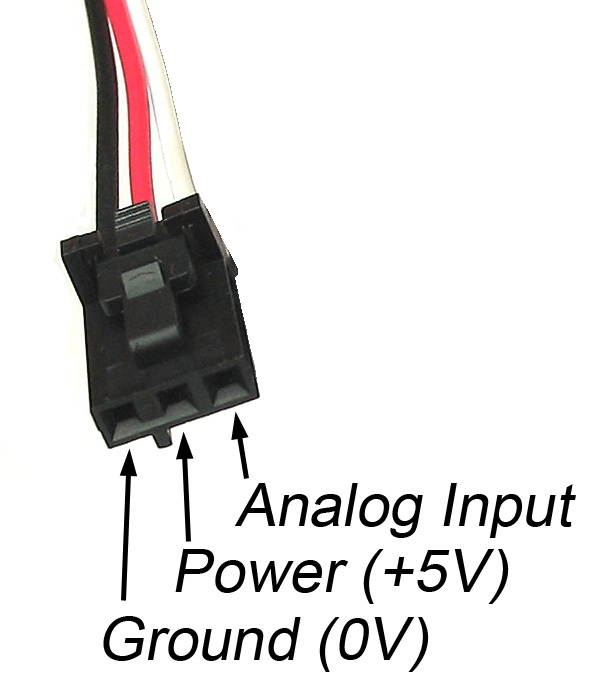

About the Release
This "IoT in five days" release version correspond to:
Version: 1.1
Date: 24th June 2016
This book and sources are distributed under the terms of the Creative Commons Attribution-NonCommercial-ShareAlike 4.0 International (CC BY-NC-SA 4.0).
About the Book
The "IoT in five days" book is in active development by a joint effort from both academia and industrial collaborators, acknowledging that the Internet of Things of the future will be built on top of scalable and mature protocols, such as IPv6, 6LoWPAN and IEEE 802.15.4. Open Source Operating Systems as Contiki, with more than 10 years of history and actively supported by universities and research centers, have been paving the Internet of Things road since the early beginnings of Wireless Sensor Networks and M2M communication, enabling the new IoT paradigm.
The content of the book are Open Source as well, feedback and contribution is more than welcome! Please engage visiting IoT in five days GitHub repository
The book has been developed in asciidoc, and it can be compiled from its sources to produce HTML, PDF, eBook and others formats.
The following are the authors who contributed to this book:
Antonio Liñán defines himself as "an engineer at day, maker at night" (he would do both for free). He has more than 8 years of experience,having worked in over than 20 projects of in Wireless Sensor Networks (WSN), Internet of Things (IoT) applications and embedded firmware development; employed at Zolertia as both senior R+D engineer and CTO, buf if you ask him he just "makes things blink and chat". In his free time he’s normally engaged in Coursera, collecting hardware platforms, dwelling in hackathons or preaching about GIT. He has a Master at the University of Los Andes (Colombia), has worked in European Projects related to Smart Cities, Internet of Things and Security, and currently is a prominent contributor in severals Open Source communities, like the one focusing on Contiki.
Alvaro Vives loves technology, problem solving, learning and teaching. Doing these things he has become a consultant, a network and systems engineer, and a trainer. As a consultant, he has worked on projects in several countries, at ISPs, content providers, public organizations and enterprises. As a trainer, since 2006 has lectured at more than 46 workshops in 18 countries directed to ISPs, content providers, public organizations, enterprises as well as in events like LACNIC/LACNOG, SANOG, WALC, and ESNOG. As network and systems administrator he has been in charge of production networks and services in several companies using different technologies from a variety of vendors. At present, he is working with WSN and IoT as a consequence of the convergence of IPv6 and IoT.
Antoine Bagula obtained his doctoral degree in 2006 from the KTH-Royal Institute of Technology in Sweden. He held lecturing positions at StellenboschUniversity (SUN) and the University of Cape Town (UCT) before joining the Computer Science department at the University of the Western Cape in January 2014. Since 2006, He has been a frequent consultant of the UNESCO through its International Centre for Theoretical Physics in Trieste, Italy, the World Bank and other international organizations on different telecommunication projects. His research interest lies on the Internet-of-Things, Big Data and Cloud Computing, Network security and Network protocols for wireless, wired and hybrid networks.
Marco Zennaro received his M.Sc. degree in Electronic Engineering from University of Trieste in Italy. He defended his PhD thesis on “Wireless Sensor Networks for Development: Potentials and Open Issues” at KTH-Royal Institute of Technology, Stockholm, Sweden. His research interest is in ICT4D, the use of ICT for development. In particular, he is interested in Wireless Networks and in Wireless Sensor Networks in developing countries. He has been giving lectures on Wireless technologies in more than 20 countries. He is coauthor of the book “Wireless Networking for the Developing World”.
Ermanno Pietrosemoli is currently a researcher at the Telecommunications/ICT for Development Lab of the International Centre for Theoretical Physics in Trieste, Italy, and President of Fundación Escuela Latinoamericana de Redes, “EsLaRed”, a non-profit organization that promotes ICT in Latin America through training and development projects. EsLaRed was awarded the 2008 Jonathan B.Postel Service Award by the Internet Society.
Ermanno has been deploying wireless data communication networks focusing on low cost technology, participating in the planning and building of wireless data networks in Argentina, Colombia, Ecuador, Italy, Lesotho, Malawi, Mexico, Micronesia, Morocco, Mozambique, Nicaragua, Peru, Trinidad, U.S.A., Venezuela and Zambia. He has presented in many conferences, published several papers related to wireless data communication, and is coauthor and technical reviewer of the (freely available) book “Wireless Networking for the Developing World”. Ermanno holds a Master’s degree from Stanford University and was Professor of Telecommunications at Universidad de los Andes in Venezuela from 1970 to 2000.
The Internet of Things (IoT)
Building upon a complex network connecting billions of devices and humans into a multi-technology, multi-protocol and multi-platform infrastructure, the Internet-of-Things (IoT) main vision is to create an intelligent world where the physical, the digital and the virtual are converging to create smart environments that provide more intelligence to the energy, health, transport, cities, industry, buildings and many other areas of our daily life.
The expectation is that of interconnecting millions of islands of smart networks enabling access to the information not only “anytime” and “anywhere” but also using “anything” and “anyone” ideally through any “path”, “network” and “any service”. This will be achieved by having the objects that we manipulate daily to be outfitted with sensing, identification and positioning devices and endowed with an IP address to become smart objects, capable of communicating with not only other smart objects but also with humans with the expectation of reaching areas that we could never reach without the advances made in the sensing, identification and positioning technologies.
While being globally discoverable and queried, these smart objects can similarly discover and interact with external entities by querying humans, computers and other smart objects. The smart objects can also obtain intelligence by making or enabling context related decisions taking advantage of the available communication channels to provide information about themselves while also accessing information that has been aggregated by other smart objects.
As revealed by Figure 1, the IoT is the new essential infrastructure which is predicted to connect 50 billion of smart objects in 2020 when the world population will reach 7.6 billion. As suggested by the ITU, such essential infrastructure will be built around a multi-layered architecture where the smart objects will be used to deliver different services through the four main layers depicted by Figure 2: a device layer, a network layer, a support layer and the application layer.
In the device layer lie devices (sensors, actuators, RFID devices) and gateways used to collect the sensor readings for further processing while the network layer provides the necessary transport and networking capabilities for routing the IoT data to processing places. The support layer is a middleware layer that serves to hide the complexity of the lower layers to the application layer and provide specific and generic services such as storage in different forms (database management systems and/or cloud computing systems) and many other services such as translation.

As depicted in Figure 3, the IoT can be perceived as an infrastructure driving a number of applications services which are enabled by a number of technologies. Its application services expand across many domains such as smart cities, smart transport, smart buildings, smart energy, smart industry and smart health while it is enabled by different technologies such as sensing, nanoeletronics, wireless sensor network (WSN), radio frequency identification (RFID), localization, storage and cloud. The IoT systems and applications are designed to provide security, privacy, safety, integrity, trust, dependability, transparency, anonymity and are bound by ethics constraints.
Experts say we are heading towards what can be called a "ubiquitous network society", one in which networks and networked devices are omnipresent. RFID and wireless sensors promise a world of networked and interconnected devices that provide relevant content and information whatever the location of the user. Everything from tires to toothbrushes will be in communications range, heralding the dawn of a new era, one in which today’s Internet (of data and people) gives way to tomorrow’s Internet of Things.
At the dawn of the Internet revolution, users were amazed at the possibility of contacting people and information across the world and across time zones. The next step in this technological revolution (connecting people any-time, anywhere) is to connect inanimate objects to a communication network. This vision underlying the Internet of things will allow the information to be accessed not only "anytime" and "anywhere" but also by "anything". This will be facilitated by using WSNs and RFID tags to extend the communication and monitoring potential of the network of networks, as well as the introduction of computing power in everyday items such as razors, shoes and packaging.
WSNs are an early form of ubiquitous information and communication networks. They are one of building blocks of the Internet of things.
Wireless Sensor Networks
A Wireless Sensor Network (WSN) is a self-configuring network of small sensor nodes (so-called motes) communicating among them using radio signals, and deployed in quantity to sense the physical world. Sensor nodes are essentially small computers with extremely basic functionality. They consist of a processing unit with limited computational power and limited memory, a radio communication device, a power source and one or more sensors.
Motes come in different sizes and shapes, depending on their foreseen use. They can be very small, if they are to be deployed in big numbers and need to have little visual impact. They can have a rechargeable battery power source if they are to be used in a lab. The integration of these tiny, ubiquitous electronic devices in the most diverse scenarios ensures a wide range of applications. Some of the application areas are environmental monitoring, agriculture, health and security.
In a typical application, a WSN is scattered in a region where it is meant to collect data through its sensor nodes. These networks provide a bridge between the physical world and the virtual world. They promise unprecedented abilities to observe and understand large scale, real-world phenomena at a fine spatio-temporal resolution. This is so because one deploys sensor nodes in large numbers directly in the field, where the experiments take place. All motes are composed of five main elements as shown below:
-
Processor: the task of this unit is to process locally sensed information and information sensed by other devices. At present the processors are limited in terms of computational power, but given Moore’s law, future devices will come in smaller sizes, will be more powerful and consume less energy. The processor can run in different modes: sleep is used most of the time to save power, idle is used when data can arrive from other motes, and active is used when data is sensed or sent to / received from other motes.
-
Power source: motes are meant to be deployed in various environments, including remote and hostile regions so they must use little power. Sensor nodes typically have little energy storage, so networking protocols must emphasize power conservation. They also must have built-in mechanisms that allow the end user the option of prolonging network lifetime at the cost of lower throughput. Sensor nodes may be equipped with effective power scavenging methods, such as solar cells, so they may be left unattended for months, or years. Common sources of power are rechargeable batteries, solar panels and capacitors.
-
Memory: it is used to store both programs (instructions executed by the processor) and data (raw and processed sensor measurements).
-
Radio: WSN devices include a low-rate, short-range wireless radio. Typical rates are 10-100 kbps, and range is less than 100 meters. Radio communication is often the most power-intensive task, so it is a must to incorporate energy-efficient techniques such as wake-up modes. Sophisticated algorithms and protocols are employed to address the issues of lifetime maximization, robustness and fault tolerance.
-
Sensors: sensor networks may consist of many different types of sensors capable of monitoring a wide variety of ambient conditions. Table 1 classifies the three main categories of sensors based on field-readiness and scalability. While scalability reveals if the sensors are small and inexpensive enough to scale up to many distributed systems, the field-readiness describes the sensor’s engineering efficiency with relation to field deployment. In terms of the engineering efficiency, Table 1 reveals high field-readiness for most physical sensors and for a few chemical sensors since most chemical sensors lie in the medium and low levels, while biological sensors have low field-readiness.
| Sensor Category | Parameter | Field-Readiness | Scalability |
|---|---|---|---|
Physical |
Temperature |
High |
High |
Moisture Content |
High |
High |
|
Flow rate, Flow velocity |
High |
Med-High |
|
Pressure |
High |
High |
|
Light Transmission (Turb) |
High |
High |
|
Chemical |
Dissolved Oxygen |
High |
High |
Electrical Conductivity |
High |
High |
|
pH |
High |
High |
|
Oxydation Reduction Potential |
Medium |
High |
|
Major Ionic Species (Cl-, Na+) |
Low-Medium |
High |
|
Nutrientsa (Nitrate, Ammonium) |
Low-Medium |
Low-High |
|
Heavy metals |
Low |
Low |
|
Small Organic Compounds |
Low |
Low |
|
Large Organic Compounds |
Low |
Low |
|
Biological |
Microorganisms |
Low |
Low |
Biologically active contaminants |
Low |
Low |
Common applications include the sensing of temperature, humidity, light, pressure, noise levels, acceleration, soil moisture, etc. Due to bandwidth and power constraints, devices primarily support low-data-units with limited computational power and limited rate of sensing. Some applications require multi-mode sensing, so each device may have several sensors on board.
Following is a short description of the technical characteristics of WSNs that make this technology attractive.
-
Wireless Networking: motes communicate with each other via radio in order to exchange and process data collected by their sensing unit. In some cases, they can use other nodes as relays, in which case the network is said to be multi-hop. If nodes communicate only directly with each other or with the gateway, the network is said to be single-hop. Wireless connectivity allows to retrieve data in real-time from locations that are difficult to access. It also makes the monitoring system less intrusive in places where wires would disturb the normal operation of the environment to monitor. It reduces the costs of installation: it has been estimated that wireless technology could eliminate up to 80 % of this cost.
-
Self-organization: motes organize themselves into an ad-hoc network, which means they do not need any pre-existing infrastructure. In WSNs, each mote is programmed to run a discovery of its neighborhood, to recognize which are the nodes that it can hear and talk to over its radio. The capacity of organizing spontaneously in a network makes them easy to deploy, expand and maintain, as well as resilient to the failure of individual points.
-
Low-power: WSNs can be installed in remote locations where power sources are not available. They must therefore rely on power given by batteries or obtained by energy harvesting techniques such as solar panels. In order to run for several months of years, motes must use low-power radios and processors and implement power efficient schemes. The processor must go to sleep mode as long as possible, and the Medium-Access layer must be designed accordingly. Thanks to these techniques, WSNs allow for long-lasting deployments in remote locations.
Applications of Wireless Sensor Networks
The integration of these tiny, ubiquitous electronic devices in the most diverse scenarios ensures a wide range of applications. Some of the most common application areas are environmental monitoring, agriculture, health and security. In a typical application, a WSN include:
-
Tracking the movement of animals. A large sensor network has been deployed to study the effect of micro climate factors in habitat selection of sea birds on Great Duck Island in Maine, USA. Researchers placed their sensors in burrows and used heat to detect the presence of nesting birds, providing invaluable data to biological researchers. The deployment was heterogeneous in that it employed burrow nodes and weather nodes.
-
Forest fire detection. Since sensor nodes can be strategically deployed in a forest, sensor nodes can relay the exact origin of the fire to the end users before the fire is spread uncontrollable. Researchers from the University of California, Berkeley, demonstrated the feasibility of sensor network technology in a fire environment with their FireBug application.
-
Flood detection. An example is the ALERT system deployed in the US. It uses sensors that detect rainfall, water level and weather conditions. These sensors supply information to a centralized database system.
-
Geophysical research. A group of researchers from Harvard deployed a sensor network on an active volcano in South America to monitor seismic activity and similar conditions related to volcanic eruptions.
-
Agricultural applications of WSN include precision agriculture and monitoring conditions that affect crops and livestock. Many of the problems in managing farms to maximize production while achieving environmental goals can only be solved with appropriate data. WSN can also be used in retail control, particularly in goods that require being maintained under controlled conditions (temperature, humidity, light intensity, etc) [SusAgri].
-
An application of WSN in security is predictive maintenance. BP’s Loch Rannoch project developed a commercial system to be used in refineries. This system monitors critical rotating machinery to evaluate operation conditions and report when wear and tear is detected. Thus one can understand how a machine is wearing and perform predictive maintenance. Sensor networks can be used to detect chemical agents in the air and water. They can also help to identify the type, concentration and location of pollutants.
-
An example of the use of WSN in health applications is the Bi-Fi, embedded system architecture for patient monitoring in hospitals and out-patient care. It has been conceived at UCLA and is based on the SunSPOT architecture by Sun. The motes measure high-rate biological data such as neural signals, pulse oximetry and electrocardiographs. The data is then interpreted, filtered, and transmitted by the motes to enable early warnings.
Roles in a Wireless Sensor Network
Nodes in a WSN can play different roles.
-
Sensor nodes are used to sense their surroundings and transmit the sensor readings to a sink node, also called "base station". They are typically equipped with different kinds of sensors. A mote is endowed with on-board processing, communication capabilities and sensing capabilities.
-
Sink nodes or "base stations" are tasked to collect the sensor readings of the other nodes and pass these readings to a gateway to which they are directly connected for further processing/analysis. A sink node is endowed with minimal on-board processing and communication capabilities but does not have sensing capabilities.
-
Actuators are devices which are used to control the environment, based on triggers revealed by the sensor readings or by other inputs. An actuator may have the same configuration as a mote but it is also endowed with controlling capabilities, for example to switch a light on under low luminosity.
Gateways often connected to sink nodes and are usually fed by a stable power supply since they consume considerable energy. These entities are normal computing devices such as laptops, notebooks, desktops, mobile phones or other emerging devices which are able to store, process and route the sensor readings to the processing place. However, they may not be endowed with sensing capabilities. Being range-limited, sensor motes require multi-hop communication capabilities to allow: 1) spanning distances much larger than the transmission range of a single node through localized communication between neighbor nodes 2) adaptation to network changes, for example, by routing around a failed node using a different path in order to improve performance and 3) using less transmitter power as a result of the shorter distance to be spanned by each node. They are deployed in three forms : (1) Sensor node used to sense the environment (2) Relay node used as relay for the sensor readings received from other nodes and (3) Sink node also often called base station which is connected to a gateway (laptop, tablet, iPod, Smart phone, desktop) with higher energy budget capable of either processing the sensor readings locally or to transmit these readings to remote processing places.
Introduction to IPv6
IPv6 stands for Internet Protocol version 6, so the importance of IPv6 is implicit in its name, it’s as important as the Internet! The Internet Protocol (IP from now on) was intended as a solution to the need to interconnect different data networks, and has become the “de facto” standard for all kinds of digital communications. Nowadays IP is present in most devices that are able to send and receive digital information, not only the Internet.
IP is standardized by the IETF (Internet Engineering Task Force), the organization in charge of all the Internet standards, guaranteeing the interoperability among software from different vendors. The fact that IP is a standard is of vital importance, because today everything is getting connected to the Internet using IP. All common Operating Systems and networking libraries support IP to send and receive data. As part of this "everything-connected-to-Internet" is the IoT, so now you know why you are reading this chapter about IPv6, the last version of the Internet Protocol. In other words, today, the easiest way to send and receive data is by means of the standards used in the Internet, including IP.
The objectives of this chapter are:
-
Briefly describe the history of the Internet Protocol.
-
Find out what IPv6 is used for.
-
Get the IPv6 related concepts needed to understand the rest of the book.
-
Provide a practical overview of IPv6, including addresses and a glimpse of how an IPv6 network looks like.
A little bit of History
ARPAnet was the first attempt of the US Department of Defense (DoD) to devise a decentralized network more resilient to an attack, while able to interconnect completely different systems. ARPAnet was created in the seventies, but it was in 1983 when a brand new protocol stack was introduced, TCP/IP. The first widely used network protocol version was IPv4 (Internet Protocol version 4) which paved the way to the civilian Internet. Initially only research centers and universities were connected, supported by the NSF (National Science Foundation), and commercial applications where not allowed, but when the network started growing exponentially the NSF decided to transfer its operation and funding to private operators, lifting the restrictions to commercial traffic. While the main applications were email and file transfer, it was with the development of the World Wide Web based on the HTML protocol and specifically with the MOSAIC graphic interface browser and its successors that the traffic really exploded and the Internet began to be used by the masses. As a consequence there was a rapid depletion in the number of IP addresses available under IPv4, which was not designed to scale to these levels.
In order to allow for more addresses, you need a longer IP address space (greater number of bits to specify the address), which means a new architecture, which means changes to most of the routing and network software. After examining a number of proposals, the IETF settled on IPv6, described in the January 1995 RFC (Request for Comment, the official IETF documentation naming) 1752, sometimes also referred to as the Next Generation Internet Protocol, or IPng. The IETF updated the IPv6 standard in 1998 with the current definition covered in RFC 2460. By 2004, IPv6 was widely available from industry and supported by most new network equipment. Today IPv6 coexists with IPv4 in the Internet and the amount of IPv6 traffic is quickly growing as more and more ISPs and content providers have started supporting IPv6.
As you can see, the history of IP and Internet are almost the same, and because of this the growth of Internet is been hampered by the limitations of IPv4, and has led to the development of a new version of IP, IPv6, as the protocol to be used to interconnect all sorts of devices to send and/or receive information. There are even some technologies that are being developed only with IPv6 in mind, a good example in the context of the IoT is 6LowPAN.
From now on we will only center on IPv6. If you know something about IPv4, then you have half the way done, if not, don’t worry we will cover the main concepts briefly and gently.
IPv6 Concepts
We will cover the the minimum you need to know about the last version of the Internet Protocol to understand why it’s so useful for the IoT and how it’s related with other protocols like 6LowPAN discussed later. We will assume that you are familiar with bits, bytes, networking stack, network layer, packets, IP header, etc. You should understand that IPv6 is a different protocol, non-compatible with IPv4.
In the following figure we represent the layered model used in the Internet.
IPv6 sits in layer 3, called network layer. The pieces of data handled by layer 3 are called packets. Devices connected to the Internet can be hosts or routers. A host can be a PC, a laptop or a sensor board, sending and/or receiving data packets. Hosts will be the source or destination of the packets. Routers instead are in charge of packet forwarding, and are responsible of choosing the next router that will forward them towards the final destination. Internet is composed of a lot of interconnected routers, which receive data packets in one interface and send then as quick as possible using another interface towards another forwarding router.
IPv6 packet
The first thing you should know is what an IPv6 packet looks like. In the layered model we saw before, each layer introduces its own information in the packet, and this information is intended for, and can only be processed by the same layer in another IP device. This "conversation" between layers at the same level on different devices must follow a protocol.
The Internet layers are:
-
Application: Here resides the software developed by programmers, that will use network services offered by the network stack. An example is the web browser that opens a network connection towards a web server. Another example is the web server software that runs in a server somewhere in the Internet waiting to answer request from client’s browsers. Examples of application protocols are HTTP and DNS.
-
Transport: Is a layer above the network layer that offers additional to it, for example, retransmission of lost packets or guaranteeing that the packets are received in the same order they were sent. This layer will be the one that shows a "network service" to the application layer, a service they can use to send or receive data. TCP and UDP are the most common transport protocols used in Internet.
-
Network: This is the layer in charge of the correct delivery of the data received from the transport layer to its destination, as well as the reception of the received data from the link layer at the data destination. Internet uses only one protocol in this layer, namely IP. Source and destination are identified by means of the IP addresses.
-
Link: Link layer is in charge of sending and receiving frames, a collection of bytes sent from the network layer, in the realm of a local area network or LAN. It specifies the mecanism used to share the medim among diffrent nodes. This layer has its own addresses, which depend on the technology deployed.
-
Physical: This layer is in charge of the details of the electromagnetic signal, codifications, etc. needed for the digital information to go from one node to another. All physical media are included, both wired and wireless.
The following figure illustrates the idea that each of the layers described receive some bytes from the layer above and adds some specific information pertaining that layer to be processed in the receiving host. In the figure data originating at the application layer is sent to the physical layer of another node.
The bytes sent and received in the IP packet follow a standard format. The following figure shows the basic IPv6 header:
First you have the basic IPv6 header with a fixed size of 40 bytes, followed by upper layer data and optionally by some extension headers, which will be described later. As you can see there are several fields in the packet header, providing some improvements as compared with IPv4 header:
-
The number of fields has been reduced from 12 to 8.
-
The basic IPv6 header has a fixed size of 40 bytes and is aligned with 64 bits, allowing a faster hardware-based packet forwarding on routers.
-
The size of addresses increased from 32 to 128 bits.
The most important fields are the source and destination addresses. As you already know, every IP device has a unique IP address that identifies it in the Internet. This IP address is used by routers to take their forwarding decisions.
IPv6 header has 128 bits for each IPv6 address, this allows for 2128 addresses (approximately 3.4×1038,i.e., 3.4 followed by 38 zeroes), whereas IPv4 uses 32 bits to encode each of the 232 addresses (4,294,967,296) allowed.
We have seen the basic IPv6 header, and mentioned the extension headers. To keep the basic header simple and of a fixed size, additional features are added to IPv6 by means of extension headers.
Several extension headers have been defined, as you can see in the previous figure, and they have to follow the order shown. Extensions headers:
-
Provide flexibility, for example, to enable security by ciphering the data in the packet.
-
Optimize the processing of the packet, because with the exception of the hop by hop header, extensions are processed only by end nodes, (source and final destination of the packet), not by every router in the path.
-
They are located as a "chain of headers" starting always in the basic IPv6 header, that use the field next header to point to the following extension header.
IPv6 addressing
-
The use of 128 bits for addresses brings some benefits:
-
Provides many more addresses, to satisfy current and future needs, with ample space for innovation.
-
Simplifies address auto-configuration mechanisms.
-
Easier address management/delegation.
-
Room for more levels of hierarchy and for route aggregation.
-
Ability to do end-to-end IPsec.
-
IPv6 addresses are classified into the following categories (which also exist in IPv4):
-
Unicast (one-to-one): used to send a packet from the source to a single destination. They are the commonest ones and we will talk more about them and their sub-classes.
-
Multicast (one-to-many): used to send a packet from the source to several destinations. This is possible by means of multicast routing that enable packets to replicate in some places.
-
Anycast (one-to-nearest): used to send a packet from the source to the nearest destination from a set of them.
-
Reserved: Addresses or groups of them for special uses, for example addresses to be used on documentation and examples.
Before entering into more detail about IPv6 addresses and the types of unicast addresses, let’s see how do they look like and what are the notation rules. You need to have them clear because probably the first problem you will find in practice when using IPv6 is how to write an address.
IPv6 addresses notation rules are:
-
8 Groups of 16 bits separated by “:”.
-
Hexadecimal notation of each nibble (4 bits).
-
Non case sensitive.
-
Network Prefixes (group of addresses) are written Prefix / Prefix Length, i.e., prefix length indicate the number of bits of the address that are common for the group.
-
Leftmost zeroes within each group can be eliminated.
-
One or more all-zero-groups can be substituted by “::”. This can be done only once.
The first three rules tell you the basis of IPv6 address notation. They use hexadecimal notation, i.e., numbers are represented by sixteen symbols between 0 and F. You will have eight groups of four hexadecimal symbols, each group separated by a colon ":". The last two rules are for address notation compression, we will see how this works in the following.
Let’s see some examples:
1) If we represent all the address bits we have the preferred form, for example: 2001:0db8:4004:0010:0000:0000:6543:0ffd
2) If we use squared brackets around the address we have the literal form of the address: [2001:0db8:4004:0010:0000:0000:6543:0ffd]
3) If we apply the fourth rule, allowing compression within each group by eliminating leftmost zeroes, we have: 2001:db8:4004:10:0:0:6543:ffd
4) If we apply the fifth rule, allowing compression of one or more consecutive groups of zeroes using "::", we have: 2001:db8:4004:10::6543:ffd
Care should be taken when compressing and decompressing IPv6 addresses. The process should be reversible. It’s very common to have some mistakes. For example, the following address 2001:db8:A:0:0:12:0:80 could be compressed even more using "::". we have two options:
a) 2001:db8:A::12:0:80
b) 2001:db8:A:0:0:12::80
Both are correct IPv6 addresses. But the address 2001:db8:A::12::80 is wrong, since it does not follow the last compression rule we saw above. The problem with this badly compressed address is that we can’t be sure how to expand it, its ambiguous. We can’t know if it expands to 2001:db8:A:0:12:0:0:80 or to 2001:db8:A:0:0:12:0:80.
IPv6 network prefix
Last but not least you have to understand the concept of a network prefix, that indicates some fixed bits and some non-defined bits that could be used to create new sub-prefixes or to define complete IPv6 addresses assigned to hosts.
Let’s see some examples:
1) The network prefix 2001:db8:1::/48 (the compressed form of 2001:0db8:0001:0000:0000:0000:0000:0000) indicates that the first 48 bits will always be the same (2001:0db8:0001) but that we can play with the other 80 bits, for example, to obtain two smaller prefixes: 2001:db8:1:a::/64 and 2001:db8:1:b::/64.
2) If we take one of the smaller prefixes defined above, 2001:db8:1:b::/64, where the first 64 bits are fixed we have the rightmost 64 bits to assign, for example, to an IPv6 interface in a host: 2001:db8:1:b:1:2:3:4.
This last example allow us to introduce a basic concept in IPv6: * A /64 prefix is always used in a LAN (Local Area Network) . *The rightmost 64 bits, are called the interface identifier (IID) because they uniquely identify a host’s interface in the local network defined by the /64 prefix. The following figure illustrates this statement:

Now that you have seen your first IPv6 addresses we can enter into more detail about two types of addresses you will find when you start working with IPv6: reserved and unicast.
-
The unspecified address, used as a placeholder when no address is available:
0:0:0:0:0:0:0:0(::/128) -
The loopback address, is used by a node to send an IPv6 packet to itself:
0:0:0:0:0:0:0:1(::1/128) -
Documentation Prefix:
2001:db8::/32. This prefix is reserved to be used in examples and documentation, you have already seen it in this chapter.
As specified in [RFC6890] IANA maintains a registry of special purpose IPv6 addresses [IANA-IPV6-SPEC].
The following are some other types of unicast addresses [RFC4291]:
-
Link-local: Link-local addresses are always present in an IPv6 interface that is connected to a network. They all start with the prefix
FE80::/10and can be used to communicate with other hosts on the same local network, i.e., all hosts connected to the same switch. They cannot be used to communicate with other networks, i.e., to send or receive packets through a router. -
ULA (Unique Local Address) [RFC4193]: All ULA addresses start with the prefix FC00::/7, which in practice means that you could see
FC00::/8orFD00::/8. Intended for local communications, usually inside a single site, they are not expected to be routable on the global Internet butused only inside a more limited environment. -
Global Unicast: Equivalent to the IPv4 public addresses, they are unique in the whole Internet and can be used to send a packet from one site to any destination in Internet.
What is IPv6 used for?
As we have seen IPv6 has some features that facilitates things like global addressing and host’s address autoconfiguration. Because IPv6 provides as many addresses as we may need for some hundreds of years, we can put a global unicast IPv6 address on almost anything we may think of. This brings back the initial Internet paradigm that every IP device could communicate with every IP device. This end-to-end communication allows bidirectional communication all over the Internet and between any IP device, which could result in collaborative applications and new ways of storing, sending and accessing the information.
In the context of this book we can, for example, contemplate IPv6 sensors all around the world collecting, sending and being accessed from different places to create a world-wide mesh of physical values measured, stored and processed.
The availability of a huge amount of addresses has allowed a new mechanism called stateless address autoconfiguration (SLAAC) that didn’t exist with IPv4. Here is a brief summary of different ways to configure an address on an IPv6 interface:
-
Statically: You can decide which address you will give to your IP device and then manually configure it into the device using any kind of interface: web, command line, etc. Normally you also have to configure other network parameters like the gateway to use to send packets out of your network.
-
DHCPv6 (Dynamic Host Configuration Protocol for IPv6) [RFC3315]: A porting of the similar mechanism already available in IPv4. You need to configure a dedicated server that after a brief negotiation with the device assigns an IP address to it. DHCPv6 allows IP devices to be configured automatically, this is why it is named stateful address autoconfiguration, because the DHCPv6 server maintains a state of assigned addresses.
-
SLAAC: Stateless address autoconfiguration [RFC4862] is a new mechanism introduced with IPv6 that allows to configure automatically all network parameters on an IP device using the router that gives connectivity to a network.
The advantage of SLAAC is that it simplifies the configuration of "dumb" devices, like sensors, cameras or any other device with low processing power. You don’t need to use any interface in the IP device to configure anything, just "plug and net". It also simplifies the network infrastructure needed to build a basic IPv6 network, because you don’t need additional device/server, you use the same router you need to send packets outside your network to configure the IP devices. We are not going to enter into details, but you just need to know that in a LAN (Local Area Network), connected to Internet by means of a router, this router is in charge of sending all the configuration information needed to its hosts using an RA (Router Advertisement) message. The router will send RAs periodically, but in order to expedite the process a host can send an RS (Router Solicitation) message when its interface gets connected to the network. The router will send an RA immediately in response to the RS.
The following figure show the packet exchange between a host that has just connected to a local network and some IPv6 destination in the Internet:
1) R1 is the router that gives connectivity to the host in the LAN and is periodically sending RAs.
2) Both R1 and Host have a link-local address in their interfaces connected to the host’s LAN, this address is configured automatically when the interface is ready. Our host creates it’s link-local address by combining the 64 leftmost bits of the link-local’s prefix (fe80::/64) and the 64 rightmost bits of a locally generated IID (:3432:7ff1:c001:c2a1). These link-local addresses can be used in the LAN to exchange packets, but not to send packets outside the LAN.
3) The hosts needs two basic things to be able to send packets to other networks: a global IPv6 address and the address of a gateway, i.e., a router to which send the packets it wants to get routed outside its network.
4) Although R1 is sending RAs periodically (usually every several seconds) when the host get connected and has configured its link-local address, it sends an RS to which R1 responds immediately with an RA containing two things:
-
A global prefix of length 64 bits that is intended for SLAAC. The host takes the received prefix and adds to it a locally generated IID, usually the same one used for link-local address. This way a global IPv6 address is configured in the host and now can communicate with the IPv6 Internet
-
Implicitly included is the link-local address of R1, because it is the source address of the RA. Our host can use this address to configure the default gateway, the place to which send the packets by default, to reach an IPv6 host somewhere in Internet.
5) Once both the gateway and global IPv6 address are configured, the host can receive or send information. In the figure it has something to send (Tx Data) to a host in Internet, so it creates an IPv6 packet with the destination address of the recipient host and as source address the just autoconfigured global address, which is sent to its gateway, R1’s link-local address. The destination host can answer with some data (Rx Data).
Network Example
Following we show how a simple IPv6 network looks like, displaying IPv6 addresses for all the networking devices.
We have four hosts, (sensors, or other devices), and we want to put a pair of them in two different places, for example two floors in a building. We are dealing with four IP devices but you can have up to 264 (18,446,744,073,709,551,616) devices connected on the same LAN.
We create two LANs with a router on each one, both routers connected to a central router (R1) that provides connectivity to Internet. LAN1 is served by R2 (with link-local address fe80::2c:f3f4:1214:a on that LAN) and uses the prefix 2001:db8:1:2::/64 announced by SLAAC. LAN2 is served by R3 (with link-local address fe80::1b:fff4:3344:b on that LAN) and uses the prefix 2001:db8:1:3::/64 announced by SLAAC.
All hosts have both a link-local IPv6 address and a global IPv6 address autoconfigured using the prefix provided by the corresponding router by means of RAs. In addition, remember that each host also configures the gateway using the link-local address used by the router for the RA. Link-local address can be used for communication among hosts inside a LAN, but for communicating with hosts in other LANs or any other network outside its own LAN a global IPv6 address is needed.
Short intro to Wireshark

Wireshark is a free and open-source packet analyzer, which allows packet traces to be sniffed, captured, and analyzed.
A packet trace is a record of traffic at some location on the network, as if a snapshot was taken of all the bits that passed across a particular wire. The packet trace records a timestamp for each packet, along with the bits that make up the packet, from the low-layer headers to the higher-layer contents.
Wireshark runs on most operating systems, including Windows, MAC and Linux. It provides a graphical user interface that shows the sequence of packets and the meaning of the bits when interpreted as protocol headers and data. The packets are color-coded to convey their meaning, and Wireshark includes various ways to filter and analyze them to let you investigate different aspects of behavior. It is widely used to troubleshoot networks.
A common usage scenario is when a person wants to troubleshoot network problems or look at the internal workings of a network protocol. A user could, for example, see exactly what happens when he or she opens up a website or sets up a wireless sensor network. It is also possible to filter and search for given packet attributes, which facilitates the debugging process.
More information and installation instructions are available at Wireshark site.
When you open Wireshark, there are four main areas, from top to bottom: menus and filters, list of captured packets, detailed information about the selected packet, including its full content in hexadecimal and ASCII. Online directly links you to the Wiresharks site, where you can find a handy user guide and information on the security of Wireshark. Under Files, you’ll find Open, which lets you open previously captured files,, and Sample Captures. You can download any of the sample captures through this website, and study the data. This will help you understand what kind of packets Wireshark can capture.
The Capture section let you choose your Interface from the available ones. It’ll also show you which ones are active. Clicking details will show you some pretty generic information about that interface.
Under Start, you can choose one or more interfaces to check out. Capture Options allows you to customize what information you see during a capture. Here you can choose a filter, a capture file, and more. Under Capture Help, you can read up on how to capture, and you can check info on Network Media about which interfaces work on which platforms.
Let’s select an interface and click Start. To stop a capture, press the red square in the top toolbar. If you want to start a new capture, hit the green triangle which looks like a shark fin next to it. Now that you have got a finished capture, you can click File, and save, open, or merge the capture. You can print it, you can quit the program, and you can export your packet capture in a variety of ways.
You can find a certain packet, copy packets, mark (highlight) any specific packet or all the packets. Another interesting thing you can do under Edit, is resetting the time value. You’ll notice that the time is in seconds incrementing. You can reset it from the packet you’ve clicked on. You can add a comment to a packet, configure profiles and preferences.
When we select a packet from the list of captured ones, Wireshark shows detailed information of the different protocols used by that packet, for example Ethernet:
Or IPv6, where we can see the fields we mentioned before: Version, Traffic class, flowlabel, payload length, next header, etc.:
There are two methods to apply filters to the list of captured packets:
-
Write a filter expression on the specific box and then apply it. Protocols can be specified (ip,ipv6, icmp, icmpv6), fields of a protocol (ipv6.dst, ipv6.src) and even complex expressions can be created using operators like AND (&&), OR (||) or the negation (|).

-
Another option to create filters is to right click in one filed of a captured packet, in the list of captured packets. There will appear a menu option "Apply as filter", with several options on how to use that field.
Another useful and interesting option of Wireshark is the possibility to see statistics about the captured traffic. If we have applied filters, the statistics will be about the filtered traffic. Just go to the Statistics menu and select, for example, Protocol Hierarchy:
Other interesting options are:
-
Conversation List → IPv6
-
Statistics → Endpoint List → IPv6
-
Statistics → IO Graph
This last option allow to create graphs with different lines for different types of traffic and save the image:
|
If you are using Ubuntu probably you would not be able to run wireshark as non-root user (if you miss this installation option). Type the following to enable non-root: |
IPv6 Exercises
Let’s test your IPv6 knowledge with the following exercises:
1) What is the size of IPv4 and IPv6 addresses?
-
32-bits, 128-bits
-
32-bits, 64-bits
-
32-bits, 112-bits
-
32-bits, 96-bits
-
none of these
2) Which of the following is a valid IPv6 address notation rule?
-
Zeroes on the right inside a group of 16 bits can be eliminated
-
The address is divided in 5 groups of 16 bits separated by ":"
-
The address is divided in 8 groups of 16 bits separated by "."
-
One or more groups of all zeroes could be substituted by "::"
-
Decimal notation is used grouping bits in 4 (nibbles)
3) Interface Identifiers (IID) or the rightmost bits of an IPv6 address used on a LAN will be 64 bits long.
-
True
-
False
4) Which of the following is a correct IPv6 address?
-
2001:db8:A:B:C:D::1 -
2001:db8:000A:B00::1:3:2:F -
2001:db8:G1A:A:FF3E::D -
2001:0db8::F:A::B
5) Which ones of the following sub-prefixes belong to the prefix 2001:db8:0A00::/48? (Choose all that apply)
-
2001:db9:0A00:0200::/56 -
2001:db8:0A00:A10::/64 -
2001:db8:0A:F:E::/64 -
2001:db8:0A00::/64
6) IPv6 has a basic header with more fields than IPv4 header
-
True
-
False
7) Extension headers can be added in any order
-
True
-
False
8) Autoconfiguration of IP devices is the same in IPv4 and IPv6
-
True
-
False
9) Which one is not an option for configuring an IPv6 address in an interface?
-
DHCPv6
-
Fixed address configured by vendor
-
Manually
-
SLAAC (Stateless Address Autoconfiguration)
10) Which packets are used by SLAAC to autoconfigure an IPv6 host?
-
NS/NA (Neighbor Solicitation / Neighbor Advertisement)
-
RS/RA (Router Solicitation / Router Advertisement)
-
Redirect messages
-
NS / RA (Neighbor Solicitation / Router Advertisement)
Addressing Exercises
A) Use the two compression rules for the utmost compression of the following addresses:
-
2001:0db8:00A0:7200:0fe0:000B:0000:0005 -
2001:0db8::DEFE:0000:C000 -
2001:db8:DAC0:0FED:0000:0000:0B00:12
B) Apply maximum decompression (representing all the 32 nibbles in hexadecimal) to the following addresses:
-
2001:db8:0:50::A:123 -
2001:db8:5::1 -
2001:db8:C00::222:0CC0
C) You receive the following IPv6 prefix for your network: 2001:db8:A:0100::/56, shown in the following figure:
Please determine:
-
IPv6 prefix for LAN1, a /64 prefix taken from the /56 you have.
-
IPv6 prefix for LAN2, a /64 prefix taken from the /56 you have.
-
IPv6 prefix for LAN3, a /64 prefix taken from the /56 you have.
-
A global IPv6 address using the LAN1 prefix for H1 host (added to the link-local address already used).
-
A global IPv6 address using the LAN2 prefix for H2 host (added to the link-local address already used).
-
A global IPv6 address using the LAN3 prefix for H3 host (added to the link-local address already used).
Hint: To divide the /56 prefix into /64 prefixes, you have to change the value of the bits 57 to 64, i.e., the XY values in 2001:db8:A:01XY::/64.
|
Connecting our IPv6 Network to the Internet
As said in the introduction of this book, network communications is one of the four basic elements of an IoT system. We already have seen that IPv6 brings the possibility of giving an IP address to almost anything we can think of, and can do this making it easy to autoconfoigure network parameters on our devices.
Once we have all our "things" connected using IPv6, they can use it to communicate among them locally or with any other "thing" on the IPv6 Internet. In this chapter we will focus on the Internet side of the communication of the "things" composing the Internet of Things.
As we will see in this book, the capability of connecting our devices to the Internet allows new possibilities and services. For example, we can connect our wireless sensors networks to a centralized repository, where all the sensed information can be processed and stored for historical records, which will uncover underlying patterns and maybe predict future events. This basic idea is what nowadays is called "Big Data" and has a whole set of its own concepts and techniques.
Getting back to the network connectivity domain, our objective is to connect IoT devices to the Internet using IPv6, allowing communication with other IoT devices, collecting servers or even with people.
Related with the IPv6 connectivity to Internet is an important idea: communication between IoT devices and the IPv6 Internet could be bidirectional. This is important to remark because with IPv4, connectivity is oftentimes designed as a one direction channel between a client and a server. This changes with IPv6.
Having a bidirectional communication with the IoT devices allows useful possibilities, because its not just that the device can send information to somewhere in the Internet, but that anybody in the Internet could be able to send information, requests or commands to the IoT device. This can be used in different scenarios:
-
Management: To manage the IoT device performing some status tests, updating some parameters/configuration/firmware remotely allowing for a better and efficient use of the hardware platform and improving the infrastructure security.
-
Control: Send commands or control actuators to make the IoT device perform an action.
-
Communication: Send information to the IoT device, that can be displayed using some kind of interface.
IIPv6 is still being deployed all over the different networks that compose the Internet, which means that different scenarios can be found when deciding how to connect our network to the IPv6 Internet. Following are the three most common scenarios, in preferred order, being Native IPv6 connectivity the best choice.
-
Native IPv6 Connectivity: This scenario applies when both the ISP providing connectivity to the Internet and the router(s) and networks devices used in our network support of IPv6. Native IPv6 means that the IPv6 packets will flow without being changed or tunnelled anywhere in its path from origin to destination. It is common to find what is called dual-stack networks, where both native IPv6 and native IPv4 are being used at the same time in the same interfaces and devices. This native IPv6 scenario covers both cases: IPv6-only and dual-stack.
As seen in the figure, our IoT devices cloud is connected to a router (R2) that provides them a prefix creating a LAN (LAN2). The router that provides connectivity to the IPv6 Internet (R1) will also be in charge of autoconfiguring IPv6 devices in LAN1 (including R2), by sending RAs (Router Advertisements) as detailed when SLAAC was explained.
-
No IPv6 connectivity: In this scenario we face a common problem nowadays, the lack of IPv6 connectivity from an ISP. Although we have IPv6 support on the router that connects our network to Internet, the ISP supports only IPv4. The solution is to use one of the so called IPv6 Transition Mechanism. The most simple and useful in this case would be the 6in4 tunnel, based on creating a point-to-point static tunnel that encapsulates IPv6 packets into IPv4.
The figure shows this solution created by making a tunnel from R1 to a "remote tunnel end point" where the IPv4 meets the IPv6 Internet. This will be a router having connectivity to both the IPv4 and IPv6 Internet. The native IPv6 traffic from our networks (LAN1 and LAN2) will reach R1, which will take the whole IPv6 packet with its data, and put it inside a new IPv4 packet with the IPv4 destination address corresponding to the tunnel end router. The tunnel end router will grab the IPv6 packet and convey it as native IPv6 traffic into the IPv6 Internet. Similar encapsulation is applied with the IPv6 traffic sent over Ipv4 from the IPv6 Internet to our networks
-
No IPv6 connectivity and no IPv6 capable router: This scenario covers the case where there is no IPv6 connectivity from the ISP, nor IPv6 support on the router connecting our network to the Internet. As seen before, to solve the lack of IPv6 connectivity from the ISP we can use a 6in4 tunnel, but in this scenario we also have to face the lack of IPv6 support on the router which prevents the creation of the tunnel. The solution is to add a new router that supports both IPv6 and IPv4, and create a 6in4 tunnel from this router to a tunnel end router somewhere on the IPv4 Internet.
In this scenario a new router (R3) is added to create a 6in4 tunnel towards the tunnel end router, which also serves as an IPv6 gateway to our networks, sending RAs to autoconfigure IPv6 devices in LAN1. The encapsulation/decapsulation process will work exactly the same as in the previous scenario. The main difference here is that the 6in4 tunnel needs a public IPv4 address, so R3 will need to have a public IPv4 besides the IPv6 address. This is easy to get in routers connected to ISPs, but not so common inside our network where we might have only private addresses using NAT.
The scenarios showed above are based on a good infrastructure, where we have at least two routers and a couple of LANs. All three scenarios could be simplified into a just one router scenario shown in the following figure:
Considerations about lack of IPv6 connectivity from the ISP and IPv6 support on the router are the same as in the previous case, although for the latter the solution is to change the R1 router by one that supports also IPv6.
The last case is common because IoT or WSN could be deployed anywhere, including in remote networks connected using some sort of wireless technology. In this scenario there are severe restrictions on the number of devices, power consumption, etc. For example, a cloud of sensors could be deployed in the country to sense temperature and moisture, all of them getting connectivity through just one router connected using an IPv6 mobile phone network (GPRS, 3G or LTE).
Introduction to 6LoWPAN
One of the drivers of the IoT, where anything can be connected, is the use of wireless technologies to create a communication channel to send and receive information. This wide adoption of wireless technologies allows increasing the number of connected devices but results in limitations in terms of cost, battery life, power consumption, and communication distance for the devices. New technologies and protocols should tackle a new environment, usually called Low power and Lossy networks (LLNs), with the following characteristics:
-
Significantly more devices than those on current local area networks.
-
Severely limited code and ram space in devices.
-
Networks with limited communications distance (range), power and processing resources.
-
All elements should work together to optimize energy consumption and bandwidth usage.
Another factor that is being widely adopted within IoT is the use of IP as the network protocol. The use of IP provides several advantages, because it is an open standard that is widely available, allowing for easy and cheap adoption, good interoperability and easy application layer development. The use of a common standard like an end-to-end IP-based solution avoids the problem of non-interoperable networks.
For wireless communication technology, the IEEE 802.15.4 standard [IEEE802.15.4] is very promising for the lower (link and physical) layers, although others are also being considered as good options like Low Power WiFi, Bluetooth ® Low Energy, DECT Ultra Low Energy, ITU-T G.9959 networks, and NFC (Near Field Communication).
One component of the IoT that has received significant support from vendors and standardization organizations is that of WSN (Wireless Sensor Networks).
The IETF has different working groups (WGs) developing standards to be used by WSN:
-
6lowpan: IPv6 over Low-power Wireless Personal Area Networks [sixlowpan], defines the standards for IPv6 communication over the IEEE 802.15.4 wireless communication technology. 6lowpan acts as an adaptation layer between the standard IPv6 world and the low power and lossy wireless communications medium offered by IEEE 802.15.4. Note that this standard is only defined with IPv6 in mind, no IPv4 support is available.
-
roll: Routing Over Low power and Lossy networks [roll]. LLNs have specific routing requirements that could not be satisfied with existing routing protocols. This WG focuses on routing solutions for a subset of all possible application areas of LLNs (industrial, connected home, building and urban sensor networks), and protocols are designed to satisfy their application-specific routing requirements. Here again the WG focuses only on the IPv6 routing architectural framework.
-
6lo: IPv6 over Networks of Resource-constrained Nodes [sixlo]. This WG deals with IPv6 connectivity over constrained node networks. It extends the work of the 6lowpan WG, defining IPv6-over-foo adaptation layer specifications using 6LoWPAN for link layer in constrained node networks.
As seen, 6LoWPAN is the basis of the work carried out in standardization at IETF to communicate constrained resources nodes in LLNs using IPv6. The work on 6LoWPAN has been completed and is being further complemented by the roll WG to satisfy routing needs and the 6lo WG to extend the 6lowpan standards to any other link layer technology. Following are more details about 6LoWPAN, as the first step into the IPv6 based WSN/IoT. 6LoWPAN and related standards are concerned about providing IP connectivity to devices, irrelevantly of the upper layers, except for the UDP transport layer protocol that is specifically considered.
Overview of LoWPANs
Low-power and lossy networks (LLNs) is the term commonly used to refer to networks made of highly constrained nodes (limited CPU, memory, power) interconnected by a variety of "lossy" links (low-power radio links). They are characterized by low speed, low performance, low cost, and unstable connectivity.
A LoWPAN is a particular instance of an LLN, formed by devices complying with the IEEE 802.15.4 standard.
The typical characteristics of devices in a LoWPAN are:
-
Limited Processing Capability: Different types and clock speeds processors, starting at 8-bits.
-
Small Memory Capacity: From few kilobytes of RAM with a few dozen kilobytes of ROM/flash memory, it’s expected to grow in the future, but always trying to keep at the minimum necessary.
-
Low Power: In the order of tens of milliamperes.
-
Short Range: The Personal Operating Space (POS) defined by IEEE 802.15.4 implies a range of 10 meters. For real implementations it can reach over 100 meters in line-of-sight situations.
-
Low Cost: This drives some of the other characteristics such as low processing, low memory, etc.
All this constraints on the nodes are expected to change as technology evolves, but compared to other fields it’s expected that the LoWPANs will always try to use very restricted devices to allow for low prices and long life which implies hard restrictions in all other features.
A LoWPAN typically includes devices that work together to connect the physical environment to real-world applications, e.g., wireless sensors, although a LoWPAN is not necessarily comprised of sensor nodes only, since it may also contain actuators.
It’s also important to identify the characteristics of LoWPANs, because they will be the constraints guiding all the technical work:
-
Small packet size: Given that the maximum physical layer frame is 127 bytes, the resulting maximum frame size at the media access control layer is 102 octets. Link-layer security imposes further overhead, which leaves a maximum of 81 octets for data packets.
-
IEEE 802.15.4 defines several addressing modes: It allows the use of either IEEE 64-bit extended addresses or (after an association event) 16-bit addresses unique within the PAN (Personal Area Network).
-
Low bandwidth: Data rates of 250 kbps, 40 kbps, and 20 kbps for each of the currently defined physical layers (2.4GHz, 915MHz, and 868MHz, respectively).
-
Topologies include star and mesh.
-
Large number of devices expected to be deployed during the lifetime of the technology. Location of the devices is typically not predefined, as they tend to be deployed in an ad-hoc fashion. Sometimes the location of these devices may not be easily accessible or they may move to new locations.
-
Devices within LoWPANs tend to be unreliable due to variety of reasons: uncertain radio connectivity, battery drain, device lockups, physical tampering, etc.
-
Sleeping mode: Devices may sleep for long periods of time in order to conserve energy, and are unable to communicate during these sleep periods.
About the use of IP on LoWPANs
As said before, it seems that the use of IP, and specifically IPv6, is being widely adopted because it offers several advantages. 6LoWPANs are IPv6-based LoWPAN networks.
In this section we will see these advantages as well as some problems raised by the use of IP over LoWPANs.
The application of IP technology and, in particular, IPv6 networking is assumed to provide the following benefits to LoWPANs:
-
The pervasive nature of IP networks allows leveraging existing infrastructure.
-
IP-based technologies already exist, are well-known, proven to be working and widely available. This allows for an easier and cheaper adoption, good interoperability and easier application layer development.
-
IP networking technology is specified in open and freely available specifications, which is able to be better understood by a wider audience than proprietary solutions.
-
Tools for IP networks already exist.
-
IP-based devices can be connected readily to other IP-based networks, without the need for intermediate entities like protocol translation gateways or proxies.
-
The use of IPv6, specifically, allows for a huge amount of addresses and provides for easy network parameters autoconfiguration (SLAAC). This is paramount for 6LoWPANs where large number of devices should be supported.
On the counter side using IP communication in LoWPANs raise some issues that should be taken into account:
-
IP Connectivity: One of the characteristics of 6LoWPANs is the limited packet size, which implies that headers for IPv6 and layers above must be compressed whenever possible.
-
Topologies: LoWPANs must support various topologies including mesh and star: Mesh topologies imply multi-hop routing to a desired destination. In this case, intermediate devices act as packet forwarders at the link layer. Star topologies include provisioning a subset of devices with packet forwarding functionality. If, in addition to IEEE 802.15.4, these devices use other kinds of network interfaces such as Ethernet or IEEE 802.11, the goal is to seamlessly integrate the networks built over those different technologies. This, of course, is a primary motivation to use IP to begin with.
-
Limited Packet Size: Applications within LoWPANs are expected to originate small packets. Adding all layers for IP connectivity should still allow transmission in one frame, without incurring excessive fragmentation and reassembly. Furthermore, protocols must be designed or chosen so that the individual "control/protocol packets" fit within a single 802.15.4 frame.
-
Limited Configuration and Management: Devices within LoWPANs are expected to be deployed in exceedingly large numbers. Additionally, they are expected to have limited display and input capabilities. Furthermore, the location of some of these devices may be hard to reach. Accordingly, protocols used in LoWPANs should have minimal configuration, preferably work "out of the box", be easy to bootstrap, and enable the network to self heal given the inherent unreliable characteristic of these devices.
-
Service Discovery: LoWPANs require simple service discovery network protocols to discover, control and maintain services provided by devices.
-
Security: IEEE 802.15.4 mandates link-layer security based on AES, but it omits any details about topics like bootstrapping, key management, and security at higher layers. Of course, a complete security solution for LoWPAN devices must consider application needs very carefully.
6LoWPAN
We have seen that there is a lower layer (physical and link layers on TCP/IP stack model) that provide connectivity to devices in what is called a LoWPAN. Also that using IPv6 over this layer would bring several benefits. The main reason for developing the IETF standards mentioned in the introduction is that between the IP (network layer) and the lower layer there are some important issues that need to be solved by means of an adaptation layer, the 6lowpan.
The main goals of 6lowpan are:
-
Fragmentation and Reassembly layer: IPv6 specification [RFC2460] establishes that the minimum MTU that a link layer should offer to the IPv6 layer is 1280 bytes. The protocol data units may be as small as 81 bytes in IEEE 802.15.4. To solve this difference a fragmentation and reassembly adaptation layer must be provided at the layer below IP.
-
Header Compression: Given that in the worst case the maximum size available for transmitting IP packets over an IEEE 802.15.4 frame is 81 octets, and that the IPv6 header is 40 octets long, (without optional extension headers), this leaves only 41 octets for upper-layer protocols, like UDP and TCP. UDP uses 8 octets in the header and TCP uses 20 octets. This leaves 33 octets for data over UDP and 21 octets for data over TCP. Additionally, as pointed above, there is also a need for a fragmentation and reassembly layer, which will use even more octets leaving very few octets for data. Thus, if one were to use the protocols as is, it would lead to excessive fragmentation and reassembly, even when data packets are just 10s of octets long. This points to the need for header compression.
-
Address Autoconfiguration: specifies methods for creating IPv6 stateless address auto configuration (in contrast to stateful) that is attractive for 6LoWPANs, because it reduces the configuration overhead on the hosts. There is a need for a method to generate the IPv6 IID (Interface Identifier) from the EUI-64 assigned to the IEEE 802.15.4 device.
-
Mesh Routing Protocol: A routing protocol to support a multi-hop mesh network is necessary. Care should be taken when using existing routing protocols (or designing new ones) so that the routing packets fit within a single IEEE 802.15.4 frame. The mechanisms defined by 6lowpan IETF WG are based on some requirements for the IEEE 802.15.4 layer:
-
IEEE 802.15.4 defines four types of frames: beacon frames, MAC command frames, acknowledgement frames and data frames. IPv6 packets must be carried on data frames.
-
Data frames may optionally request that they be acknowledged. It is recommended that IPv6 packets be carried in frames for which acknowledgements are requested so as to aid link-layer recovery.
-
The specification allows for frames in which either the source or destination addresses (or both) are elided. Both source and destination addresses are required to be included in the IEEE 802.15.4 frame header.
-
The source or destination PAN ID fields may also be included. 6LoWPAN standard assumes that a PAN maps to a specific IPv6 link.
-
Both 64-bit extended addresses and 16-bit short addresses are supported, although additional constraints are imposed on the format of the 16-bit short addresses.
-
Multicast is not supported natively in IEEE 802.15.4. Hence, IPv6 level multicast packets must be carried as link-layer broadcast frames in IEEE 802.15.4 networks. This must be done such that the broadcast frames are only heeded by devices within the specific PAN of the link in question.
The 6LoWPAN adaptation format was specified to carry IPv6 datagrams over constrained links, taking into account limited bandwidth, memory, or energy resources that are expected in applications such as wireless sensor networks. For each of these goals and requirements there is a solution provided by the 6lowpan specification:
-
A Mesh Addressing header to support sub-IP forwarding.
-
A Fragmentation header to support the IPv6 minimum MTU requirement.
-
A Broadcast Header to be used when IPv6 multicast packets must be sent over the IEEE 802.15.4 network.
-
Stateless header compression for IPv6 datagrams to reduce the relatively large IPv6 and UDP headers down to (in the best case) several bytes. These header are used as the LoWPAN encapsulation, and could be used at the same time forming what is called the header stack. Each header in the header stack contains a header type followed by zero or more header fields. When more than one LoWPAN header is used in the same packet, they must appear in the following order: Mesh Addressing Header, Broadcast Header, and Fragmentation Header.
IPv6 Interface Identifier (IID)
As already said an IEEE 802.15.4 device could have two types of addresses. For each one there is a different way of generating the IPv6 IID.
-
IEEE EUI-64 address: All devices have this one. In this case, the Interface Identifier is formed from the EUI-64, complementing the "Universal/Local" (U/L) bit, which is the next-to-lowest order bit of the first octet of the EUI-64. Complementing this bit will generally change a 0 value to a 1.

-
16-bit short addresses: Possible but not always used. The IPv6 IID is formed using the PAN (or zeroes in case of not knowing the PAN) and the 16 bit short address as in the figure below.
Header Compression
Two encoding formats are defined for compression of IPv6 packets: LOWPAN_IPHC and LOWPAN_NHC, an encoding format for arbitrary next headers.
To enable effective compression, LOWPAN_IPHC relies on information pertaining to the entire 6LoWPAN. LOWPAN_IPHC assumes the following will be the common case for 6LoWPAN communication:
-
Version is 6.
-
Traffic Class and Flow Label are both zero.
-
Payload Length can be inferred from lower layers from either the 6LoWPAN Fragmentation header or the IEEE 802.15.4 header.
-
Hop Limit will be set to a well-known value by the source.
-
Addresses assigned to 6LoWPAN interfaces will be formed using the link-local prefix or a small set of routable prefixes assigned to the entire 6LoWPAN.
-
Addresses assigned to 6LoWPAN interfaces are formed with an IID derived directly from either the 64-bit extended or the 16-bit short IEEE 802.15.4 addresses. Depending on how closely the packet matches this common case, different fields may not be compressible thus needing to be carried "in-line" as well. The base format used in LOWPAN_IPHC encoding is shown in the figure below.
Where:
-
TF: Traffic Class, Flow Label.
-
NH: Next Header.
-
HLIM: Hop Limit.
-
CID: Context Identifier Extension.
-
SAC: Source Address Compression.
-
SAM: Source Address Mode.
-
M: Multicast Compression.
-
DAC: Destination Address Compression.
-
DAM: Destination Address Mode.
Not going into details, it’s important to understand how 6LoWPAN compression works. To this end, let’s see two examples:
-
HLIM (Hop Limit): Is a two bits field that can have four values, three of them make the hop limit field to be compressed from 8 to 2 bits:
-
00: Hop Limit field carried in-line. There is no compression and the whole field is carried in-line after the LOWPAN_IPHC.
-
01: Hop Limit field compressed and the hop limit is 1.
-
10: Hop Limit field compressed and the hop limit is 64.
-
11: Hop Limit field compressed and the hop limit is 255.
-
-
SAC/DAC used for the source IPv6 address compression. SAC indicates which address compression is used, stateless (SAC=0) or stateful context-based (SAC=1). Depending on SAC, DAC is used in the following way:
-
If SAC=0, then SAM:
-
00: 128 bits. Full address is carried in-line. No compression.
-
01: 64 bits. First 64-bits of the address are elided, the link-local prefix. The remaining 64 bits are carried in-line.
-
10: 16 bits. First 112 bits of the address are elided. First 64 bits is the link-local prefix. The following 64 bits are 0000:00ff:fe00:XXXX, where XXXX are the 16 bits carried in-line.
-
11: 0 bits. Address is fully elided. First 64 bits of the address are the link-local prefix. The remaining 64 bits are computed from the encapsulating header (e.g., 802.15.4 or IPv6 source address).
-
-
If SAC=1, then SAM:
-
00: 0 bits. The unspecified address (::).
-
01: 64 bits. The address is derived using context information and the 64 bits carried in-line. Bits covered by context information are always used. Any IID bits not covered by context information are taken directly from the corresponding bits carried in-line.
-
10: 16 bits. The address is derived using context information and the 16 bits carried in-line. Bits covered by context information are always used. Any IID bits not covered by context information are taken directly from their corresponding bits in the 16-bit to IID mapping given by 0000:00ff:fe00:XXXX, where XXXX are the 16 bits carried in-line.
-
11: 0 bits. The address is fully elided and it is derived using context information and the encapsulating header (e.g., 802.15.4 or IPv6 source address). Bits covered by context information are always used. Any IID bits not covered by context information are computed from the encapsulating header.
-
-
The base format is two bytes (16 bits) long. If the CID (Context Identifier Extension) field has a value of 1, it means that an additional 8-bit Context Identifier Extension field immediately follows the Destination Address Mode (DAM) field. This would make the length be 24 bits or three bytes.
This additional octet identifies the pair of contexts to be used when the IPv6 source and/or destination address is compressed. The context identifier is 4 bits for each address, supporting up to 16 contexts. Context 0 is the default context. The two fields on the Context Identifier Extension are:
-
SCI: Source Context Identifier. Identifies the prefix that is used when the IPv6 source address is statefully compressed.
-
DCI: Destination Context Identifier. Identifies the prefix that is used when the IPv6 destination address is statefully compressed.
The Next Header field in the IPv6 header is treated in two different ways, depending on the values indicated in the NH (Next Header) field of the LOWPAN_IPHC enconding shown above.
If NH = 0, then this field is not compressed and all the 8 bits are carried in-line after the LOWPAN_IPHC.
If NH = 1, then the Next Header field is compressed and the next header is encoded using LOWPAN_NHC encoding. This results in the structure shown in the figure below.

For IPv6 Extension headers the LOWPAN_NHC has the format shown in the figure, where:
-
EID: IPv6 Extension Header ID:
-
0: IPv6 Hop-by-Hop Options Header.
-
1: IPv6 Routing Header.
-
2: IPv6 Fragment Header.
-
3: IPv6 Destination Options Header.
-
4: IPv6 Mobility Header.
-
5: Reserved.
-
6: Reserved.
-
7: IPv6 Header.
-
-
NH: Next Header
-
0: Full 8 bits for Next Header are carried in-line.
-
1: Next Header field is elided and is encoded using LOWPAN_NHC. For the most part, the IPv6 Extension Header is carried unmodified in the bytes immediately following the LOWPAN_NHC octet.
-
NDP optimization
IEEE 802.15.4 and other similar link technologies have limited or no usage of multicast signalling due to energy conservation. In addition, the wireless network may not strictly follow the traditional concept of IP subnets and IP links. IPv6 Neighbor Discovery was not designed for non-transitive wireless links, since its reliance on the traditional IPv6 link concept and its heavy use of multicast make it inefficient and sometimes impractical in a low-power and lossy network.
For this reasons, some simple optimizations have been defined for IPv6 Neighbor Discovery, its addressing mechanisms and duplicate address detection for LoWPANs [RFC6775]:
-
Host-initiated interactions to allow for sleeping hosts.
-
Elimination of multicast-based address resolution for hosts.
-
A host address registration feature using a new option in unicast Neighbor Solicitation (NS) and Neighbor Advertisement (NA) messages.
-
A new Neighbor Discovery option to distribute 6LoWPAN header compression context to hosts.
-
Multihop distribution of prefix and 6LoWPAN header compression context.
-
Multihop Duplicate Address Detection (DAD), which uses two new ICMPv6 message types.
The two multihop items can be substituted by a routing protocol mechanism if that is desired.
Three new ICMPv6 message options are defined:
-
The Address Registration Option (ARO).
-
The Authoritative Border Router Option (ABRO).
-
The 6LoWPAN Context Option (6CO)
Also two new ICMPv6 message types are defined:
-
The Duplicate Address Request (DAR).
-
The Duplicate Address Confirmation (DAC)
Introduction to Contiki
Contiki is an open source operating system for the Internet of Things, it connects tiny low-cost, low-power microcontrollers to the Internet.
Contiki provides powerful low-consumption Internet communication, it supports fully standard IPv6 and IPv4, along with the recent low-power wireless standards: 6lowpan, RPL, CoAP. With Contiki’s ContikiMAC and sleepy routers, even wireless routers can be battery-operated.
With Contiki, development is easy and fast: Contiki applications are written in standard C, with the Cooja simulator Contiki networks can be emulated before burned into hardware, and Instant Contiki provides an entire development environment in a single download.
Visit the Contiki OS site for more information.
The remainder of the chapter intends to be a thoughtful introduction to Contiki 3.0, its core components and features. The following references are the must-go places to search for detailed information:
Install Contiki
There are several ways to install Contiki, from scratch by installing from sources or using virtual environments, depending on the flavour and time availability.
To work with Contiki you will need three items:
-
The Contiki source code.
-
A target platform (virtual platform or a real hardware one).
-
A toolchain to compile the source code for such target platform.
The remainder of the book assumes Contiki will run in an Unix environment, as the virtualized environments run on Ubuntu.
Fresh Contiki Installation
The following instructions will guide you to install Contiki on your machine. These instructions were tested in Ubuntu-like devices (version 12.04 and onwards). If you are looking for a ready to use setup, skip this section and download one of the Virtual Machines in the next section.
This will install support for the ARM Cortex-M3 and MSP430 platforms, as well as support for Cooja, the Contiki’s emulator to be discussed in the next sections.
The "IoT in five days" Virtual Machine has a comprehensive lists of additional tools and libraries installed, check the next section for a complete list.
Install the toolchain and required libraries
The following are the minimal recomended libraries to run Contiki.
Ubuntu (Linux) installation
To install the toolchain and required dependencies, run in a terminal the following:
sudo apt-get update
sudo apt-get install gcc-arm-none-eabi gdb-arm-none-eabi
sudo apt-get -y install build-essential automake gettext
sudo apt-get -y install gcc-arm-none-eabi curl graphviz unzip wget
sudo apt-get -y install gcc gcc-msp430
sudo apt-get -y install openjdk-7-jdk openjdk-7-jre antOSX (MAC) installation (RE-Mote only)
# Install Homebrew - http://brew.sh/
brew tap PX4/homebrew-px4
brew update
# Install GCC Arm Toolchain
brew install gcc-arm-none-eabi-49Windows installation (RE-Mote only)
Download the GCC ARM toolchain (Windows installer) from:
Tested with gcc-arm-none-eabi-5_3-2016q1-20160330-win32.exe.
Execute and select the add path to environment variable option.
Next download MINGW, install and make sure the following packages are selected: mingw32-base, mingw32-gcc-g++, msys-base.
Under "All Packages" select the msys-mintty package for terminal support. This will install MINTTY in the default location C:\MinGW\msys\1.0\bin\mintty.exe. Create a shortcut and add this to the Shortcut target command:
C:\MinGW\msys\1.0\bin\mintty.exe /bin/bash -l
Add the following paths to your $path environment variable:
C:\MinGW\bin;C:\MinGW\msys\1.0\bin
Run MINTTY and execute the following commands:
mingw-get update
mingw-get install msys-wget
mingw-get install msys-zlib
mingw-get install msys-unzipGet Contiki on your machine
Contiki source code is actively supported by contributors from universities, research centers and developers from all over the world.
The source code is hosted at Contiki GitHub repository:
The latest Contiki release is 3.0, the release tag is available at:
Nevertheless you should use the latest commit available, as Contiki releases are produced on a yearly base. Many bug fixes, new features and improved support is normally present on the latest master branch.
To grab the source code open a terminal and execute the following:
sudo apt-get -y install git
git clone --recursive https://github.com/contiki-os/contiki.git|
At the moment of this release, the current Contiki commit corresponds to the
Replace As Contiki ensures the platform and application support by using a strict code revision procedure and regression tests, this is a safe point if you encounter any problem. Be sure to update your Contiki local repository if using |
Additionally there is a branch available with the IoT in five days content in a workshop-like format. The branch is available at:
It is recomended to add this branch as a remote repository of the already cloned Contiki repository, so you can keep track of the development done in the master branch.
cd /home/user/contiki
git remote add iot-workshop https://github.com/alignan/contiki
git fetch iot-workshop
git checkout iot-workshopThe above commands will add the https://github.com/alignan/contiki repository to the list of remote repositories, making the iot-workshop branch available in your machine as a working copy. Now you can track any changes and updates.
This branch has ready to use examples and applications to guide you through Contiki and building real IoT applications. In the next sections this content will be further discussed.
Using a virtualized environment
Even if installing Contiki should be straightforward, there are already built Virtual Machines available for you to download and use out of the box.
The available Virtual Machines images are available for VMWare.
Download VMWare player for Windowws and Linux to run Contiki’s virtual machine, it is free and widely used.
In OSX you can download VMWare Fusion
Instant Contiki Virtual Machine
Instant Contiki is an entire Contiki development environment in a single download. It is an Ubuntu Linux virtual machine and has Contiki OS and all the development tools, compilers, and simulators required already pre-installed.
Grab Instant Contiki from the Contiki website:
The latest Instant Contiki release is 3.0, following the Contiki 3.0 source code release.
Using VMWare just open the Instant_Contiki_Ubuntu_12.04_32-bit.vmx file, if prompted about the VM source just choose I copied it then wait for the virtual Ubuntu Linux boot up.
Log into Instant Contiki. The password and user name is user. Don’t upgrade right now.
Remember to update the Contiki repository and get the latest upgrades:
cd /home/user/contiki
git fetch origin
git pull origin masterNotice the Instant Contiki does not have the IoT workshop branch with the examples of this book, read the previous section on how to clone.
Official "IoT in five days" Virtual Machine
A Virtual Machine with the content of the book is provided as a free download from the following location:
In a nutshell it packs everything the Instant Contiki has, but it has been built using Ubuntu Server 16.04 LTS (Xenial) instead. Additionally several packages has been installed to make development easier, including a fully-configured Eclipse IDE workspace.
The "IoT in five days" book, its source and ready to use Contiki examples are included.
Log into the Virtual Machine. The password and user name is user.
The "IoT in five days" Virtual Machine has already the iot-workshop branch cloned and available, with the suggested book examples and a ready-to-use Contiki configuration.
Test Contiki installation
Let us first check the toolchain installation. The MSP430 toolchain can be tested with:
msp430-gcc --version
msp430-gcc (GCC) 4.7.0 20120322 (mspgcc dev 20120716)
Copyright (C) 2012 Free Software Foundation, Inc.
This is free software; see the source for copying conditions. There is NO
warranty; not even for MERCHANTABILITY or FITNESS FOR A PARTICULAR PURPOSE.And for the ARM Cortex-M3 toolchain:
arm-none-eabi-gcc --version
arm-none-eabi-gcc (GNU Tools for ARM Embedded Processors) 4.9.3 20150529 (release) [ARM/embedded-4_9-branch revision 224288]
Copyright (C) 2014 Free Software Foundation, Inc.
This is free software; see the source for copying conditions. There is NO
warranty; not even for MERCHANTABILITY or FITNESS FOR A PARTICULAR PURPOSE.Contiki structure
Contiki has the following file structure:
| Folder | Description | Zolertia files |
|---|---|---|
regression-tests |
nightly regression tests |
- |
examples |
Ready to build examples |
examples/zolertia, examples/cc2538-common |
app |
Contiki applications |
- |
cpu |
Specific MCU files |
msp430, cc2538 |
dev |
External chip and devices |
cc2420, cc1200 |
platform |
Specific files and platform drivers |
z1, zoul |
core |
Contiki core files and libraries |
- |
tools |
Tools for flashing, debuging, simulating, etc. |
zolertia, sky |
doc |
Self-generated doxygen documentation |
- |
If you cloned the iot-workshop branch (or if you are using the "IoT in five days" Virtual Machine), you will find also the following folder:
contiki/examples/zolertia/tutorial
The content of the tutorial is:
The examples work out of the box for both Zolertia Z1 and RE-Mote platforms to be shown next.
The examples are written to be followed in order, so be sure to start from the very first and make your way to the last in an ordered fashion.
In the following sections we will cover the examples and specific platform files for the Zolertia platforms.
Run Contiki on real hardware
For the remainder of the book we will use the Zolertia Z1 and RE-Mote hardware development platforms. Other platforms can be used as well, but are out of the scope of this book.
Contiki drivers and libraries are (normally) platform independent, most examples can be run in both Z1 and RE-Mote platforms by taking into consideration specific platform settings.
There are platform-specific examples for the Z1 platform at examples/zolertia/z1, and at examples/zolertia/zoul for the RE-Mote. Additionaly CC2538 specific examples can be found at examples/cc2538-common. This folder has CC2538 ARM Cortex-M3 related examples and applications.
More information about both platforms and updates guides can be found at:
Zolertia Zoul module and the RE-Mote development platform
The Zoul is a module based in the CC2538 ARM Cortex-M3 system on chip (SoC), with an on-board 2.4 GHz IEEE 802.15.4 RF interface, running at up to 32 MHz with 512 kB of programmable flash and 32 kB of RAM, bundled with a CC1200 868/915 MHz RF transceiver to allow dual band operation.
The Zoul allows fast reusability on designs and quick scaling from prototyping to production.
The RE-Mote (revision A) has a Zoul on board and also packs:
-
ISM 2.4-GHz IEEE 802.15.4 & Zigbee compliant radio.
-
ISM 863-950-MHz ISM/SRD band radio.
-
AES-128/256, SHA2 Hardware Encryption Engine.
-
ECC-128/256, RSA Hardware Acceleration Engine for Secure Key Exchange.
-
Consumption down to 150 nA using the shutdown mode.
-
Programming over BSL without requiring to press any button to enter bootloader mode.
-
Built-in battery charger (500 mA), facilitating Energy Harvesting and direct connection to Solar Panels and to standards LiPo batteries.
-
Wide range DC Power input: 2-16 V.
-
Small form-factor.
-
MicroSD over SPI.
-
On board RTC (programmable real time clock) and external watchdog timer (WDT).
-
Programmable RF switch to connect an external antenna either to the 2.4 GHz or to the Sub 1 GHz RF interface through the RP-SMA connector.
The RE-Mote has been developed jointly with universities and industrial partners in the frame of the European research project RERUM(RERUM: REliable, Resilient and secUre IoT for sMart city applications).
Zolertia Z1 mote
The Z1 mote features a second generation MSP430F2617 low power 16-bit RISC CPU @ 16 MHz MCU, 8 kB RAM and a 92 kB Flash memory. It includes the well known CC2420 transceiver, IEEE 802.15.4 compliant, which operates at 2.4 GHz with an effective data rate of 250 kbps.

The Zolertia Z1 mote can run TinyOS, Contiki OS, OpenWSN and RIOT, and has been used actively for over 5 years in universities, research and development centers and in commercial products in more than 43 countries, being featured in more than 50 scientific publications.
The Z1 mote is fully emulated in both MSPSIM and Cooja.
What are the differences between the RE-Mote and the Z1 platforms?
In a nutshell: power and coolness.
The RE-Mote has 4 times more RAM than the Z1 mote, 5 times more flash memory, twice the frequency of operation and 120 times less power consumption in its lowest power mode (shutdown mode).
Another major difference is that (at the time of writing this book) the Z1 mote is supported by Cooja, the Contiki emulator, while the RE-Mote is not. However efforts are on going to provide emulation framework support in the EMUL8 project.
To check in depth the differences between the RE-Mote and the Z1 mote, and also obtain guidelines to port applications developed for the Z1 to the RE-Mote, visit the "Migrate from Z1 to RE-Mote" wiki page.
Start with Contiki!
Let’s compile our first Contiki example! Open a terminal and write:
cd examples/zolertia/tutorial/01-basics
make TARGET=zoul savetargetThis will tell Contiki to compile the hello world example for the RE-Mote platform from now on. Alternatively, to use the Z1 mote instead, just run:
make TARGET=z1 savetargetYou need to do this only once per application. Not let’s compile the application:
make 01-hello-worldif everything works OK you should see something like for the Z1 mote:
CC symbols.c
AR contiki-z1.a
CC 01-hello-world.c
CC ../../../../../platform/z1/./contiki-z1-main.c
LD 01-hello-world.z1
rm obj_z1/contiki-z1-main.o 01-hello-world.coThe 01-hello-world.z1 file should have been created and we are ready to flash the application to the device.
And likewise if we were to compile for the RE-Mote platform:
make TARGET=zoul 01-hello-world
CC 01-hello-world.c
LD 01-hello-world.elf
arm-none-eabi-objcopy -O binary --gap-fill 0xff 01-hello-world.elf 01-hello-world.bin|
If a |
In the following sections and chapters the examples can be compiled for both the Z1 and RE-Mote platforms.
|
The RE-Mote takes two arguments: |
Hello world explained
Let’s see the main components of the Hello World example. Browse the code with:
gedit 01-hello-world.cOr your preferred text editor (Sublime text, Eclipse, etc).
When starting Contiki, you declare processes with a name. In each code you can have several processes. You declare the process like this:
PROCESS(hello_world_process, "Hello world process"); (1)
AUTOSTART_PROCESSES(&hello_world_process); (2)| 1 | hello_world_process is the name of the process and
"Hello world process" is the readable name of the process when you print it to the terminal. |
| 2 | The AUTOSTART_PROCESSES(&hello_world_process) tells Contiki to start that process when it finishes booting. |
/*-------------------------------------------------*/
PROCESS(hello_world_process, "Hello world process");
AUTOSTART_PROCESSES(&hello_world_process);
/*-------------------------------------------------*/
PROCESS_THREAD(hello_world_process, ev, data) (1)
{
PROCESS_BEGIN(); (2)
printf("Hello, world\n"); (3)
printf("%s\n", hello);
printf("This is a value in hex 0x%02X, the same as %u\n", num, num);
PROCESS_END(); (4)
}| 1 | You declare the content of the process in the process thread. You have the name of the process and callback functions (event handler and data handler). |
| 2 | Inside the thread you begin the process, |
| 3 | do what you want and |
| 4 | finally end the process. |
In this concrete example it is shown how to print values of different types: a numeric value (using different format qualifiers) and a string (literal or stored in a variable).
Makefile explained
Applications require a Makefile to compile, let us take a look at the hello-world Makefile:
CONTIKI_PROJECT = 01-hello-world (1)
all: $(CONTIKI_PROJECT) (2)
CONTIKI = ../../../.. (3)
include $(CONTIKI)/Makefile.include (4)| 1 | Tells the build system which application to compile |
| 2 | If using make all it will compile the defined applications |
| 3 | Specify our indentation level respect to Contiki root folder |
| 4 | The system-wide Contiki Makefile, also points out to the platform’s Makefile |
We can define specific compilation flags in the Makefile, although the
recommended way would be to add a project-conf.h header, and define there
any compilation flag or value. This is done by adding this to the Makefile:
DEFINES+=PROJECT_CONF_H=\"project-conf.h\"And then creating a project-conf.h header file in the example location.
|
Before you embark in Contiki, it is useful to remember that normally the drivers have a switch like: Enable the You can use printf to visualize on the console what is happening in your application. It is really useful to debug your code, as you can print values of variables, when certain block of code is being executed, etc. |
Test the LEDs and Button
This section will show how to use the LED (light emitting diode) to interact with our application. Also it will be shown how to use the on-board user button to trigger specific events and change the way our application works.
You have to add the dev/leds.h which is the library to manage the LEDs. To check the available functions go to core/dev/leds.h.
Available LEDs commands:
unsigned char leds_get(void);
void leds_set(unsigned char leds);
void leds_on(unsigned char leds);
void leds_off(unsigned char leds);
void leds_toggle(unsigned char leds);Normally all platforms comply to the following available LEDs:
LEDS_GREEN
LEDS_RED
LEDS_BLUE
LEDS_ALLIn the Z1 mote these LEDs are defined in platform/z1/platform-conf.h, as well as other hardware definitions.
The RE-Mote uses an RGB LED, basically 3-channel LEDs in a single device, allowing to show any color by the proper combination of Blue, Red and Green. In platforms/zoul/remote/board.h header the following are defined:
LEDS_LIGHT_BLUE
LEDS_YELLOW
LEDS_PURPLE
LEDS_WHITEAccordingly you need to add dev/button-sensor.h to add support for the user button.
The 02-led-and-button.c example show how the configuration is done.
#include "contiki.h"
#include "dev/leds.h"
#include "dev/button-sensor.h"
#include <stdio.h>
/*-------------------------------------------------*/
PROCESS(led_button_process, "LEDs and button example process");
AUTOSTART_PROCESSES(&led_button_process);
/*-------------------------------------------------*/
PROCESS_THREAD(led_button_process, ev, data)
{
PROCESS_BEGIN();
SENSORS_ACTIVATE(button_sensor); (1)
while(1) { (2)
printf("Press the User Button\n");
PROCESS_WAIT_EVENT_UNTIL(ev == sensors_event && data == &button_sensor); (3)
/* When the user button is pressed, we toggle the LED on/off... */
leds_toggle(LEDS_GREEN); (4)
/*
* And we print its status: when zero the LED is off, else on.
* The number printed when the sensor is on is the LED ID, this value is
* used as a mask, to allow turning on and off multiple LED at the same
* time (for example using "LEDS_GREEN + LEDS_RED" or "LEDS_ALL"
*/
printf("The sensor is: %u\n", leds_get()); (5)
}
PROCESS_END();
}| 1 | The LED initialization is done at booting by the platform itself, so there is no need to initialize again. The user button is required to initialize |
| 2 | Loop forever: the code inside the while-loop will run always and not reach PROCESS_END() macro. |
| 3 | To avoid wasting processing cycles, the application is paused until we press the user button |
| 4 | When the user button is pressed, alternate between turning the LED on and off |
| 5 | Prints the current LED mask, that is, which LED channels are on and off |
The RE-Mote platform has extra button functionalities, such as detect long-press sequences, enabling to further expand the events that can be triggered using the button. Check platform/zoul/dev/button-sensor.c for more details, and examples/zolertia/zoul/zoul-demo.c for an example.
|
Now let’s compile and upload the new project with:
make clean && make 02-led-and-button.uploadThe make clean command is used to erase previously compiled objects.
|
If you make changes to the source code, you must rebuild the files, otherwise your change might not be pulled in. It is always recommended to do a |
The RE-Mote user and reset buttons are shown below:
Exercise: try to toggle the other LEDs and write down the LED mask values… Are these the same numbers for the Z1 and the RE-Mote? In case of the RE-Mote, try combining colours to produce new ones (remember is RGB!).
|
Timers
Using timers will allow us to trigger events at a given time, speeding up the transition from one state to another and automating a given process or task, for example blinking an LED every 5 seconds, without the user having to press the button each time.
Contiki OS provides 4 kind of timers:
-
Simple timer: A simple ticker, the application should check manually if the timer has expired. More information at
core/sys/timer.h. -
Callback timer: When a timer expires it can callback a given function. More information at
core/sys/ctimer.h. -
Event timer: Same as above, but instead of calling a function, when the timer expires it posts an event signalling its expiration. More information at
core/sys/etimer.h. -
Real time timer: The real-time module handles the scheduling and execution of real-time tasks, there’s only 1 timer available at the moment. More information at
core/sys/rtimer.h
The 03-timers.c example implements the aforementioned timers and shows their functionality.
First let’s see how the timer’s libraries are included:
/* The event timer library */
#include "sys/etimer.h"
/* The seconds timer library */
#include "sys/stimer.h"
/* The regular timer library */
#include "sys/timer.h"
/* The callback timer library */
#include "sys/ctimer.h"
/* The "real-time" timer library */
#include "sys/rtimer.h"Next each timer needs to have its corresponding timer structure defined, this will allow the application to store the configuration and operational values of each timer at request.
/* The following are the structures used when you need to include a timer, it
* serves to keep the timer information.
*/
static struct timer nt;
static struct stimer st;
static struct etimer et;
static struct ctimer ct;
static struct rtimer rt;Then we need to implement callbacks, generally these are functions called by the application whenever something occurs. As said before, both ctimer and rtimer are capable of invoking a function whenever an event happens (like a timer expiration). Below is the format of the callbacks:
/*---------------------------------------------------------------------------*/
static void
rtimer_callback_example(struct rtimer *timer, void *ptr)
{
/* Something happens here */
}
/*---------------------------------------------------------------------------*/
static void
ctimer_callback_example(void *ptr)
{
/* Something happens here */
}
/*---------------------------------------------------------------------------*/The actual 03-timers.c has the missing snippet of code in each callback, we will return later to these.
Here’s what our thread looks like:
/*-------------------------------------------------*/
PROCESS(test_timer_process, "Test timer");
AUTOSTART_PROCESSES(&test_timer_process);
/*-------------------------------------------------*/
PROCESS_THREAD(test_timer_process, ev, data)
{
PROCESS_BEGIN();
static uint32_t ticks = 0;
timer_set(&nt, CLOCK_SECOND); (1)(2)
while(!timer_expired(&nt)) { (3)
ticks++;
}
printf("timer, ticks: \t%ld\n", ticks);
}| 1 | CLOCK_SECOND is a value related to the number of the microcontroller’s ticks per second. As Contiki runs on different platforms with different hardware, the value of CLOCK_SECOND also differs. |
| 2 | The most basic timer type is timer, it will keep running up to CLOCK_SECOND |
| 3 | We need to manually check if the timer has expired |
Exercise: can you print the value of CLOCK_SECOND to count how many ticks you have in one second?
|
The remaining of our thread is as follows:
ticks = 0;
stimer_set(&st, 1); (1)
while(!stimer_expired(&st)) { (2)
ticks++;
}
printf("stimer, ticks: \t%ld\n", ticks);| 1 | Same as timer, but its time-base is seconds |
| 2 | And we also need to check if the stimer has expired |
Probably now in this point it is clear the disadvantages of using the previous timers: we need to manually check for expiration in a while-loop, which means a lot of wasted CPU cycles.
The next timer allow us to yield our application, meaning it will generate an event informing the application about its expiration, thus the system can perform other tasks in the meantime.
ticks = 0;
etimer_set(&et, CLOCK_SECOND * 2);
ticks++;
PROCESS_WAIT_EVENT_UNTIL(ev == PROCESS_EVENT_TIMER);
printf("etimer, now: \t%ld\n", ticks);When the etimer is scheduled, we yield our application and wait for a PROCESS_EVENT_TIMER event, this is a type of process event sent by the timer to notify applications.
|
If you run the example the first noticeable thing is the |
The next timer to test is the ctimer. Let’s see how it is implemented in the example:
ticks++;
ctimer_set(&ct, CLOCK_SECOND * 2, ctimer_callback_example, &ticks);
/* And we keep the process halt while we wait for the callback timer to
* expire.
*/
while(1) {
PROCESS_YIELD();
}As comented before the ctimer will invoke a function whenever it expires, in this case the ctimer_callback_example function after 2 seconds since triggered. Notice we are also passing to the ctimer_callback_example the content of the variable ticks, meaning we can pass as argument any type of variable to the callback function, as it defines this parameter as void *ptr. Let’s check now the complete callback implementation:
static void
ctimer_callback_example(void *ptr)
{
uint32_t *ctimer_ticks = ptr; (1)
printf("ctimer, now: \t%ld\n", *ctimer_ticks);
/* The real timer allows execution of real-time tasks (with predictable
* execution times).
* The function RTIMER_NOW() is used to get the current system time in ticks
* and RTIMER_SECOND specifies the number of ticks per second.
*/
(*ctimer_ticks)++; (2)
rtimer_set(&rt, RTIMER_NOW() + RTIMER_SECOND, 0, (3)
rtimer_callback_example, ctimer_ticks);
}| 1 | Create a pointer to the variable passed as argument |
| 2 | Increment the variable ticks using our pointer |
| 3 | Schedule a rtimer to expire after 1 second and pass as argument our pointer to the ticks variable |
In our example when ctimer expires it will set a real-timer event using the rtimer type of timer. The RTIMER_NOW() is a macro used to retrieve the current tick value (rtimer is always ticking thus running in the background), we use this as base value then add the number of ticks in which we want our event to be triggered in the future. The RTIMER_SECOND in the same fashion as CLOCK_SECOND defines the number of ticks in a second.
|
Print the value of |
When rtimer expires it invokes its corresponding callback function, let’s check its full implementation in our example:
static void
rtimer_callback_example(struct rtimer *timer, void *ptr)
{
uint32_t *rtimer_ticks = ptr;
printf("rtimer, now: \t%ld\n", *rtimer_ticks);
/* We can restart the ctimer and keep the counting going */
(*rtimer_ticks)++;
ctimer_restart(&ct);
}As done in the ctimer callback we also create a pointer to the original ticks variable, print and increment its value. We restart the ctimer using the initial expiration value configured before. From now on, ctimer callback will configure a new rtimer timer and viceversa, incrementing the ticks value in a linear way.
Processes in Contiki
We learned in previous section how to create a PROCESS and the meaning of the PROCESS_BEGIN() and PROCESS_END() macros. Let’s take a closer look at how processes are implemented in Contiki.
A process thread contains the code of the process. The process thread is a single protothread that is invoked from the process scheduler. A protothread is a way to structure code in a way that allows the system to run other activities when the code is waiting for something to happen. The concept of protothreads was developed within the context of Contiki.
Protothread provides a way for C functions to work in a way that is similar to threads, without the memory overhead of threads. Reducing the memory overhead is important on the memory-constrained systems on which Contiki runs.
The protothreads starts and ends with two special macros, PROCESS_BEGIN and PROCESS_END(). Between these macros, a set of protothread functions can be used.
Libraries and applications in Contiki uses processes to run and to communicate with other modules, by creating its own processes or using the already available. The timers for example use the existing PROCESS_EVENT_TIMER, and applications could also use the PROCESS_EVENT_EXITED process to indicate an early exit. These are event identifiers reserved by the Contiki Kernel.
As probably noticed by now, we normally refer to yielding and waiting for a process. Contiki has two execution contexts: cooperative and preemptive. Processes are cooperative and sequential, interrupts (button, sensors events) and the real-timer are preemptive.
As we have learned before, there are two ways so far to yield a protothread:
PROCESS_YIELD() will wait for any type of process event to happen, it will not check which process has occured. Often a check like if(ev == PROCESS_EVENT_NAME){} is used to catch one or more processes.
On the other hand the PROCESS_WAIT_EVENT_UNTIL(…) allows to catch a process event direclty, in the case of the etimer as previously shown, we can yield until:
PROCESS_WAIT_EVENT_UNTIL(ev == PROCESS_EVENT_TIMER)
Or simply:
PROCESS_WAIT_EVENT_UNTIL(etimer_expired(&et))
To catch just an etimer event from timer et.
Similar to PROCESS_YIELD(), the PROCESS_PAUSE() macro will pause the thread, but instead of waiting for an event to happen it will temporatily pause the process, by posting an event to itself and yielding. This allows the system to execute other processes and whenever done then resume our process.
The PROCESS_EXIT() macro will allow the application to exit before reaching PROCESS_END(), it will send a PROCESS_EVENT_EXITED process notification whenever that happens.
The 04-processes.c example shows how to create and terminate process, more importantly how to communicate between process.
Processes are useful as they allow to run different parts of our application, in its own semantic context, allowing a cleaner and efficient implementation. For example imagine a process running all the networking part, while separate processes take readings from individual sensors, each one running on its own context.
The example consist of 3 processes, one will spawn another process and receive events about a variable being incremented. When the variable value reaches a limit, the first process will terminate its child process. A third process listening in stand-by will receive a notification about the terminated process and restart it again.
PROCESS(process1, "Main process");
PROCESS(process2, "Auxiliary process");
PROCESS(process3, "Another auxiliary process");
/* But we are only going to automatically start the first two */
AUTOSTART_PROCESSES(&process1, &process2);We define the three processes to run, but notice we only automatically start the first two. As opposite to what we have been working with before, after the Z1 or RE-Mote platform finishes booting it will only call the processes declared within the AUTOSTART_PROCESSES(…) macro, leaving process3 not started for now.
Let’s review how the first process is implemented:
PROCESS_THREAD(process1, ev, data)
{
PROCESS_BEGIN();
static uint8_t counter;
printf("Process 1 started\n");
process_start(&process3, "Process 1"); (1)
while(1) {
PROCESS_YIELD(); (2)
if(ev == event_from_process3) { (3)
counter = *((uint8_t *)data); (4)
printf("Process 3 has requested shutdown in %u seconds\n", counter);
etimer_set(&et1, CLOCK_SECOND);
}
if(ev == PROCESS_EVENT_TIMER) { (5)
if(counter <= 0) {
process_exit(&process3); (6)
} else {
printf("Process 3 will be terminated in: %u\n", counter);
counter--;
leds_toggle(LEDS_RED);
etimer_reset(&et1);
}
}
}
PROCESS_END();
}| 1 | When process1 starts, it will launch process3, when starting a process one can pass variables or data as a argument (in this example a string "Process 1") |
| 2 | And then will wait for any event… |
| 3 | Note the process1 has two additional arguments: ev and data, when a process posts information to another process, it uses these arguments to pass information such as a pointer to a variable. |
| 4 | If we receive an event from process3 it will mean that process has requested an early termination, so we start an etimer… |
| 5 | And when our etimer expires… |
| 6 | We will terminate process3 |
As seen above process3 is terminated by process1 whenever "something" happens at process3, but what about process2?
PROCESS_THREAD(process2, ev, data)
{
PROCESS_BEGIN();
printf("Process 2 started\n");
while(1) {
PROCESS_YIELD();
if(ev == PROCESS_EVENT_EXITED) { (1)
printf("* Process 3 has been stopped by Process 1!\n");
etimer_set(&et2, CLOCK_SECOND * 5); (2)
}
if(ev == PROCESS_EVENT_TIMER) { (3)
printf("Process 2 is restarting Process 3\n");
process_start(&process3, "Process 2"); (4)
}
}
PROCESS_END();
}| 1 | When process3 is terminated by process1, we receive a notification |
| 2 | And start a 5-second timer… |
| 3 | When the etimer expires… |
| 4 | process2 will launch back again process3, and will send its own name as string |
We have now read the implementation of process1 and process2 and learned how to start and end processes, and receive data using the data argument. Let’s check how process3 is implemented:
PROCESS_THREAD(process3, ev, data)
{
PROCESS_BEGIN();
static char *parent;
parent = (char * )data; (1)
static uint8_t counter; (2)
printf("Process 3 started by %s\n", parent);
event_from_process3 = process_alloc_event(); (3)
etimer_set(&et3, CLOCK_SECOND);
counter = 0;
while(1) {
PROCESS_WAIT_EVENT_UNTIL(etimer_expired(&et3));
counter++;
leds_toggle(LEDS_GREEN);
if(counter == 10) {
process_post(&process1, event_from_process3, &counter); (4)
}
etimer_reset(&et3); (5)
}
PROCESS_END();
}| 1 | Create a pointer to read the processes name passed as string argument to us |
| 2 | Create a variable to increment |
| 3 | Allocate a process event to use and communicate to other processes |
| 4 | When the counter reaches 10, send an event_from_process3 event to process1 with a pointer to the counter variable |
| 5 | Reset the etimer using the current expiration value previously configured |
The event_from_process3 process event was previously declared in our example as:
process_event_t event_from_process3;
Sensors
A sensor is a transducer whose purpose is to sense or detect a characteristic of its environment, providing a corresponding output, generally as an electrical or optical signal, related to the quantity of the measured variable.
Sensors in Contiki are implemented as follow:
SENSORS_SENSOR (sensor, SENSOR_NAME, value, configure, status);This means that a method to configure the sensor, poll the sensor status and request a value have to be implemented. The sensor structure contains pointers to these functions. The arguments for each function are shown below.
struct sensors_sensor {
char * type;
int (* value) (int type);
int (* configure) (int type, int value);
int (* status) (int type);
};|
If you need to further expand the available functions (change the |
To better understand please refer to the platform/zoul/dev/adc-sensors.c, for an example of how analogue external sensors can be implemented (to be further discussed in the next sections).
The following functions and macros can be used to work with the sensor:
SENSORS_ACTIVATE(sensor) (1)
SENSORS_DEACTIVATE(sensor) (2)
sensor.value(type); (3)| 1 | Enable the sensor, typically configures and turns the sensor on |
| 2 | Disables the sensor, it is useful to save power |
| 3 | Request a value to the sensor. As one sensor chip might have different types of readings (temperature, humidity, etc.), this is used to specify which measure to take. |
|
Although this is the default way to implement sensors in Contiki, there might be alternatives, depending on the sensor and developer. Always check the specific sensor driver implementation for details. Normally sensors are provided in the same location as the example, in the |
The SENSORS macro provides external linkage to the sensors defined for the platform and application, allowing to iterate between the available sensors. The following are the sensors defined as default for the RE-Mote platform:
SENSORS (&button_sensor, &vdd3_sensor, &cc2538_temp_sensor, &adc_sensors);|
The button is considered a sensor in Contiki, and it shares the same sensor implementation |
This macro extends to:
const struct sensors_sensor *sensors[] = {
&button_sensor,
&vdd3_sensor,
&cc2538_temp_sensor,
&adc_sensors,
((void *)0)
};For the Z1 mote the SENSORS macro is defined within the platforms/z1/contiki-z1-main.c:
SENSORS(&button_sensor);
The number of sensors can be found with the SENSORS_NUM macro:
#define SENSORS_NUM (sizeof(sensors) / sizeof(struct sensors_sensor *))Sensors can be of two types: analogue or digital. In the following sections examples will be shown for both types, detailing how to connect and use both the platform’s internal sensors as well as the external ones.
Analogue Sensors
The Z1 mote and the RE-Mote have a built-in voltage sensor provided as an ADC input channel, as well as a generic implementation to read external analogue sensors.
|
Analogue sensors can be connected to both the Z1 and the RE-Mote over analogue_ ports, which are basically 3-pin connectors (Ground, VCC and signal) with 2.54 mm spacing. This port is compatible with Phidget sensors. Nowadays there are also sensors from other providers, such as seeedstudio that have the same pin-out but with a different pin spacing (2 mm). This is not a problem, as there are cables to adapt the pin spacing.

Figure 37. Analogue sensors
|
The ADC results in the RE-Mote returns the reading in voltage directly, there’s no need to further conversion.
For the Z1 mote the ADC output must be converted by means of the following formula: We multiply the measured value by the voltage reference and divide the product by the ADC’s maximum output. As the resolution of the ADC is 12 bits (212 = 4096), we get:
Voltage, mV = (units * Vref) / 4096;
The voltage reference limits the range of our measure, meaning if we use a Vref of 2.5 V, the sensor will saturate when reading a higher voltage. The reference can be chosen while configuring the ADC, for both the Z1 and RE-Mote normally 3.3 V is used.
Both the Z1 and the RE-Mote allow up to 6 analogue sensors to be connected, but only two analogue connectors can be soldered at the same time.
For the RE-Mote it is possible to have one analogue connector for a 3.3 V analogue sensor (ADC1) and another for 5 V sensors (ADC3).
Note the location of the analogue connectors in the image below.
|
The |
For the Z1 mote is possible to have the following combinations (see Figure below):
-
Two phidget connectors for 3.3 V sensors.
-
Two phidget connectors for 5 V sensors.
-
Two phidget connectors, one for 3.3 V and one for 5 V sensors.
In the snippet below the ADC channels ADC0 (5V1), ADC3 (5V2), ADC1 (3V1) and ADC7 (3V2) are mapped by default to be used as input for external analogue sensors.
/* MemReg6 == P6.0/A0 == 5V 1 */
ADC12MCTL0 = (INCH_0 + SREF_0);
/* MemReg7 == P6.3/A3 == 5V 2 */
ADC12MCTL1 = (INCH_3 + SREF_0);
/* MemReg8 == P6.1/A1 == 3V 1 */
ADC12MCTL2 = (INCH_1 + SREF_0);
/* MemReg9 == P6.7/A7 == 3V_2 */
ADC12MCTL3 = (INCH_7 + SREF_0);To read from a sensor connected to the ADC7 channel of the Z1 mote, in my code I would need to make the following steps:
#include "dev/z1-phidgets.h" (1)
SENSORS_ACTIVATE(phidgets); (2)
printf("Phidget 5V 1:%d\n", phidgets.value(PHIDGET3V_2)); (3)| 1 | Include the driver header |
| 2 | Enable the ADC sensors, as default all 4 ADC channels are enabled |
| 3 | Request a reading |
The Z1 is powered at 3.3 V, but when connected over the USB (standard voltage 5 V) it allows to connect 5 V sensors to the phidget ports, namely 5V1 (ADC3) and 5V2 (ADC0) as there is a voltage divider in the input to adapt the reading from 5 V to 3.3V.
Details about the Z1 implementation of the analogue sensors driver are available at platform/z1/dev/z1-phidgets.c.
There is also a driver for the MSP430 internal voltage sensor at platform/z1/dev/battery-sensor.c, with an example at examples/zolertia/z1/test-battery.c.
#include "dev/battery-sensor.h"
/*---------------------------------------------------------------------------*/
PROCESS(test_battery_process, "Battery Sensor Test");
AUTOSTART_PROCESSES(&test_battery_process);
/*---------------------------------------------------------------------------*/
PROCESS_THREAD(test_battery_process, ev, data)
{
static uint32_t battery;
PROCESS_BEGIN();
SENSORS_ACTIVATE(battery_sensor);
while(1) {
battery = battery_sensor.value(0);
battery *= 5000;
battery /= 4096;
printf("Battery: %u.%02uV\n", (uint16_t)battery / 1000, (uint16_t)battery % 1000);
}
PROCESS_END();
}When the USB is connected or the battery is full, the result is similar to:
Battery: 3.21V
Battery: 3.18V
Battery: 3.20V
Battery: 3.18V
Battery: 3.20V
Battery: 3.20V
Battery: 3.18V
Battery: 3.20V
Battery: 3.18VIt is possible also to connect an external analogue sensor, like the Phidget 1142 precision Light Sensor or the Grove/Seeedstudio Light Sensor (P).
The example called test-phidgets.c in examples/zolertia/z1 will read values from an analog sensor and print them to the terminal.
Connect the light sensor to the 3V2 Phidget connector and compile the example:
make clean && make test-phidgets.upload && make z1-reset && make login|
You can pipeline commands to be executed one after another, in this case the |
This is the result:
Starting 'Test Button & Phidgets'
Please press the User Button
Phidget 5V 1:123
Phidget 5V 2:301
Phidget 3V 1:1710
Phidget 3V 2:2202The light sensor is connected to the 3V2 connector, so the raw value is 2202. Try to illuminate the sensor with a flashlight (from your mobile phone, for example) and then cover it with your hand so that no light can reach it.
From the Phidget website we have the following information about the sensor:
| Parameter | Value |
|---|---|
Light level max (5 V) |
1000 lux |
Sensor type |
Light |
Light level min |
1 lux |
Supply Voltage Min |
2.4 V |
Supply Voltage Max |
5.5 V |
Max current consumption |
5mA |
Light level max (3.3 V) |
660 lux |
As you can see, the light sensor can be connected to either the 5 V or the 3.3 V analogue connector. The max measurable value depends on where you connect it.
The formula to translate SensorValue into luminosity is:
Luminosity(lux)=SensorValue
The RE-Mote platform also allows to connect 5 V sensors to the ADC3 port, using the same voltage divider as the Z1 mote. As seen in the next snippet, the ADC3 port is mapped to the PA2 pin.
/*
* This driver supports analogue sensors connected to ADC1, ADC2 and AND3 inputs
* This is controlled by the type argument of the value() function. Possible
* choices are:
* - REMOTE_SENSORS_ADC1 (channel 5)
* - REMOTE_SENSORS_ADC2 (channel 4)
* - REMOTE_SENSORS_ADC3 (channel 2)
*/Then to read data from an attached sensor (as we did in the previous example):
#include "dev/zoul-sensors.h" (1)
adc_sensors.configure(SENSORS_HW_INIT, REMOTE_SENSORS_ADC_ALL); (2)
printf("ADC1 = %d raw\n", adc_sensors.value(REMOTE_SENSORS_ADC1)); (3)
printf("ADC3 = %d raw\n", adc_sensors.value(REMOTE_SENSORS_ADC3));| 1 | Include the ADC driver header |
| 2 | Enable and configure the ADC channels (can selectively choose which to enable) |
| 3 | Request a reading |
Note the ADC3 voltage reading has to be multiplied by 3/2 to get the actual 0-5V range value, as there is a voltage divider with a 500K/200K relationship.
Now let’s connect a Grove Light Sensor to the RE-Mote:
Compile and program the RE-Mote example at example/zolertia/zoul/zoul-demo.c, the output should be similar to:
connecting to /dev/ttyUSB0 (115200) [OK]
-----------------------------------------
Counter = 0x00000000
VDD = 3299 mV
Temperature = 33333 mC
ADC1 = 112 raw
ADC3 = 1516 rawThe above result was taken with the light sensor covered, so aproximately with no light the voltage value is 0.112V. This light sensor has a light-dependent resistor (LDR), the output in voltage units correlates to the equivalent LDR. The Grove wiki page shows how the resistance/luxes graphs to obtain proper lux values, but probably a better option is to calibrate by using a known lux source, or just knowing the smaller the value the darkest the ambient is.
| Exercise: make the sensor take readings as fast as possible. Print to the screen the ADC raw values and the millivolts (as this sensor is linear, the voltage corresponds to the luxes). What are the max and min values you can get? What is the average light value of the room? Create an application that turns the red LED on when it is dark and the green LED on when the room is bright. In between, all the LEDs should be off. Add a timer and measure the light every 10 seconds. |
Note the RE-Mote has built-in voltage and core temperature sensors. The voltage sensor provides the voltage level of the CC2538 system on chip, whereas the core temperature gives the operation temperature. As shown in the previous code snippet, the zoul-demo.c example also shows how to use both sensors:
printf("VDD = %d mV\n",
vdd3_sensor.value(CC2538_SENSORS_VALUE_TYPE_CONVERTED));
printf("Temperature = %d mC\n",
cc2538_temp_sensor.value(CC2538_SENSORS_VALUE_TYPE_CONVERTED));Both sensors are initialized at booting by the RE-Mote.
Digital Sensors
The Z1 mote has two built in digital sensors: temperature and 3-axis accelerometer. The ADXL345 accelerometer has an example named test-adxl345.c in examples/zolertia/z1 showing how the sensor works.
The ADXL345 is an I2C ultra-low power sensor able to read up to 16g, well suited for mobile device applications. It measures the static acceleration of gravity in tilt-sensing applications, as well as dynamic acceleration resulting from motion or shock. Its high resolution (3.9mg/LSB) enables measurement of inclination changes smaller than 1.0°.
[37] DoubleTap detected! (0xE3) -- DoubleTap Tap
x: -1 y: 12 z: 223
[38] Tap detected! (0xC3) -- Tap
x: -2 y: 8 z: 220
x: 2 y: 4 z: 221
x: 3 y: 5 z: 221
x: 4 y: 5 z: 222The accelerometer can read data in the x, y and z axis and has three types of interrupts: a single tap, a double tap and a free-fall (be careful to not damage the mote!).
Having an accelerometer on-board is quite useful: you can detect if anyone is tampering with the device, or detect if someone falls, monitor vibration and generate an alarm if exceeds a given threshold (causing a component to break), etc.
The code has two threads, one for the interruptions and the other for the LEDs. When Contiki starts, it triggers both processes.
The led_process thread triggers a timer that waits before turning off the LEDs. This is mostly done to filter the rapid signal coming from the accelerometer. The other process is the acceleration. It assigns the callback for the led_off event.
Interrupts can happen at any given time, are non periodic and totally asynchronous.
Interrupts can be triggered by external sources (sensors, GPIOs, Watchdog Timer, etc) and should be cleared as soon as possible. When an interrupts happens, the interrupt handler (which is a process that checks the interrupt registers to find out which is the interrupt source) manages it and forwards it to the subscribed callback.
In this example, the accelerometer is initialized and then the interrupts are mapped to a specific callback functions. Interrupt source 1 is mapped to the free fall callback handler and the tap interrupts are mapped to the interrupt source 2.
/*
* Start and setup the accelerometer with default
* values, _i.e_ no interrupts enabled.
*/
SENSORS_ACTIVATE(adxl345);
/* Register the callback functions */
ACCM_REGISTER_INT1_CB(accm_ff_cb);
ACCM_REGISTER_INT2_CB(accm_tap_cb);We then need to enable the interrupts like this:
accm_set_irq(ADXL345_INT_FREEFALL,
ADXL345_INT_TAP +
ADXL345_INT_DOUBLETAP);In the while loop we read the values from each axis every second. If there are no interrupts, this will be the only thing shown in the terminal.
| Exercise: put the mote in different positions and check the values of the accelerometer. Try to understand which is x, y and z. Measure the maximum acceleration by shaking the mote. Turn on and off the LED according to the acceleration on one axis. |
The TMP102 digital temperature sensor on-board the Z1 platform has a +/-5ºC accuracy and can measure temperatures from -25ºC to 85ºC. There is an example ready to use at examples/zolertia/z1/test-tmp102.c showing how the sensor works.
PROCESS_THREAD(temp_process, ev, data)
{
PROCESS_BEGIN();
int16_t temp;
SENSORS_ACTIVATE(tmp102);
while(1) {
etimer_set(&et, TMP102_READ_INTERVAL);
PROCESS_WAIT_EVENT_UNTIL(etimer_expired(&et));
temp = tmp102.value(TMP102_READ);
printf("Temp = %d.%02d\n", temp / 100, temp % 100);
}
PROCESS_END();
}The output is similar to below:
Temp = 27.75
Temp = 28.12
Temp = 28.31
Temp = 28.18
Temp = 28.12
Temp = 28.06|
The TMP102 is placed close to the CP2102 Serial to USB converter of the |
External digital sensors can be connected to the Z1 and RE-Mote platforms.
As shown in Figure 8, the RE-Mote and the Z1 allows I2C and SPI sensors to be connected to the Ziglet port: a 5-pin connector with 2.54mm pitch spacing as follows:
For the next example we will use the SHT25, an I2C digital temperature and humidity sensor from Sensirion.
| Parameter | Value |
|---|---|
Max current consumption |
300 uA |
Sensor type |
Temperature and Humidity |
Supply Voltage [V] |
2.1 - 3.6 |
Energy Consumption |
3.2 uW (at 8 bit, 1 measurement / s) |
Data range |
0-100 % RH (humidity), -40-125ºC (temperature) |
Max resolution |
14 bits (temperature), 12 bits (humidity) |
As usual you can check the driver implementation at the platform/z1/dev and platform/zoul/dev directories. Check out these locations for other sensors and examples to guide you to implement your own.
When adding an external sensor to your application, you will need to tell the compiler to include the sensor libraries. In the previous examples this was not required as the platforms include its on-board sensor automatically. Adding the external sensor libraries to the application is done in the Makefile. This is how the RE-Mote Makefile looks like:
DEFINES+=PROJECT_CONF_H=\"project-conf.h\" (1)
CONTIKI_PROJECT = zoul-demo test-tsl2563 test-sht25 test-power-mgmt (2)
CONTIKI_PROJECT += test-bmp085-bmp180 test-motion test-rotation-sensor
CONTIKI_PROJECT += test-grove-light-sensor test-grove-loudness-sensor
CONTIKI_PROJECT += test-weather-meter test-grove-gyro test-lcd test-iaq
CONTIKI_PROJECT += test-pm10-sensor test-vac-sensor test-aac-sensor
CONTIKI_PROJECT += test-zonik
CONTIKI_TARGET_SOURCEFILES += tsl2563.c sht25.c bmpx8x.c motion-sensor.c (3)
CONTIKI_TARGET_SOURCEFILES += adc-sensors.c weather-meter.c grove-gyro.c
CONTIKI_TARGET_SOURCEFILES += rgb-bl-lcd.c pm10-sensor.c iaq.c zonik.c
all: $(CONTIKI_PROJECT)
CONTIKI = ../../..
include $(CONTIKI)/Makefile.include| 1 | The location of the project-conf.h file for specific application configuration. |
| 2 | The test examples to compile automatically if no application is defined. If you run make it will compile all of them at once! |
| 3 | The name of the libraries to include. As default it will search the platform/dev folder |
The sht25.c is the library of the SHT25 sensor.
The SHT25 sensor example is available in both examples/zolertia/zoul/test-sht25.c and examples/zolertia/z1/test-sht25.c.
/*---------------------------------------------------------------------------*/
#include "dev/sht25.h"
/*---------------------------------------------------------------------------*/
PROCESS(remote_sht25_process, "SHT25 test");
AUTOSTART_PROCESSES(&remote_sht25_process);
/*---------------------------------------------------------------------------*/
static struct etimer et;
/*---------------------------------------------------------------------------*/
PROCESS_THREAD(remote_sht25_process, ev, data)
{
int16_t temperature, humidity;
PROCESS_BEGIN();
SENSORS_ACTIVATE(sht25); (1)
/* Check if the sensor voltage operation is over 2.25V */
if(sht25.value(SHT25_VOLTAGE_ALARM)) { (2)
printf("Voltage is lower than recommended for the sensor operation\n");
PROCESS_EXIT();
}
/* Configure the sensor for maximum resolution (14-bit temperature, 12-bit
* relative humidity), this will require up to 85ms for the temperature
* integration, and 29ms for the relative humidity (this is the default
* setting at power on). To achieve a faster integration time at the cost
* of a lower resolution, change the value below accordingly, see sht25.h.
*/
sht25.configure(SHT25_RESOLUTION, SHT2X_RES_14T_12RH); (3)
/* Let it spin and read sensor data */
while(1) {
etimer_set(&et, CLOCK_SECOND);
PROCESS_WAIT_EVENT_UNTIL(etimer_expired(&et));
temperature = sht25.value(SHT25_VAL_TEMP); (4)
printf("Temperature %02d.%02d ºC, ", temperature / 100, temperature % 100);
humidity = sht25.value(SHT25_VAL_HUM); (5)
printf("Humidity %02d.%02d RH\n", humidity / 100, humidity % 100);
}
PROCESS_END();
}| 1 | Enable the sensor |
| 2 | Check if the sensor powering voltage is below 2.25V. The sensor requires at least 2.25V to work properly, else it might yield unreliable measures |
| 3 | Configure the sensor resolution |
| 4 | Retrieve a temperature reading |
| 5 | Retrieve a humidity reading |
An output example is given below:
Starting 'SHT25 test'
Temperature 23.71 ºC
Humidity 42.95 % RH
Temperature 23.71 ºC
Humidity 42.95 % RH
Temperature 23.71 ºC
Humidity 42.95 % RH
Temperature 23.71 ºC
Humidity 42.98 %RH|
Exercise: convert the temperature to Fahrenheit. Try to get the temperature and humidity as high as possible (without damaging the mote!). Try to print only “possible” values (if you disconnect the sensor, you should not print anything, or print an error message!). |
The next section will continue with the walkthrough on how to work with the on-board sensors, shown in the analogue and digital sensors section.
|
Normally when working with sensors it is often recommeded to operate as follows: This ensures the sensor is configured as expected. It is quite common to have more than one digital sensor sharing the same communication bus (I2C/SPI), or having a driver configuring the ADC ports with a general configuration thus overriding the expected one. |
On-board sensors and ADC
The 05-onboard-sensors.c example shows a mixture of the on-board sensors of each platforms shown in the section before. This example is compatible with both the Z1 and the RE-Mote platform, so it can be compiler for both.
The following snippet shows how is this done:
#if CONTIKI_TARGET_ZOUL
batt = vdd3_sensor.value(CC2538_SENSORS_VALUE_TYPE_CONVERTED);
printf("VDD = %u mV\n", (uint16_t)batt);
temp = cc2538_temp_sensor.value(CC2538_SENSORS_VALUE_TYPE_CONVERTED);
printf("Core temperature = %d.%u C\n", temp / 1000, temp % 1000);
#else /* Assumes Z1 mote */
x_axis = adxl345.value(X_AXIS);
y_axis = adxl345.value(Y_AXIS);
z_axis = adxl345.value(Z_AXIS);
temp = tmp102.value(TMP102_READ);
batt = battery_sensor.value(1);
/* Print the readings */
printf("Acceleration: X %d Y %d Z %d\n", x_axis, y_axis, z_axis);
printf("Temperature: %d.%u C\n", temp / 100, temp % 100);
/* Convert the ADC readings to mV */
batt *= 5000;
batt /= 4095;
printf("Battery: %u\n\n", (uint16_t)batt);
#endifThe key is the CONTIKI_TARGET_ZOUL preprocesor value.
Whenever we compile using TARGET=zoul the CONTIKI_TARGET_ZOUL is defined, thus allowing us to differentiate at compilation time which block of code will be included in our application.
For the Z1 mote the output is similar to:
Acceleration: X -13 Y -73 Z -38
Temperature: 28.50 C
Battery: 3018
Acceleration: X -14 Y -75 Z -39
Temperature: 28.43 C
Battery: 3020And for the RE-Mote:
VDD = 3300 mV
Core temperature = 33.571 C
VDD = 3297 mV
Core temperature = 33.809 CThe 06-adc.c example also summarizes the analogue sensors into a single test application compatible for both platforms: The Z1 and the RE-Mote:
#if CONTIKI_TARGET_ZOUL
printf("ADC1 = %u mV\n", adc_zoul.value(ZOUL_SENSORS_ADC1));
printf("ADC3 = %u mV\n", adc_zoul.value(ZOUL_SENSORS_ADC3));
#else
printf("Phidget 5V 1:%d\n", phidgets.value(PHIDGET5V_1));
printf("Phidget 5V 2:%d\n", phidgets.value(PHIDGET5V_2));
printf("Phidget 3V 1:%d\n", phidgets.value(PHIDGET3V_1));
printf("Phidget 3V 2:%d\n\n", phidgets.value(PHIDGET3V_2));
#endifGeneral input/output pins (GPIO)
The General input/output pins are generic pins used either as input or output (0-3.3V), useful in case you need to actuate on something, or read the digital voltage level as high/low (3.3V or 0V).
Some examples are:
-
Turn a lamp on and off by controlling a relay
-
Check if a window is open or close using a reed switch
The way the LEDs works is setting a given pin as output, and setting its value high or low (depending on the actual pin logic and pull-up or pull-down resistors it might have).
The user button is actually a GPIO configured as input, and then detecting whenever the value transitions from one level to another (high to low or viceversa), thus generating an interrupt event.
The Z1 and the RE-Mote have a very different way to configure and work with GPIO, as currently Contiki lacks an unified GPIO API. The 07-gpio.c example covers both cases.
The RE-Mote and the CC2538 library implements macros to directly configure and set the pins/ports registers. The CC2538 has four ports (namely A, B, C, D) each one with a numeric value from zero to three:
/** \name Numeric representation of the four GPIO ports
* @{
*/
#define GPIO_A_NUM 0 /**< GPIO_A: 0 */
#define GPIO_B_NUM 1 /**< GPIO_B: 1 */
#define GPIO_C_NUM 2 /**< GPIO_C: 2 */
#define GPIO_D_NUM 3 /**< GPIO_D: 3 */
/** @} */Subsequently each port has up to eight pins, numbered from zero to seven. The pins then are normally referred to PA0 and alike, indicating is the pin zero at the port A. The image below shows the pin-out of the RE-Mote:

It is possible to configure and use one or more pins at the same time, this is done using masks. As we have 8 pins per port, we treat the pin relative position in a mask fashion. For example if we want to enable pins 2 and 4 of the port A at the same time:
| bit 7 | bit 6 | bit 5 | bit 4 | bit 3 | bit 2 | bit 1 | bit 0 |
|---|---|---|---|---|---|---|---|
0 |
0 |
0 |
1 |
0 |
1 |
0 |
0 |
So the value we would need to use is 0x14 in hexadecimal or 20 in decimal base.
The conversion of a single pin number to the required pin mask can be done using the following macro:
GPIO_PIN_MASK(pin number)
Also the actual port register address can be obtained from the port number by using the following macro:
GPIO_PORT_TO_BASE(port number)
In the 07-gpio.c example this is how a pin is configured as an output pin (PA5).
The GPIO_SOFTWARE_CONTROL(…) macro configures the pin to be controlled by the user, instead of being driven by the hardware as other function (I2C, SPI, etc).
/* The masks below converts the Port number and Pin number to base and mask values */
#define EXAMPLE_PORT_BASE GPIO_PORT_TO_BASE(GPIO_A_NUM)
#define EXAMPLE_PIN_MASK GPIO_PIN_MASK(5)
/* We tell the system the application will drive the pin */
GPIO_SOFTWARE_CONTROL(EXAMPLE_PORT_BASE, EXAMPLE_PIN_MASK);
/* And set as output, starting as high */
GPIO_SET_OUTPUT(EXAMPLE_PORT_BASE, EXAMPLE_PIN_MASK);
GPIO_SET_PIN(EXAMPLE_PORT_BASE, EXAMPLE_PIN_MASK);Then in a loop we read the pin status (if it is high or low), and toggle its state. Notice the GPIO_READ_PIN(…) macro also uses a pin mask as argument, meaning you can read in a single instruction the status of all the pins of the port. The return of this macro will give a mask of pins, in which all pins set as high will have a value of one, and zero otherwise.
In this example if pin PA5 is active, the GPIO_READ_PIN(…) will return a value of 0x20 in hexadecimal, or 20 in decimal base, as this is the pin 5 mask value (1 << 5).
while(1) {
PROCESS_WAIT_EVENT_UNTIL(etimer_expired(&et));
if(GPIO_READ_PIN(EXAMPLE_PORT_BASE, EXAMPLE_PIN_MASK)) {
GPIO_CLR_PIN(EXAMPLE_PORT_BASE, EXAMPLE_PIN_MASK);
} else {
GPIO_SET_PIN(EXAMPLE_PORT_BASE, EXAMPLE_PIN_MASK);
}
leds_toggle(LEDS_GREEN);
etimer_reset(&et);
}The Z1 mote on the other hand uses directly the register values to configure and actuate on the pins:
#define EXAMPLE_PIN_MASK (1<<2)
/* The MSP430 MCU names the pins as a tupple of PORT + PIN, thus P6.1 refers
* to the Pin number 1 of the Port 6.
* We need first to select the operation mode of the Pin, as a Pin can have
* a special function (UART, ADC, I2C) also. The GPIO operation is selected
* by writting the pin's bit as zero to the PxSEL register. The below snippet
* changes 00010000 to 11101111, so when writting to the register we only
* clear our pin, leaving the others untouched (as it is an AND operation)
*/
P4SEL &= ~EXAMPLE_PIN_MASK;
/* Next we set the direction of the pin. Output means the pin can be high
* (3.3V) or low (0V), while being as Input will allow us to read the digital
* value the pin has. To enable the pin as Output, write an 1.
*/
P4DIR |= EXAMPLE_PIN_MASK;We need to configure first the pin function (we select the pin as GPIO by setting the pin mas value on the PxSEL register to zero). The PxDIR configures the direction of the pin, if writting a zero to the pin mask value it will be configured as input, otherwise if set to one it will be configured as output.
/* This toggles the pin, if low then sets the pin high, and viceversa.
* Alternatively to set the pin high, use P4OUT |= EXAMPLE_PIN_MASK, and to
* drive low use P4OUT &= ~EXAMPLE_PIN_MASK
*/
P4OUT ^= EXAMPLE_PIN_MASK;And then to set the pin high or low we use the PxOUT register (it assumes the pin is configured as output, its value is ignored otherwise). Writting a one to the pin mask value on the register will set the pin as high, and low otherwise is writting a zero.
Wireless with Contiki
In the previous section we covered some of the core features of Contiki, basics of sensors and a general overview of how the applications are built, programmed and simulated in Contiki. This section introduces the wireless communication, details about radios, and in general how to configure our platforms.
Addressing and Radio Frequency basics
The very first step is understanding how our platform is configured.
Each platform implements its own set of default values and configurations, to be used by underlying modules like the radio, the serial port, etc.
The places to visit for the Zolertia platform are the following:
-
Specific hardware settings: parameters such as the default I2C pins, ADC channels, module-specific pin assignment and platform information can be found at
platform/zoul/remote/dev/board.handplatform/z1/platform-conf.h. -
Specific Contiki settings: UART settings, MAC driver, radio channel, IPv6, RIME and network buffer configuration, among others, can be found at
platform/zoul/contiki-conf.handplatform/z1/contiki-conf.h.
As a general good practice, user configurable parameters are normally allowed to be overridden by the applications, this also serves as a guideline to discern which values can be changed by the casual user, from those meant to be changed only if you really know what you are doing. Below is an example:
#ifndef UART0_CONF_BAUD_RATE
#define UART0_CONF_BAUD_RATE 115200
#endifBy defining UART0_CONF_BAUD_RATE in our application’s project-conf.h, we can change the default 115200 baud rate. Notice that generally it is a good practice to add CONF to the user configurable parameters.
|
One of the most used tools is probably For windows Astrogrep is a good option. |
In the next section we will review the most notable parameters to configure, but as usual depending on your application and setup, the best way to ensure everything is properly set is by reviewing the specific platform configuration files, and modify or redefine accordingly.
Device addressing
To start working you must first define the Node ID of each node, this will be used to generate the mote’s MAC address and the IPv6 addresses (link-local and global).
RE-Mote addresses
The RE-Mote platform comes with two pre-saved MAC addresses stored in its internal flash memory, but the user can instead choose a hardcoded one. The following switches at platform/zoul/contiki-conf.h selects the chosen one.
/**
* \name IEEE address configuration
*
* Used to generate our RIME & IPv6 address
* @{
*/
/**
* \brief Location of the IEEE address
* 0 => Read from InfoPage,
* 1 => Use a hardcoded address, configured by IEEE_ADDR_CONF_ADDRESS
*/
#ifndef IEEE_ADDR_CONF_HARDCODED
#define IEEE_ADDR_CONF_HARDCODED 0
#endif
/**
* \brief Location of the IEEE address in the InfoPage when
* IEEE_ADDR_CONF_HARDCODED is defined as 0
* 0 => Use the primary address location
* 1 => Use the secondary address location
*/
#ifndef IEEE_ADDR_CONF_USE_SECONDARY_LOCATION
#define IEEE_ADDR_CONF_USE_SECONDARY_LOCATION 0
#endifIf using your own hardcoded address, the following define can be overridden by the application:
#ifndef IEEE_ADDR_CONF_ADDRESS
#define IEEE_ADDR_CONF_ADDRESS { 0x00, 0x12, 0x4B, 0x00, 0x89, 0xAB, 0xCD, 0xEF }
#endifZ1 mote addresses
Let’s use the ID from the mote list:
Reference Device Description
--------------------------------------------------
Z1RC3301 /dev/ttyUSB0 Silicon Labs Zolertia Z1The node ID should be 3301 (decimal) if no previously saved node ID is found in the flash memory.
Let’s see how Contiki uses this to derive a full IPv6 and MAC address. At platforms/z1/contiki-z1-main.c
#ifdef SERIALNUM
if(!node_id) {
PRINTF("Node id is not set, using Z1 product ID\n");
node_id = SERIALNUM;
}
#endif
node_mac[0] = 0xc1; /* Hardcoded for Z1 */
node_mac[1] = 0x0c; /* Hardcoded for Revision C */
node_mac[2] = 0x00; /* Hardcoded to arbitrary even number so that the 802.15.4 MAC address is compatible with an Ethernet MAC address - byte 0 (byte 2 in the DS ID) */
node_mac[3] = 0x00; /* Hardcoded */
node_mac[4] = 0x00; /* Hardcoded */
node_mac[5] = 0x00; /* Hardcoded */
node_mac[6] = node_id >> 8;
node_mac[7] = node_id & 0xff;
}So the mote should have the following addresses:
MAC c1:0c:00:00:00:00:0c:e5
Node id is set to 3301.
Tentative link-local IPv6 address fe80:0000:0000:0000:c30c:0000:0000:0ce5Where 0xce5 is the hex value corresponding to 3301. The global address is only set when an IPv6 prefix is assigned (by now you should know this from earlier sections).
If instead you wish to have your own addressing scheme, you can edit the node_mac values at contiki-z1-main.c file. If you wish to replace the node id value obtained from the product id, you need to store a new one in the flash memory, luckily there is already an application to do so:
Go to examples/zolertia/z1 location and replace the 158 for your own required value:
make clean && make burn-nodeid.upload nodeid=158 nodemac=158 && make z1-reset && make loginYou should see the following:
MAC c1:0c:00:00:00:00:0c:e5 Ref ID: 3301
Contiki-2.6-1803-g03f57ae started. Node id is set to 3301.
CSMA ContikiMAC, channel check rate 8 Hz, radio channel 26
Tentative link-local IPv6 address fe80:0000:0000:0000:c30c:0000:0000:0ce5
Starting 'Burn node id'
Burning node id 158
Restored node id 158As you can see, now the node ID has been changed to 158, when you restart the mote you should see that the changes have been applied:
MAC c1:0c:00:00:00:00:00:9e Ref ID: 3301
Contiki-2.6-1803-g03f57ae started. Node id is set to 158.
CSMA ContikiMAC, channel check rate 8 Hz, radio channel 26
Tentative link-local IPv6 address fe80:0000:0000:0000:c30c:0000:0000:009eSet the bandwidth and channel
The bandwidth and allowed channels depend on the operating frequency band. They will be determined by the spectrum regulation agency of the country, along with maximum transmitted power allowable. .The IEEE 802.15.4 standard
Working at 2.4 GHz
As the 2.4 GHz band is also used by other technologies like WiFi and Bluetooth, this spectrum is shared and overlaps might occur. The Figure below shows the channel allocation of the 2.4 GHz IEEE 802.15.4, and the recommended channels to avoid interferences with other co-located devices. With the rise of the Bluetooth Low Energy, and the ubiquitous WiFi present in our lives, the selection of a proper operating channel is crucial in any deployment.

The default channel of the RE-Mote is defined as follows:
#ifndef CC2538_RF_CONF_CHANNEL
#define CC2538_RF_CONF_CHANNEL 26
#endif /* CC2538_RF_CONF_CHANNEL */The Z1 mote defines its default channel as:
#ifdef RF_CHANNEL
#define CC2420_CONF_CHANNEL RF_CHANNEL
#endif
#ifndef CC2420_CONF_CHANNEL
#define CC2420_CONF_CHANNEL 26
#endif /* CC2420_CONF_CHANNEL */The radio channel can be defined from the application’s project-conf.h or the Makefile.
The radio drivers in Contiki are implemented to comply with the struct radio_driver in core/dev/radio.h. This abstraction allows to interact with the radio using a standardized API, independently of the radio hardware. The functions to set and read radio parameters are explained below.
/** Get a radio parameter value. */
radio_result_t (* get_value)(radio_param_t param, radio_value_t *value);
/** Set a radio parameter value. */
radio_result_t (* set_value)(radio_param_t param, radio_value_t value);To change the channel from the application use RADIO_PARAM_CHANNEL as follows:
rd = NETSTACK_RADIO.set_value(RADIO_PARAM_CHANNEL, value);Where value can be any value from 11 to 26, and rd will be either RADIO_RESULT_INVALID_VALUE or RADIO_RESULT_OK.
Working at 863-950 MHz
The RE-Mote has a dual 2.4 GHz and 863-950 MHz RF interface, which can be selected alternatively, or used simultaneously (the latter currently not supported in Contiki at the moment).
As default the RE-Mote uses the IEEE 802.15.4g mandatory mode for the 868 MHz band, configured for 2-GFSK modulation, 50 kbps data rate and with 33 channels available.
The RE-Mote uses the Texas Instruments CC1200 RF transceiver, referred to in Contiki as dev/cc1200. The default configuration file is located in dev/cc1200/cc1200-802154g-863-870-fsk-50kbps.c.
To change channels from the application we use the RF API:
rd = NETSTACK_RADIO.set_value(RADIO_PARAM_CHANNEL, value);Where value can be any value from 11 to 26, and rd it will be either RADIO_RESULT_INVALID_VALUE or RADIO_RESULT_OK.
Set the transmission power
The radio frequency power transmission is that at the output of the transmitter before reaching the antenna. The higher the transmission power the higher the wireless range, but the power consumption usually increases as well. The range is heavily dependent on the frequency, the antenna used and its height above the ground.
Changing the transmission power for the Z1 (CC2420) and the RE-Mote (CC2538)
The RE-Mote platform uses the CC2538 built-in 2.4 GHz radio. As default the transmission power is set to 3 dBm (2 mW) in the cpu/cc2538/cc2538-rf.h header as shown below.
CC2538_RF_TX_POWER_RECOMMENDED 0xD5This recommended value is taken from the SmartRF Studio.
Other values and its corresponding output power levels are shown in the next table.
| TX Power (dBm) | Value |
|---|---|
-24 |
0x00 |
+7 |
0xFF |
+5 |
0xED |
+3 |
0xD5 |
+1 |
0xC5 |
0 |
0xB6 |
-1 |
0xB0 |
-3 |
0xA1 |
-5 |
0x91 |
-7 |
0x88 |
-9 |
0x72 |
-11 |
0x62 |
-13 |
0x58 |
-15 |
0x42 |
|
As illogical as it may sound, there might be some reasons to reduce transmission power:
|
The current consumption can go from 24 mA to 34 mA when changing the transmission power from 0 dBm to 7 dBm (AN125).
The Z1 mote uses the Texas Instrument CC2420 RF transceiver. As default the transmission power is set to 0 dBm (1 mW), which is the maximum allowed by the radio.
The available output power and its corresponding configuration values are listed in the table below, as well as the current consumption at each level.
| TX Power (dBm) | Value | mA |
|---|---|---|
-25 |
3 |
8.5 |
0 |
31 |
17.4 |
-1 |
27 |
16.5 |
-3 |
23 |
15.2 |
-5 |
19 |
13.9 |
-7 |
15 |
12.5 |
-10 |
11 |
11.2 |
-15 |
7 |
9.9 |
For both platforms the transmission power can be changed with:
rd = NETSTACK_RADIO.set_value(RADIO_PARAM_TXPOWER, value);Where value can be any value from the above table, and rd it will be either RADIO_RESULT_INVALID_VALUE or RADIO_RESULT_OK.
Changing the transmission power for the RE-Mote (CC1200)
As mentioned earlier, the RE-Mote has an on-board sub-1 GHz interface based on the CC1120 radio transceiver, configured to operate in the 863-950 MHz bands. The maximum transmission power allowed depends on the specific band and regulations in place, which can also impose limits on the maximum antenna gain, be sure to check the local regulations before changing the output power.
The regulations are country specific and out of the scope of this section.
The following values are taken from the SmartRF Studio, using default IEEE 802.15.4g ETSI compliant configuration.
| TX Power (dBm) | Value |
|---|---|
-40 |
0x41 |
+14 |
0x7F |
+13 |
0x7C |
+12 |
0x7A |
+11 |
0x78 |
+8 |
0x71 |
+6 |
0x6C |
+4 |
0x68 |
+3 |
0x66 |
+2 |
0x63 |
+1 |
0x61 |
0 |
0x5F |
-3 |
0x58 |
-6 |
0x51 |
-11 |
0x46 |
-24 |
0x42 |
These values correspond to the CC1200_PA_CFG1 register.
As default the CC1200 driver in Contiki starts with the maximum transmission power, defined as follows:
/* The maximum output power in dBm */
#define RF_CFG_MAX_TXPOWER CC1200_CONST_TX_POWER_MAXThe minimum and maximum allowed values are set in dev/cc1200/cc1200-const.h as shown below.
/* Output power in dBm */
/* Up to now we don't handle the special power levels PA_POWER_RAMP < 3, hence
* the minimum tx power is -16. See update_txpower().
*/
#define CC1200_CONST_TX_POWER_MIN (-16)
/*
* Maximum output power will probably depend on the band we use due to
* regulation issues
*/
#define CC1200_CONST_TX_POWER_MAX 14The CC1200 driver calculates the proper CC1200_PA_CFG1 register value, so we need to pass as value argument the required transmission power.
rd = NETSTACK_RADIO.set_value(RADIO_PARAM_TXPOWER, value);Where value can be any value from -14 to 16, and rd will be either RADIO_RESULT_INVALID_VALUE or RADIO_RESULT_OK.
Checking the wireless link
Due to the changing environment conditions that normally affect the wireless systems, such as rain, interferences, obstacles, reflections, etc., measuring the wireless medium and links quality is important.
Checking the wireless medium should be done in three stages: before deploying your network, at deployment phase and later at network runtime, to ensure that the nodes create and select the best available routes.
Link Quality Estimation is an integral part of assuring reliability in wireless networks. Various link estimation metrics have been proposed to effectively measure the quality of wireless links.

The ETX metric, or expected transmission count, is a measure of the quality of a path between two nodes in a wireless packet data network. ETX is the number of expected transmissions of a packet necessary for it to be received without error at its destination. This number varies from one to infinity. An ETX of one indicates a perfect transmission medium, where an ETX of infinity represents a completely non-functional link. Note that ETX is an expected transmission count for a future event, as opposed to an actual count of a past events. It is hence a real number, generally not an integer.
ETX can be used as the routing metric. Routes with a lower metric are preferred. In a route that includes multiple hops, the metric is the sum of the ETX of the individual hops.
Below we describe how to read the LQI and RSSI to have a first approximation of the link conditions.
There are 2 different types of RSSI readings available:
-
The first one is an indication of the amount of power present in the wireless medium at the given frequency and at given time. In the absence of any packet in the air, this will be the noise floor. This measurement is also used to decide if the medium is free, and available to send a packet. A high value could be due to interference or to the presence of a packet in the air.
-
The second measurement is performed only after a packet has been correctly decoded, and gives the strength of the packet received from a specific node.
The first measurement can be read using the radio API as follows:
rd = NETSTACK_RADIO.get_value(RADIO_PARAM_RSSI, value);Where value is a variable passed as a pointer to store the RSSI value, and rd it will be either RADIO_RESULT_INVALID_VALUE or RADIO_RESULT_OK.
To read the RSSI value of a correctly decoded received packet, at the receive callback:
packetbuf_attr(PACKETBUF_ATTR_RSSI);More information about the packetbuf attributes is available in core/net/packetbuf.h.
For the CC2420 radio frequency transceiver on the Z1 mote, the RSSI can range from 0 to -100, values close to 0 mean good links while values close to -100 are indicators of a bad link, which could be due to multiple factors such as distance, environment, obstacles, interferences, etc.
To read the LQI value we use the Radio API:
rd = NETSTACK_RADIO.get_value(PACKETBUF_ATTR_LINK_QUALITY, value);Where value is a variable passed as a pointer to store the LQI value, and rd it will be either RADIO_RESULT_INVALID_VALUE or RADIO_RESULT_OK.
The CC2420 radio used by the Z1 mote typically ranges from 110 (indicates a maximum quality frame) to 50 (typically the lowest quality frames detectable by the transceiver).
Detailed information about the CC2538 LQI calculation is found in the CC2538 user guide.
Configure the MAC layer
The medium access implementation in Contiki has 3 different layers: Framer, Radio Duty-Cycle (RDC) and Medium Access Control (MAC).
The network layer can be accessed through the global variables NETSTACK_FRAMER, NETSTACK_RDC and NETSTACK_MAC, which are defined at compilation time.
The variables are located in core/net/netstack.h, and can be defined by each platform as default and overridden by applications.
MAC driver
Contiki provides two MAC drivers: CSMA and NullMAC
CSMA (Carrier-Sense Multiple Access) receives incoming packets from the RDC layer and uses the RDC layer to transmit packets. If the RDC layer or the radio layer detects that the medium is busy, the MAC layer may retransmit the packet at a later point in time. CSMA protocol keeps a list of packets sent to each of the neighbors and calculate statistics such as number of retransmissions, collisions, deferrals, etc. The medium access check is performed by the RDC driver.
NullMAC is a simple pass-through protocol. It calls the appropriate RDC functions.
As default both Z1 mote and RE-Mote uses the CSMA driver.
#ifndef NETSTACK_CONF_MAC
#define NETSTACK_CONF_MAC csma_driver
#endifAlternatively, a user can choose NullMAC as follow:
#define NETSTACK_CONF_MAC nullmac_driverRDC driver
Radio Duty-Cycle (RDC) layer handles the sleep period of nodes. This layer decides when packets will be transmitted and ensures that nodes are awake when packets are to be received.
The implementation of Contiki’s RDC protocols are available in core/net/mac. The following RDC drivers are implemented: contikimac, xmac, lpp, nullrdc and sicslowmac. The implementation and details of the aforementioned RDC drivers are out of the scope of this chapter. The most commonly used is ContikiMAC. NullRDC is a pass-through layer that never switches the radio off.
#ifndef NETSTACK_CONF_RDC
#define NETSTACK_CONF_RDC contikimac_driver
#endifRDC drivers try to keep the radio off as much as possible, periodically checking the wireless medium for radio activity. When activity is detected, the radio is kept on to check if it has to receive the packet, or it can go back to sleep.
The channel check rate is given in Hz, specifying the number of times the channel is checked per second, and the default channel check rate is 8 Hz. Channel check rates are given in powers of two and typical settings are 2, 4, 8, and 16 Hz.
#ifndef NETSTACK_CONF_RDC_CHANNEL_CHECK_RATE
#define NETSTACK_CONF_RDC_CHANNEL_CHECK_RATE 8
#endifA packet must generally be retransmitted or "strobed" until the receiver is on and receives it. This increments the power consumption of the transmitter and increases the radio traffic, but the power savings at the receiver compensates for this and there is a net overall power saving.
One alternative to optimize the RDC is to enable "phase optimization", which delays strobing until just before the receiver is expected to be awake. This however requires a good time synchronization between the transmitter and the receiver (more details in RDC Phase Optimization). To enable phase optimization change the 0 below to one.
#define CONTIKIMAC_CONF_WITH_PHASE_OPTIMIZATION 0
#define WITH_FAST_SLEEP 1Framer driver
The Framer driver is actually a set of functions to frame the data to be transmitted, and to parse the received data. The Framer implementations are located in core/net/mac, of which the most noticeable ones are framer-802154 and framer-nullmac.
In the RE-Mote platform the following configuration is the default:
#ifndef NETSTACK_CONF_FRAMER
#if NETSTACK_CONF_WITH_IPV6
#define NETSTACK_CONF_FRAMER framer_802154
#else /* NETSTACK_CONF_WITH_IPV6 */
#define NETSTACK_CONF_FRAMER contikimac_framer
#endif /* NETSTACK_CONF_WITH_IPV6 */
#endif /* NETSTACK_CONF_FRAMER */Meaning that when IPv6 is used, the framer-802154 is selected, else the contikimac_framer is used (default one for the contikimac_driver).
The framer-nullmac framer should be used together with nullmac_driver (MAC layer). This simply fills in the 2 fields of nullmac_hdr, which are: receiver address and sender address.
The framer-802154 is implemented in core/net/mac/framer-802154.c. The driver frames the data in compliance to the IEEE 802.15.4 (2003) standard. The framer insert and extracts the data to the packetbuf structure.
IPv6 and Routing
One of Contiki’s most prominent feature is the support of IP protocols, being one of the first embedded operating systems to provide IPv6 support.
Alternatively Contiki also supports IPv4 and non-IP communication (Rime), however the remainder of this book will focus in IPv6. There is a good set of rime examples available at examples/rime. The RE-Mote zoul-demo.c most basic example at examples/zolertia/zoul uses rime as well.
IPv6
The uIP is an Open Source TCP/IP stack designed to be used even with tiny 8 and 16 bit microcontrollers. It was initially developed by Adam Dunkels while at the Swedish Institute of Computer Science (SICS), licensed under a BSD style license, and further developed by a wide group of developers.
The implementation details of the uIP/uIPv6 is out of the scope of this section. The remainder of this section explains the basic configurations at the platform and application level.
To enable IPv6 the following has to be defined, either in the application’s Makefile or in its project-conf.h file:
#define UIP_CONF_IPV6 1#ifndef NBR_TABLE_CONF_MAX_NEIGHBORS
#define NBR_TABLE_CONF_MAX_NEIGHBORS 20
#endif
#ifndef UIP_CONF_MAX_ROUTES
#define UIP_CONF_MAX_ROUTES 20
#endif
/* uIP */
#ifndef UIP_CONF_BUFFER_SIZE
#define UIP_CONF_BUFFER_SIZE 1300
#endif
#define UIP_CONF_IPV6_QUEUE_PKT 0
#define UIP_CONF_IPV6_CHECKS 1
#define UIP_CONF_IPV6_REASSEMBLY 0
#define UIP_CONF_MAX_LISTENPORTS 8|
Depending on your application and your platform you might eventually ran out of RAM memory, specially true for platforms with 8-10KB RAM. A good way to save RAM is to reduce the |
RPL
There are several routing flavors to chose, but ultimately all do the same thing: ensure that packets arrive at the right destination. This is done in different ways depending on factors such as the routing metric (how a route is qualified as better than others), whether the routing is done dynamically or statically, etc.
In Contiki the default routing protocol is RPL. Other protocols such as Ad hoc On-Demand Distance Vector (AODV) are out of the scope of this section.
The specifics of the RPL implementation are out of the scope of this section, we merely describe the common configurations and provide a brief introduction to RPL. For more details, check the RPL implementation at core/net/rpl.
RPL is an IPv6 routing protocol for low power and lossy networks designed by the IETF Routing Over Low power and Lossy network (ROLL) group, used as the de facto routing protocol in Contiki. RPL is a proactive distance vector protocol, it starts finding the routes as soon as the RPL network is initialized.

It supports three traffic patterns:
-
Multipoint-to-point (MP2P)
-
Point-to-multipoint (P2MP)
-
Point-to-point (P2P)
RPL builds Destination Oriented DAGs (DODAGs) rooted towards one sink (DAG ROOT) identified by a unique identifier DODAGID. The DODAGs are optimized using an Objective Function (OF) metric identified by an Objective Code Point (OCP), which indicates the dynamic constraints and the metrics such as hop count, latency, expected transmission count, parents selection, energy consumption, etc. A rank number is assigned to each node which can be used to determine its relative position and distance to the root in the DODAG.
Within a given network, there may be multiple, logically independent RPL instances. An RPL node may belong to multiple RPL instances, and may act as a router in some and as a leaf in others. A set of multiple DODAGs can be in an RPL INSTANCE and a node can be a member of multiple RPL INSTANCEs, but can belong to at most one DODAG per DAG INSTANCE.
A trickle timer mechanism regulates DODAG Information Object (DIO) message transmissions, which are used to build and maintain upwards routes of the DODAG, advertising its RPL instance, DODAG ID, RANK and DODAG version number.
A node can request DODAG information by sending DODAG Information Solicitation messages (DIS), soliciting DIO messages from its neighborhoods to update its routing information and join an instance.
Nodes have to monitor DIO messages before joining a DODAG, and then join a DODAG by selecting a parent Node from its neighbors using its advertised latency, OF and RANK. Destination Advertisement Object (DAO) messages are used to maintain downward routes by selecting the preferred parent with lower rank and sending a packet to the DAG ROOT through each of the intermediate Nodes.
RPL has two mechanisms to repair the topology of the DODAG, one to avoid looping and allow nodes to join/rejoin, and other called global repair. Global repair is initiated at the DODAG ROOT by incrementing the DODAG Version Number to create a new DODAG Version.
More information about RPL can be found in RFC6550.
Routing support is enabled as default in the Z1 mote and RE-Mote platform. To enable routing the following has to be enabled:
#ifndef UIP_CONF_ROUTER
#define UIP_CONF_ROUTER 1
#endifTo enable RPL add the following to your application’s Makefile or its project-conf.h file.
#define UIP_CONF_IPV6_RPL 1The following is the default configuration done in the RE-Mote:
/* ND and Routing */
#define UIP_CONF_ND6_SEND_RA 0 (1)
#define UIP_CONF_IP_FORWARD 0 (2)
#define RPL_CONF_STATS 0 (3)| 1 | Disable sending routing advertisements |
| 2 | Disable IP forwarding |
| 3 | RPL Configuration statistics are disabled |
The RPL_CONF_OF parameter configures the RPL objective function. The Minimum Rank with Hysteresis Objective Function (MRHOF) uses ETX as routing metric and it also has stubs for energy metric.
#ifndef RPL_CONF_OF
#define RPL_CONF_OF rpl_mrhof
#endifThe Expected Transmissions metric (ETX) measure how many tries it takes to receive an acknowledgment (ACK) of a sent packet, keeping a moving average for each neighbor, computing the sum of all ETXs to build the routes.
As default Contiki uses storing mode for RPL downward routes. Basically all nodes store in a routing table the addresses of their child nodes.
Set up a wireless sniffer
A packet sniffer is a must-have tool for any wireless network application, it allows to see what you are transmitting over the air, verifying both that the transmissions are taking place, the frames/packets are properly formatted, and that the communication is happening on a given channel.
There are commercial options available, such as the Texas Instruments SmartRF packet Sniffer, which can be used with a CC2531 USB dongle to capture packets like the one below.

We will use for this exercise the SenSniff application, paired with a RE-Mote and Wireshark (already installed in instant Contiki). This setup will allow us to understand how the wireless communication is done in Contiki.
To program the RE-Mote or a Z1 as a packet Sniffer:
cd examples/zolertia/tutorial/02-ipv6/06-snifferCompile and program:
make TARGET=zoul sniffer.uploadOr
make TARGET=z1 sniffer.uploadNote this application has its own project-conf.h, not shared with the other applications in the same 02-ipv6 folder.
The project-conf.h has specific platform settings to make the sniffer work (don’t change those unless you know what you are doing), only change the following:
#undef IEEE802154_CONF_PANID
#define IEEE802154_CONF_PANID 0xABCD
#if CONTIKI_TARGET_ZOUL
/* The following are Zoul (RE-Mote, etc) specific */
#undef CC2538_RF_CONF_CHANNEL
#define CC2538_RF_CONF_CHANNEL 26
#else /* Default is Z1 */
/* The following are Z1 specific */
#undef RF_CHANNEL
#define RF_CHANNEL 26
#undef CC2420_CONF_CHANNEL
#define CC2420_CONF_CHANNEL 26For the Z1 mote launch the sensniff application with the following command:
python sensniff.py --non-interactive -d /dev/ttyUSB0 -b 115200For the RE-Mote:
python sensniff.py --non-interactive -d /dev/ttyUSB0 -b 460800Sensniff will read data from the mote over the serial port, dissect the frames and pipe to /tmp/sensniff by default, now we need to connect the other extreme of the pipe to wireshark, else you will get the following warning:
"Remote end not reading"Which is not worrisome, it only means that the other pipe endpoint is not connected. You can also save the sniffed frames for later opening with wireshark, adding the following argument to the above command -p name.pcap, which will save the session output in a name.pcap file. Change the naming and location for storing the file accordingly.
|
At the moment of writing this tutorial changing channels from the Sensniff application was not implemented but proposed as a feature. |
Open another terminal and launch wireshark with the following command, which will add the pipe as a capture interface:
sudo wireshark -i /tmp/sensniffSelect the /tmp/sensniff interface from the droplist and click Start just above.
Make sure that the pipe is configured to capture packets in promiscuous mode, if needed you can increase the buffer size, but 1 MB is normally enough.

Now the captured frames should start to appear on screen.
You can add specific filters to limit the frames being shown on screen, for this example click at the Expression button and a list of available attributes per protocol are listed, scroll down to IEEE 802.15.4 and check the available filters. You can also chain different filter arguments using the Filter box, in this case we only wanted to check the frames belonging to the PAN 0xABCD and coming from node c1:0c::0309, so we used the wpan.dst_pan and wpan.src64 attributes.

When closing the Sensniff python application, a session information is provided reporting the following statistics:
Frame Stats:
Non-Frame: 6
Not Piped: 377
Dumped to PCAP: 8086
Piped: 7709
Captured: 8086Now that we have a sniffer configured and ready to use, let’s create a first wireless application and start sniffing packets!
UDP on IPv6 and the Border Router
Now that we have covered the mote configurations and the MAC and routing layers, let us set up a UDP network.
The UDP implementation is Contiki resides in core/net/ip. The remainder of the section will focus on describing the UDP available functions.
The UDP API
We need to create a socket for the connection, this is done using the udp_socket structure, which has the following elements:
struct udp_socket {
udp_socket_input_callback_t input_callback;
void *ptr;
struct process *p;
struct uip_udp_conn *udp_conn;
};After creating the UDP socket structure, we need to register the UDP socket. This is done with the udp_socket_register.
/**
* \brief Register a UDP socket
* \param c A pointer to the struct udp_socket that should be registered
* \param ptr An opaque pointer that will be passed to callbacks
* \param receive_callback A function pointer to the callback function that will be called when data arrives
* \retval -1 The registration failed
* \retval 1 The registration succeeded
*/
int udp_socket_register(struct udp_socket *c,
void *ptr,
udp_socket_input_callback_t receive_callback);As the UDP socket has been created and registered, let us listen on a given port. The udp_socket_bind function binds the UDP socket to a local port so it will begin to receive data that arrives on the specified port. A UDP socket will receive data addressed to the specified port number on any IP address of the host. A UDP socket bound to a local port will use this port number as source port for outgoing UDP messages.
/*
* \brief Bind a UDP socket to a local port
* \param c A pointer to the struct udp_socket that should be bound to a local port
* \param local_port The UDP port number, in host byte order, to bind the UDP socket to
* \retval -1 Binding the UDP socket to the local port failed
* \retval 1 Binding the UDP socket to the local port succeeded
*/
int udp_socket_bind(struct udp_socket *c,
uint16_t local_port);The udp_socket_connect function connects the UDP socket to a specific remote port and optional remote IP address. When a UDP socket is connected to a remote port and address, it will only receive packets that are sent from that remote port and address. When sending data over a connected UDP socket, the data will be sent to the connected remote address.
A UDP socket can be connected to a remote port, but not to a remote IP address, by providing a NULL parameter as the remote_addr parameter. This lets the UDP socket receive data from any IP address on the specified port.
/**
* \brief Bind a UDP socket to a remote address and port
* \param c A pointer to the struct udp_socket that should be connected
* \param remote_addr The IP address of the remote host, or NULL if the UDP socket should only be connected to a specific port
* \param remote_port The UDP port number, in host byte order, to which the UDP socket should be connected
* \retval -1 Connecting the UDP socket failed
* \retval 1 Connecting the UDP socket succeeded
*/
int udp_socket_connect(struct udp_socket *c,
uip_ipaddr_t *remote_addr,
uint16_t remote_port);To send data over a connected UDP socket it must have been connected to a remote address and port with udp_socket_connect.
/**
* \brief Send data on a UDP socket
* \param c A pointer to the struct udp_socket on which the data should be sent
* \param data A pointer to the data that should be sent
* \param datalen The length of the data to be sent
* \return The number of bytes sent, or -1 if an error occurred
*/
int udp_socket_send(struct udp_socket *c,
const void *data, uint16_t datalen);To send data over a UDP socket without being connected we use the function udp_socket_sendto instead.
/**
* \brief Send data on a UDP socket to a specific address and port
* \param c A pointer to the struct udp_socket on which the data should be sent
* \param data A pointer to the data that should be sent
* \param datalen The length of the data to be sent
* \param addr The IP address to which the data should be sent
* \param port The UDP port number, in host byte order, to which the data should be sent
* \return The number of bytes sent, or -1 if an error occurred
*/
int udp_socket_sendto(struct udp_socket *c,
const void *data, uint16_t datalen,
const uip_ipaddr_t *addr, uint16_t port);To close a UDP socket previously registered with udp_socket_register the function below is used. All registered UDP sockets must be closed before exiting the process that registered them, or undefined behavior may occur.
/**
* \brief Close a UDP socket
* \param c A pointer to the struct udp_socket to be closed
* \retval -1 If closing the UDP socket failed
* \retval 1 If closing the UDP socket succeeded
*/
int udp_socket_close(struct udp_socket *c);Each UDP socket has a callback function that is registered as part of the call to udp_socket_register. The callback function gets called every time a UDP packet is received.
/**
* \brief A UDP socket callback function
* \param c A pointer to the struct udp_socket that received the data
* \param ptr An opaque pointer that was specified when the UDP socket was registered with udp_socket_register()
* \param source_addr The IP address from which the datagram was sent
* \param source_port The UDP port number, in host byte order, from which the datagram was sent
* \param dest_addr The IP address that this datagram was sent to
* \param dest_port The UDP port number, in host byte order, that the datagram was sent to
* \param data A pointer to the data contents of the UDP datagram
* \param datalen The length of the data being pointed to by the data pointer
*/
typedef void (* udp_socket_input_callback_t)(struct udp_socket *c,
void *ptr,
const uip_ipaddr_t *source_addr,
uint16_t source_port,
const uip_ipaddr_t *dest_addr,
uint16_t dest_port,
const uint8_t *data,
uint16_t datalen);Alternatively there is another UDP library called simple-udp, which simplifies the UDP API to fewer functions. The library is located in core/net/ip/simple-udp.c. For the next example we are going to use the simple-udp library, to show how to create a very first wireless example. In a later example we will come back to the full-fledged UDP API.
UDP Link-Local multicast example
This is the first example of the 02-ipv6 folder.
The 01-udp-local-multicast summarizes how to read and set radio parameters, such as:
-
RSSI (Received signal strength indication) and LQI (Link quality indicator)
-
Radio channel
-
PAN ID (network identifier)
We will also learn how to use the Simple-UDP library, which allows to create wireless applications on top of IPv6/UDP, and transmit data such as sensor readings and system information.
You will need at least two Zolertia motes, the RE-Mote and Z1 can be used together in the same network as the network implementation is platform-independent.
Flash the two Zolertia devices as:
make 01-udp-local-multicast.upload|
Remember to use the Likewise to open a serial console over USB to see the debug output: |
The RE-Mote platform will show something similar to:
Contiki-3.x-2576-g4499d80
Zolertia RE-Mote platform
Rime configured with address 00:12:4b:00:06:15:ab:25 (1)
Net: sicslowpan (2)
MAC: CSMA (3)
RDC: nullrdc (4)
* Radio parameters:
Channel 15 (Min: 11, Max: 26) (5)
Tx Power 3 dBm (Min: -24 dBm, Max: 7 dBm) (6)
PAN ID: 0xBEEF
***
Sending packet to multicast adddress ff02::1 (7)
ID: 171, core temp: 37.619, ADC1: 2332, ADC2: 0, ADC3: 1496, batt: 3300, counter: 1| 1 | MAC address of the RE-Mote |
| 2 | 6LoWPAN implementation in Contiki |
| 3 | Carrier Sense Multiple Access Medium Access Control CSMA |
| 4 | Radio Duty cycling disabled (NullRDC) |
| 5 | 2.4GHz RF channel (11-26 available) |
| 6 | Transmission power (-24dBm to 7dBm) |
As probably noticed, the default values for the 2.4GHz band channel is 26, not 15… why is now different? let’s take a closer look at the code:
PROCESS_THREAD(mcast_example_process, ev, data)
{
static struct etimer periodic_timer;
/* Data container used to store the IPv6 addresses */
uip_ipaddr_t addr;
PROCESS_BEGIN();
set_radio_default_parameters();
print_radio_values();
(...)
}The set_radio_default_parameters() configures the radio values to be used by the application:
static void
set_radio_default_parameters(void)
{
NETSTACK_RADIO.set_value(RADIO_PARAM_TXPOWER, EXAMPLE_TX_POWER);
NETSTACK_RADIO.set_value(RADIO_PARAM_PAN_ID, EXAMPLE_PANID);
NETSTACK_RADIO.set_value(RADIO_PARAM_CHANNEL, EXAMPLE_CHANNEL);
}But where are the EXAMPLE_CHANNEL, EXAMPLE_TX_POWER and EXAMPLE_PANID values defined?
|
Try to do the following before reading further:
|
The Makefile shows the location of the project-conf.h configuration file:
# Includes the project-conf configuration file
CFLAGS += -DPROJECT_CONF_H=\"../project-conf.h\"
# This flag includes the IPv6 libraries
CONTIKI_WITH_IPV6 = 1Notice the CONTIKI_WITH_IPV6 flag, this effectively enabled IPv6 support in our application.
The project-conf-h file is in 02-ipv6, and configures the following relevant values:
/* Comment this out to use Radio Duty Cycle (RDC) and save energy */
#undef NETSTACK_CONF_RDC
#define NETSTACK_CONF_RDC nullrdc_driver
#undef IEEE802154_CONF_PANID
#define IEEE802154_CONF_PANID 0xABCD
/* The following are Z1 specific */
#undef RF_CHANNEL
#define RF_CHANNEL 26
#undef CC2420_CONF_CHANNEL
#define CC2420_CONF_CHANNEL 26
/* The following are Zoul (RE-Mote, etc) specific */
#undef CC2538_RF_CONF_CHANNEL
#define CC2538_RF_CONF_CHANNEL 26Now we know we are disabling Radio-Duty cycling and using NullRDC and keeping the radio on, but the channel value default value is 26, not 15.
In the same 02-ipv6 folder there is a header file named example.h which defines:
/* This is the UDP port used to send and receive data */
#define UDP_CLIENT_PORT 8765 (1)
#define UDP_SERVER_PORT 5678 (2)
/* Radio values to be configured for the 01-udp-local-multicast example */
#define EXAMPLE_TX_POWER 31 (3)
#define EXAMPLE_CHANNEL 15 (4)
#define EXAMPLE_PANID 0xBEEF (5)
/* This data structure is used to store the packet content (payload) */
struct my_msg_t { (6)
uint8_t id;
uint16_t counter;
uint16_t value1;
uint16_t value2;
uint16_t value3;
uint16_t value4;
uint16_t battery;
};| 1 | The UDP port opened by the device itself |
| 2 | The UDP port to send data to (opened by the server) |
| 3 | The new transmission power set in the example |
| 4 | The new channel set in the example |
| 5 | The new PAN ID configured in the example |
| 6 | The structure in which we are to store the data to be sent wirelessly |
Let’s go back to the 01-udp-local-multicast.c example:
/* The structure used in the Simple UDP library to create an UDP connection */
static struct simple_udp_connection mcast_connection;
/* Create the UDP connection. This function registers a UDP connection and
* attaches a callback function to it. The callback function will be
* called for incoming packets. The local UDP port can be set to 0 to indicate * that an ephemeral UDP port should be allocated. The remote IP address can
* be NULL, to indicate that packets from any IP address should be accepted.
*/
simple_udp_register(&mcast_connection, UDP_CLIENT_PORT, NULL, UDP_CLIENT_PORT, receiver);First we have configured an UDP connection, passing as an argument the mcast_connection structure to be used by the simple-udp library. As the remote IP address is set to NULL any incoming packet will be accepted, invoking the receiver callback handler whenever that happens:
static void
receiver(struct simple_udp_connection *c,
const uip_ipaddr_t *sender_addr,
uint16_t sender_port,
const uip_ipaddr_t *receiver_addr,
uint16_t receiver_port,
const uint8_t *data,
uint16_t datalen)
{
radio_value_t aux;
struct my_msg_t *msgPtr = (struct my_msg_t *) data; (1)
leds_toggle(LEDS_GREEN);
uip_debug_ipaddr_print(sender_addr); (2)
printf("\nData received on port %d from port %d with (3)
length %d\n", receiver_port, sender_port, datalen);
NETSTACK_RADIO.get_value(RADIO_PARAM_CHANNEL, &aux); (4)
printf("CH: %u ", (unsigned int) aux);
aux = packetbuf_attr(PACKETBUF_ATTR_RSSI); (5)
printf("RSSI: %ddBm ", aux);
aux = packetbuf_attr(PACKETBUF_ATTR_LINK_QUALITY); (6)
printf("LQI: %u\n", aux);
/* Print the received data */ (7)
printf("ID: %u, core temp: %u, ADC1: %d, ADC2: %d, ADC3: %d",
msgPtr->id, msgPtr->value1, msgPtr->value2, msgPtr->value3,
msgPtr->value4);
printf("batt: %u, counter: %u\n", msgPtr->battery,
msgPtr->counter);
}| 1 | Creates a pointer to dereference the message payload into the my_msg_t structure defined in example.h |
| 2 | A helper function used to print an IPv6 address in a readable form |
| 3 | Prints the UDP origin and destination port, and the message length |
| 4 | Retrieve the current RF channel number |
| 5 | Retrieve the RSSI level of the received message (on a 1-hop basis) |
| 6 | Retrieve the LQI value of the received message |
| 7 | Prints the payload content |
As probably you have already noticed, we are sending the on-board sensor readings via wireless to the all-nodes multicast address:
etimer_set(&periodic_timer, SEND_INTERVAL);
while(1) {
PROCESS_WAIT_EVENT_UNTIL(etimer_expired(&periodic_timer));
/* Create a link-local multicast address to all nodes */
uip_create_linklocal_allnodes_mcast(&addr);
uip_debug_ipaddr_print(&addr);
printf("\n");
/* Take sensor readings and store into the message structure */
take_readings();
/* Send the multicast packet to all devices */
simple_udp_sendto(&mcast_connection, msgPtr, sizeof(msg), &addr);
etimer_reset(&periodic_timer);
}The take_readings() function reads the sensors values and then stores it into msg, a my_msg_t structure.
/* Create a structure and pointer to store the data to be sent as payload */
static struct my_msg_t msg;
static struct my_msg_t *msgPtr = &msg;Notice the simple_udp_sendto accepts any type of data as payload, we use the msgPtr pointer which points to msg and the sizeof(msg) function to inform simple-udp how large is our payload.
Program at least two Z1 or RE-Mote with the 01-udp-local-multicast.c application, and open a console connection using make login for each connected device.
You should be receiving messages from the other devices! Write down the node ID of other motes. This will be useful later.
|
Experiment with the channel, transmission power, RSSI and LQI levels:
|
To change the sending interval you can also modify the values at:
#define SEND_INTERVAL (15 * CLOCK_SECOND)|
Program at least one Remember you are using the |
The Border Router
The border router or edge router is typically a device sitting at the edge of our network, which allow us to talk to outside networks using its built-in network interfaces, such as WiFi, Ethernet, Serial, etc.
In Contiki the current and most used border router application implements a serial-based interface called SLIP, it allows to connect a given mote to a host using scripts like tunslip6 in tools/tunslip6 over the serial port, creating a tunnelled network interface, which can be given an IPv6 prefix to set the network global IPv6 addresses.
A simplification of tunslip6 and the Border Router is: IPv6 packets received by the host are forwarded over the USB connection to the Border Router via tunslip6, and subsequently all 6LoWPAN wireless packets are forwarded by the Border Router to the host as IPv6 packets via the USB connection through tunslip6.
The border router application is located at examples/ipv6/rpl-border-router, the following code snippets are the most relevant:
/* Request prefix until it has been received */
while(!prefix_set) {
etimer_set(&et, CLOCK_SECOND);
request_prefix();
PROCESS_WAIT_EVENT_UNTIL(etimer_expired(&et));
}
dag = rpl_set_root(RPL_DEFAULT_INSTANCE,(uip_ip6addr_t *)dag_id);
if(dag != NULL) {
rpl_set_prefix(dag, &prefix, 64);
PRINTF("created a new RPL dag\n");
}The snippet above bootstraps until a valid prefix has been given. Once the prefix has been assigned, the node will set the prefix and convert itself in the root node (DODAG).
Normally it is preferable to configure the border router as a non-sleeping device, so that the radio receiver is always on (no radio duty cycling).
By default the border-router applications includes a built-in web server, displaying information about the network, such as the immediate neighbors (1-hop away) and the known routes to nodes in their networks. To enable the web server, the WITH_WEBSERVER flag should be enabled, and by default it will add the httpd-simple.c application.
The following assumes to use a RE-Mote platform, but the Z1 mote can be used as well.
make TARGET=zoul savetargetTo compile, flash the mote and connect the border router to your host; run:
cd /home/user/contiki/examples/zolertia/tutorial/02-ipv6/02-border-router
make border-router.upload && make connect-routerBy default it will try to connect to a mote at port /dev/ttyUSB0 using the following serial settings: 115200 baud rate, 8 bits, No parity and 1 bit stop. If you do not state an IPv6 prefix it will use the default aaaa::1/64, to specify a different one run the tunslip tool instead using the following:
make connect-router PREFIX="2001:abcd:dead:beef::1/64"Or if you want to specify a different USB port:
make connect-router PREFIX="-s /dev/ttyUSB1 fd00::1/64"You can also compile and run the tunslip6 tool directly from the tools location, to compile just type:
cd tools
cc tunslip6.c -o tunslip6And to run with specific arguments, i.e. connect to a specific serial port, name your tunnel connection with a specific name, or proxify to a given address and port, use the following:
./tunslip -s /dev/ttyUSB0 -t tun0 2001:abcd:dead:beef::1/64Run tunslip -H for more information.
|
To enable IPv6 forwarding you need to run:
To make this change permanent, edit the
|
The output of the tunslip6 script is:
using saved target 'z1'
sudo ../../../../../tools/tunslip6 fd00::1/64
[sudo] password for zolertia:
********SLIP started on ``/dev/ttyUSB0''
opened tun device ``/dev/tun0''
ifconfig tun0 inet `hostname` mtu 1500 up
ifconfig tun0 add fd00::1/64
ifconfig tun0 add fe80::0:0:0:1/64
ifconfig tun0
tun0 Link encap:UNSPEC HWaddr 00-00-00-00-00-00-00-00-00-00-00-00-00-00-00-00
inet addr:127.0.1.1 P-t-P:127.0.1.1 Mask:255.255.255.255
inet6 addr: fe80::1/64 Scope:Link
inet6 addr: fd00::1/64 Scope:Global
UP POINTOPOINT RUNNING NOARP MULTICAST MTU:1500 Metric:1
RX packets:0 errors:0 dropped:0 overruns:0 frame:0
TX packets:0 errors:0 dropped:0 overruns:0 carrier:0
collisions:0 txqueuelen:500
RX bytes:0 (0.0 B) TX bytes:0 (0.0 B)
*** Address:fd00::1 => fd00:0000:0000:0000
Got configuration message of type P
Setting prefix fd00::
Server IPv6 addresses:
fd00::c30c:0:0:13c2
fe80::c30c:0:0:13c2This will create a tun0 interface in our host, try running the ifconfig command in a terminal.
Note the Border Router uses Stateless Auto Configuration SLAC to create its IPv6 address, by using the IPv6 prefix given to the tunslip6 script and its own MAC address.
|
Contiki has changed the default prefix from |
We can make a ping6 request to both the tun0 interface and to the Border Router:
$ ping6 fd00::c30c:0:0:13c2
PING fd00::c30c:0:0:13c2(fd00::c30c:0:0:13c2) 56 data bytes
64 bytes from fd00::c30c:0:0:13c2: icmp_seq=1 ttl=64 time=19.8 ms
64 bytes from fd00::c30c:0:0:13c2: icmp_seq=2 ttl=64 time=20.3 ms
64 bytes from fd00::c30c:0:0:13c2: icmp_seq=3 ttl=64 time=20.5 ms
64 bytes from fd00::c30c:0:0:13c2: icmp_seq=4 ttl=64 time=20.8 ms
64 bytes from fd00::c30c:0:0:13c2: icmp_seq=5 ttl=64 time=20.6 ms
64 bytes from fd00::c30c:0:0:13c2: icmp_seq=6 ttl=64 time=20.6 msFurthermore, we can open a web browser and enter the Border Router’s IPv6 address, in this example:
http://[fd00::c30c:0:0:13c2]
The built-in web service will show the Border Router’s neighbors list and its routes. This is quite handy to check if the devices in our deployment have joined our Border Router’s network, retrieve their IPv6 addresses and even make a ping6 request.
Note we have been used a local IPv6 prefix, routable only in our network for testing purposes. It is also possible to assign the tunslip6 a globally routable IPv6 prefix, thus connecting our Border Router to Internet.

Using a public and globally reachable IPv6 prefix will make our Border Router, and subsequently all devices inside our IPv6/6LoWPAN network accessible over Internet:

This means our 6LoWPAN network of constrained devices is reachable from anywhere in the world, and viceversa.
|
6lbr is a deployment-ready 6LoWPAN border router solution based on Contiki, it has support for the Z1 mote and the RE-Mote platform. To take your border router to the next level, this is the tool you have been looking for. |
If you launch the sniffer you will be able to see how the Border Router starts sending the RPL control messages, such as DIO (DAG Information Object) messages. If you flash another device with the previously used 01-udp-multicast.c example, you would be able to also see how a device joins the RPL network by exchanging DIO, DAO (Destination Advertisement Object) and DIS (DAG Information Solicitation) messages.
|
Remember the |
Hands on: connecting an IPv6 UDP network to our host
In the 02-ipv6 folder open the 03-udp-client-and-server example.
The example shows how to send sensor information to an UDP server running on the host network, even on a different network over Internet.
The UDP server is implemented in a python script, it allows to forward data also to other services.
The UDP server will send data to the MQTT broker of the Eclipse IoT foundation (at iot.eclipse.org), or to IFTTT to easily configure different types of events using a HTTP message as trigger.
Depending on the device the UDP client runs (Z1 or RE-Mote), you need to adjust in the UDP-MQTT-server.py or UDP-IFTTT-server.py the following:
EXAMPLE_WITH_Z1 = 1This example is the easiest way if you want to send data to a service or server outside your network, and you don’t have an IPv6 network on your own. The Border Router as seen before can use a local IPv6 prefix and then the UDP server running on the host can forward to anywhere and anyone.
This example requires at least two Zolertia devices: A Border Router and an UDP client. You can use alternatively Z1 and RE-Motes as both can interoperate with each other.
You will also need to install the following python library if using the MQTT forwarder:
pip install paho-mqttYou will need at least two Zolertia motes, the RE-Mote and Z1 can be used together in the same network.
The application (on the networking perspective) will be similar to:
And from the application service perspective the MQTT forwarder application will look like:
And for the IFTTT example, we can implement a simple use case related to preventive maintenance: if the battery is close to deplete, or the device has been tampered (sensed by the accelerometer), or the radio link is close to fade (due to an unexpected obstacle), then schedule a calendar task to the maintenance crew.
Let’s start!
In the 03-udp-client.c example first note the server address:
/* Set the server address here */
uip_ip6addr(&server_ipaddr, 0xfd00, 0, 0, 0, 0, 0, 0, 1);As we are assuming we are going to use the fd00::1/64 IPv6 address for the tunslip6 virtual interface, this will be the address of the host running the UDP-MQTT-server.py python script, if not change accordingly.
To verify that we have set the address correctly:
printf("Server address: ");
PRINT6ADDR(&server_ipaddr);
printf("\n");The print_local_addresses(…) function will print the device configured addresses:
static void
print_local_addresses(void)
{
int i;
uint8_t state;
PRINTF("Client IPv6 addresses:\n");
for(i = 0; i < UIP_DS6_ADDR_NB; i++) {
state = uip_ds6_if.addr_list[i].state;
if(uip_ds6_if.addr_list[i].isused &&
(state == ADDR_TENTATIVE || state == ADDR_PREFERRED)) {
PRINT6ADDR(&uip_ds6_if.addr_list[i].ipaddr);
PRINTF("\n");
/* hack to make address "final" */
if (state == ADDR_TENTATIVE) {
uip_ds6_if.addr_list[i].state = ADDR_PREFERRED;
}
}
}
}Printing at boot something similar to:
Server address: fd00::1
Client IPv6 addresses:
fe80::c30c:0:0:13c8Remember addresses starting with fe80 are link-local, this means the device has not joined the RPL network, as it has not received an IPv6 prefix from the Border Router (the DODAG) to create its own IPv6 global address using SLAC.
As we know the prefix given to the Border Router is fd00::/64, we know the device in this example will have the fd00::c30c:0:0:13c8 IPv6 global address.
You can verify this later by checking the Border Router’s web service as done in the previous section.
The UDP connection is created in the following block:
/* Create a new connection with remote host. When a connection is created
* with udp_new(), it gets a local port number assigned automatically.
* The "UIP_HTONS()" macro converts to network byte order.
* The IP address of the remote host and the pointer to the data are not used
* so those are set to NULL
*/
client_conn = udp_new(NULL, UIP_HTONS(UDP_SERVER_PORT), NULL);
if(client_conn == NULL) {
PRINTF("No UDP connection available, exiting the process!\n");
PROCESS_EXIT();
}
/* This function binds a UDP connection to a specified local por */
udp_bind(client_conn, UIP_HTONS(UDP_CLIENT_PORT));
PRINTF("Created a connection with the server ");
PRINT6ADDR(&client_conn->ripaddr);
PRINTF(" local/remote port %u/%u\n", UIP_HTONS(client_conn->lport),
UIP_HTONS(client_conn->rport));As you have probably noticed, we are using the same project-conf.h and the example.h headers from the previous 01-udp-multicast.c example. In this case we are using both UDP client and server port, opening the first to receive data from the UDP server running in the python script, and the second value to send data to the UDP server.
Upon receiving a message (from the UDP server for example) the tcpip_handler is called to process the incoming data:
static void
tcpip_handler(void)
{
char *str;
if(uip_newdata()) {
str = uip_appdata;
str[uip_datalen()] = '\0';
printf("Received from the server: '%s'\n", str);
}
}And as done in the previous example the devices will send data from its on-board sensors using the my_msg_t structure to store the data as payload.
while(1) {
PROCESS_YIELD();
/* Incoming events from the TCP/IP module */
if(ev == tcpip_event) {
tcpip_handler();
}
/* Send data to the server */
if((ev == sensors_event && data == &button_sensor) ||
(ev == PROCESS_EVENT_TIMER)) {
send_packet();
if(etimer_expired(&periodic)) {
etimer_reset(&periodic);
}
}
}The sensors information is sent periodically as configured by the SEND_INTERVAL value (default is every minute, change as you wish), or by pressing the user button to request an immediate packet to be sent to the UDP server.
The code snippet related to the payload sent to the UDP server address is shown next:
PRINTF("Send readings to %u'\n",
server_ipaddr.u8[sizeof(server_ipaddr.u8) - 1]);
uip_udp_packet_sendto(client_conn, msgPtr, sizeof(msg),
&server_ipaddr, UIP_HTONS(UDP_SERVER_PORT));Compile and program the mote:
make TARGET=zoul savetarget
make 03-udp-client.upload && make loginThe output should be something similar to:
Contiki-3.x-2611-g61576c3
Zolertia RE-Mote platform
CC2538: ID: 0xb964, rev.: PG2.0, Flash: 512 KiB, SRAM: 32 KiB, AES/SHA: 1, ECC/RSA: 1
System clock: 16000000 Hz
I/O clock: 16000000 Hz
Reset cause: External reset
Rime configured with address 00:12:4b:00:06:15:ab:25
Net: sicslowpan
MAC: CSMA
RDC: nullrdc
UDP client process started
Server address: fd00::1
Client IPv6 addresses:
fe80::212:4b00:615:ab25
Created a connection with the server :: local/remote port 8765/5678
ID: 171, core temp: 34.47, ADC1: 2332, ADC2: 0, ADC3: 1500, batt: 3300, counter: 1
Send readings to 1'Remember that you can also compile for the Z1 platform.
Remember to check the network and connection by using ping6, like you normally would test a wireless device. Open the Border Router’s web service and see if you can find the node in your neighbor list!
Once you found the node’s global IPv6 assigned address, make a ping6 request and check the ICMPv6 response. Don’t forget to use the wireless Sniffer and see how these ICMP packets looks like:
|
With the Sniffer you are able to see the wireless messages within the 6LoWPAN network, but you can also capture in Wireshark the network traffic through the |
There is a Wireshark capture saved as an example for you to take a look in wireshark-ipv6-6lowpan.pcap.
Running the UDP server MQTT forwarder
To execute the UDP-MQTT-server.py script just run:
python UDP-MQTT-server.pyThis is the expected output when running and receiving a UDP packet from a Z1 node:
UDP6 server side application V0.1
Started 2016-02-26 09:23:49.673940
UDP server ready: 5678
msg structure size: 13
MQTT: Connected (0)
2016-02-26 09:23:58 -> fd00::c30c:0:0:13c8:8765 14
{
"values": [
{
"value": 171,
"key": "id"
},
{
"value": 0,
"key": "counter"
},
{
"value": 2320,
"key": "temperature"
},
{
"value": -135,
"key": "x_axis"
},
{
"value": 40,
"key": "y_axis"
},
{
"value": -120,
"key": "z_axis"
},
{
"value": 2981,
"key": "battery"
}
]
}
MQTT: Publishing to {0}... 0 (171)
Sending reply to fd00::c30c:0:0:13c8
MQTT: Published 2If we run the mqtt-client.py python script in a separate terminal we will receive a notification each time the UDP server publishes new data to the v2/zolertia/tutorialthings/# topic:
python mqtt-client.py
connecting to iot.eclipse.org
Connected with result code 0
Subscribed to v2/zolertia/tutorialthings/#
v2/zolertia/tutorialthings/171 {"values":[{"key": "id", "value": 171},{"key": "counter", "value": 0},{"key": "temperature", "value": 2326},{"key": "x_axis", "value": -129},{"key": "y_axis", "value": 38},{"key": "z_axis", "value": -122},{"key": "battery", "value": 2987}]}|
The Where Thus the default topic will be The pound sign in |
If you want to change the default MQTT topic, change the following in UDP-MQTT-server.py:
MQTT_URL_PUB = "v2/zolertia/tutorialthings/"If you have an android mobile phone you can download the MyMQTT application and receive the notifications in your phone:

Server : "iot.eclipse.org"
Port : 1883
Username/password not required
Topic: v2/zolertia/tutorialthings/#Running the UDP server IFTTT forwarder
Create an IFTTT account and subscribe to the Maker Channel:
And copy your Key as shown below:
Then create the Recipe you want, for example to automatically create a calendar entry to the maintenance crew if the battery level is critical or the temperature of the room is too high, send an email whenever someones pushes the button, etc… you have plenty of channels to choose!
In the UDP-IFTTT-server.py just add the event and key values:
IFTTT_EVENT = "test"
IFTTT_KEY = ""TCP on IPv6
The TCP implementation is Contiki resides in core/net/ip. The remainder of the section will focus on describing the TCP available functions.
The TCP API
We need to create a socket for the connection, this is done using the tcp_socket structure, which has the following elements:
struct tcp_socket {
struct tcp_socket *next;
tcp_socket_data_callback_t input_callback;
tcp_socket_event_callback_t event_callback;
void *ptr;
struct process *p;
uint8_t *input_data_ptr;
uint8_t *output_data_ptr;
uint16_t input_data_maxlen;
uint16_t input_data_len;
uint16_t output_data_maxlen;
uint16_t output_data_len;
uint16_t output_data_send_nxt;
uint16_t output_senddata_len;
uint16_t output_data_max_seg;
uint8_t flags;
uint16_t listen_port;
struct uip_conn *c;
};Socket status:
enum {
TCP_SOCKET_FLAGS_NONE = 0x00,
TCP_SOCKET_FLAGS_LISTENING = 0x01,
TCP_SOCKET_FLAGS_CLOSING = 0x02,
};After creating the TCP socket structure, we need to register the TCP socket. This is done with the tcp_socket_register, which takes as arguments the TCP socket, and input/output buffers to use for sending and receiving data. Be sure to dimension these buffers according to the expected amount of data to be sent and received.
/**
* \brief Register a TCP socket
* \param s A pointer to a TCP socket
* \param ptr A user-defined pointer that will be sent to callbacks for this socket
* \param input_databuf A pointer to a memory area this socket will use for input data
* \param input_databuf_len The size of the input data buffer
* \param output_databuf A pointer to a memory area this socket will use for outgoing data
* \param output_databuf_len The size of the output data buffer
* \param data_callback A pointer to the data callback function for this socket
* \param event_callback A pointer to the event callback function for this socket
* \retval -1 If an error occurs
* \retval 1 If the operation succeeds.
*/
int tcp_socket_register(struct tcp_socket *s, void *ptr,
uint8_t *input_databuf, int input_databuf_len,
uint8_t *output_databuf, int output_databuf_len,
tcp_socket_data_callback_t data_callback,
tcp_socket_event_callback_t event_callback);As the TCP socket has been created and registered, let us listen on a given port. When a remote host connects to the port, the event callback will be called with the TCP_SOCKET_CONNECTED event. When the connection closes, the socket will go back to listening.
/**
* \brief Start listening on a specific port
* \param s A pointer to a TCP socket that must have been previously registered with tcp_socket_register()
* \param port The TCP port number, in host byte order, of the remote host
* \retval -1 If an error occurs
* \retval 1 If the operation succeeds.
*/
int tcp_socket_listen(struct tcp_socket *s,
uint16_t port);To stop listening on a given TCP port, just call the following function:
/**
* \brief Stop listening for new connections
* \param s A pointer to a TCP socket that must have been previously registered with tcp_socket_register()
* \retval -1 If an error occurs
* \retval 1 If the operation succeeds.
*/
int tcp_socket_unlisten(struct tcp_socket *s);We can connect the TCP socket to a remote host. When the socket has connected, the event callback will get called with the TCP_SOCKET_CONNECTED event. If the remote host does not accept the connection, the TCP_SOCKET_ABORTED will be sent to the callback. If the connection times out before conecting to the remote host, the TCP_SOCKET_TIMEDOUT event is sent to the callback.
/**
* \brief Connect a TCP socket to a remote host
* \param s A pointer to a TCP socket that must have been previously registered with tcp_socket_register()
* \param ipaddr The IP address of the remote host
* \param port The TCP port number, in host byte order, of the remote host
* \retval -1 If an error occurs
* \retval 1 If the operation succeeds.
*/
int tcp_socket_connect(struct tcp_socket *s,
const uip_ipaddr_t *ipaddr,
uint16_t port);As we are using an output buffer to send data over the TCP socket, a good practice is to query the TCP socket and check the number of bytes available.
/**
* \brief The maximum amount of data that could currently be sent
* \param s A pointer to a TCP socket
* \return The number of bytes available in the output buffer
*/
int tcp_socket_max_sendlen(struct tcp_socket *s);To send data over a connected TCP socket the data is placed in the output buffer. When the data has been acknowledged by the remote host, the event callback is sent with the TCP_SOCKET_DATA_SENT event.
/**
* \brief Send data on a connected TCP socket
* \param s A pointer to a TCP socket that must have been previously registered with tcp_socket_register()
* \param dataptr A pointer to the data to be sent
* \param datalen The length of the data to be sent
* \retval -1 If an error occurs
* \return The number of bytes that were successfully sent
*/
int tcp_socket_send(struct tcp_socket *s,
const uint8_t *dataptr,
int datalen);Alternatively we can send a string over a TCP socket as follows:
/**
* \brief Send a string on a connected TCP socket
* \param s A pointer to a TCP socket that must have been previously registered with tcp_socket_register()
* \param strptr A pointer to the string to be sent
* \retval -1 If an error occurs
* \return The number of bytes that were successfully sent
*/
int tcp_socket_send_str(struct tcp_socket *s,
const char *strptr);To close a connected TCP socket the function below is used. The event callback is called with the TCP_SOCKET_CLOSED event.
/**
* \brief Close a connected TCP socket
* \param s A pointer to a TCP socket that must have been previously registered with tcp_socket_register()
* \retval -1 If an error occurs
* \retval 1 If the operation succeeds.
*/
int tcp_socket_close(struct tcp_socket *s);And to unregister a TCP socket the tpc_socket_unregister function is used. This function can also be used to reset a connected TCP socket.
/**
* \brief Unregister a registered socket
* \param s A pointer to a TCP socket that must have been previously registered with tcp_socket_register()
* \retval -1 If an error occurs
* \retval 1 If the operation succeeds.
*
* This function unregisters a previously registered
* socket. This must be done if the process will be
* unloaded from memory. If the TCP socket is connected,
* the connection will be reset.
*
*/
int tcp_socket_unregister(struct tcp_socket *s);The TCP socket event callback function gets called whenever there is an event on a socket, such as the socket getting connected or closed.
/**
* \brief TCP event callback function
* \param s A pointer to a TCP socket
* \param ptr A user-defined pointer
* \param event The event number
*/
typedef void (* tcp_socket_event_callback_t)(struct tcp_socket *s,
void *ptr,
tcp_socket_event_t event);The TCP data callback function has to be added to the application, it will get called whenever there is new data on the socket:
/**
* \brief TCP data callback function
* \param s A pointer to a TCP socket
* \param ptr A user-defined pointer
* \param input_data_ptr A pointer to the incoming data
* \param input_data_len The length of the incoming data
* \return The function should return the number of bytes to leave in the input buffer
*/
typedef int (* tcp_socket_data_callback_t)(struct tcp_socket *s,
void *ptr,
const uint8_t *input_data_ptr,
int input_data_len);Hands on: TCP example
Now let us put to practice the TCP API described before and browse a TCP application. The 05-tpc-socket example simply echoes back the request done on port 80.
Then let us open the tcp-server.c example and browse the implementation.
The port 80 will be used for the TCP server to receive remote connections. As shown earlier we need to create a tcp_socket structure, and use two separate input/output buffers to send and receive data.
#define SERVER_PORT 80
static struct tcp_socket socket;
#define INPUTBUFSIZE 400
static uint8_t inputbuf[INPUTBUFSIZE];
#define OUTPUTBUFSIZE 400
static uint8_t outputbuf[OUTPUTBUFSIZE];These two variables will be used to count the number of bytes received, and the bytes to be sent.
static uint8_t get_received;
static int bytes_to_send;As commented earlier, we need to include a tcp_socket_event_callback_t to handle events.
static void
event(struct tcp_socket *s, void *ptr,
tcp_socket_event_t ev)
{
printf("event %d\n", ev);
}We register the TCP socket and pass as a pointer the tcp_socket structure, the data buffers and our callback handlers. Next we start listening for connections on port 80.
tcp_socket_register(&socket, NULL,
inputbuf, sizeof(inputbuf),
outputbuf, sizeof(outputbuf),
input, event);
tcp_socket_listen(&socket, SERVER_PORT);The input callback handler receives the data, prints the string and its length, then if the received string is a complete request we save the number of bytes received into bytes_to_send (the atoi function converts string numbers into integers). If the received string is not complete, we return the number of bytes received to the driver to keep the data in the input buffer.
static int
input(struct tcp_socket *s, void *ptr,
const uint8_t *inputptr, int inputdatalen)
{
printf("input %d bytes '%s'\n", inputdatalen, inputptr);
if(!get_received) {
/* See if we have a full GET request in the buffer. */
if(strncmp((char *)inputptr, "GET /", 5) == 0 &&
atoi((char *)&inputptr[5]) != 0) {
bytes_to_send = atoi((char *)&inputptr[5]);
printf("bytes_to_send %d\n", bytes_to_send);
return 0;
}
printf("inputptr '%.*s'\n", inputdatalen, inputptr);
/* Return the number of data bytes we received, to keep them all
in the buffer. */
return inputdatalen;
} else {
/* Discard everything */
return 0; /* all data consumed */
}
}The application will wait for an event to happen, in this case the incoming connection from above. After the event is handled, the code inside the while() loop and after the PROCESS_PAUSE() will be executed.
while(1) {
PROCESS_PAUSE();If we have previously received a complete request, we echo it back over the TCP socket. We use the tcp_socket_send_str function to send the header of the response as a string. The remainder of the data is sent until the bytes_to_send counter is empty.
if(bytes_to_send > 0) {
/* Send header */
printf("sending header\n");
tcp_socket_send_str(&socket, "HTTP/1.0 200 ok\r\nServer: Contiki tcp-socket example\r\n\r\n");
/* Send data */
printf("sending data\n");
while(bytes_to_send > 0) {
PROCESS_PAUSE();
int len, tosend;
tosend = MIN(bytes_to_send, sizeof(outputbuf));
len = tcp_socket_send(&socket, (uint8_t *)"", tosend);
bytes_to_send -= len;
}
tcp_socket_close(&socket);
}
}
PROCESS_END();
}When all the data is echoed back, the TCP socket is closed.
CoAP, MQTT and HTTP
In the previous section we covered some of the wireless basic, we should now have a good idea about working with Contiki. This section introduces two widely used protocols for the IoT: CoAP and MQTT. We will explain the basics and wrap up with ready to use examples.
CoAP example
The CoAP implementation in Contiki is based on Erbium (Er), a low-power REST Engine for Contiki. The REST Engine includes a comprehensive embedded CoAP implementation, which became the official one in Contiki.
More information about its implementation and author is available in the Erbium site.
CoAP API
The CoAP implementation in Contiki is located in apps/er-coap. The Erbium REST engine is implemented in apps/rest-engine.
The coap engine (currently the CoAP-18 version) is implemented in er-coap-engine.c. The engine interface is provided by the following structure:
const struct rest_implementation coap_rest_implementation = {
coap_init_engine,
coap_set_service_callback,
coap_get_header_uri_path,
(...)
}It is possible then to invoke the CoAP engine as follows:
REST.get_query_variable();Web services are viewed as resources, and can be uniquely identified by their URLs. The basic REST design uses the HTTP or COAP protocol methods for typical CRUD operations (create, read, update, delete):
-
POST: Create a resource
-
GET: Retrieve a resource
-
PUT: Update a resource
-
DELETE: Delete a resource
There are various resources that are available at the server. Each resource at the server has a handler function which the REST layer calls to serve the client’s request. The REST server sends the response back to the client with the contents of the resource requested.
The following macros are available in apps/rest-engine, recommended when creating a new CoAP resource.
A normal resource is defined by a static Uri-Path that is associated with a resource handler function. This is the basis for all other resource types.
#define RESOURCE(name, attributes, get_handler, post_handler, put_handler, delete_handler) \
resource_t name = { NULL, NULL, NO_FLAGS, attributes, get_handler, post_handler, put_handler, delete_handler, { NULL } }A parent resource manages several sub-resources by evaluating the Uri-Path, which may be longer than the parent resource.
#define PARENT_RESOURCE(name, attributes, get_handler, post_handler, put_handler, delete_handler) \
resource_t name = { NULL, NULL, HAS_SUB_RESOURCES, attributes, get_handler, post_handler, put_handler, delete_handler, { NULL } }If the server is not able to respond immediately to a CON request, it simply responds with an empty ACK message so that the client can stop re-transmitting the request. After a while, when the server is ready with the response, it sends the response as a CON message. The following macro allows to create a CoAP resource with separate response:
#define SEPARATE_RESOURCE(name, attributes, get_handler, post_handler, put_handler, delete_handler, resume_handler) \
resource_t name = { NULL, NULL, IS_SEPARATE, attributes, get_handler, post_handler, put_handler, delete_handler, { .resume = resume_handler } }An event resource is similar to a periodic resource, but the second handler is called by a non periodic event such as the pressing of a button.
#define EVENT_RESOURCE(name, attributes, get_handler, post_handler, put_handler, delete_handler, event_handler) \
resource_t name = { NULL, NULL, IS_OBSERVABLE, attributes, get_handler, post_handler, put_handler, delete_handler, { .trigger = event_handler } }If we need to declare a periodic resource, for example to poll a sensor and publish a changed value to subscribed clients, then we should use:
#define PERIODIC_RESOURCE(name, attributes, get_handler, post_handler, put_handler, delete_handler, period, periodic_handler) \
periodic_resource_t periodic_##name; \
resource_t name = { NULL, NULL, IS_OBSERVABLE | IS_PERIODIC, attributes, get_handler, post_handler, put_handler, delete_handler, { .periodic = &periodic_##name } }; \
periodic_resource_t periodic_##name = { NULL, &name, period, { { 0 } }, periodic_handler };Notice that the PERIODIC_RESOURCE and EVENT_RESOURCE can be observable, meaning a client can be notified of any change in a given resource.
Once we declare and implement the resources (we will get to that in the Hands On section), we need to initialize the REST framework and start the HTTP or CoAP process. This is done using:
void rest_init_engine(void);Then for each declared resource we want to be accessible, we need to call:
void rest_activate_resource(resource_t *resource, char *path);So assume we have created a hello-world resource in res-hello.c, declared as follows:
RESOURCE(res_hello,
"title=\"Hello world: ?len=0..\";rt=\"Text\"",
res_get_handler,
NULL,
NULL,
NULL);To enable the resource we would do:
rest_activate_resource(&res_hello, "test/hello");Which means the resource would be available at test/hello uri-Path.
The function above stores the resources into a list. To list the available resources, the rest_get_resources function is used. This will return a list with the resources with the following:
rest_get_resources();Remember that the mandatory CoAP port is 5683.
Now let us put the above to work in the following hands-on example.
Hands on: CoAP server and Copper
The objective of the lesson are:
-
Learn how to create a CoAP resource and build a CoAP server
-
Show how to use the Copper client plugin to interact with our CoAP server
-
Learn how to discover the resources our CoAP server exposes
-
Learn how to use the
GETmethod to retrieve sensor data from the CoAP server -
Subscribe to events (be notified each time the user button is pushed)
-
Request sensor readings in different formatting (application/json, text/plain, etc)
-
Control the on-board LEDs remotely using
PUT/POSTrequests
You will need two Zolertia devices: a Border Router and a node acting as a CoAP server.
This example works for both Z1 nodes and zoul platforms like the RE-Mote, each one will expose its on-board sensors as a resource.
Keep in mind the Z1 has lesser number of resources enabled due to RAM constrains.
|
If you are using the Z1 motes, ensure that the motes you will be using to test this (border router, server, client) have been flashed with a node ID to generate the MAC/IPv6 addresses as done in previous sessions, be sure to write down the addresses! Another thing, if you get an error like the following, go to |
Get the Copper (Cu) CoAP user-agent.
Copper is a generic browser for the Internet of Things based on the Constrained Application Protocol (CoAP), a user-friendly management tool for networked embedded devices. As it is integrated into web browsers, it allows an intuitive interaction at the presentation layer making it easier to debug existing CoAP devices.
More information available at Copper page
The CoAP example is located in 03-coap, the objective is to show a CoAP server exposing its resources (on-board sensors, LEDs, button) to a CoAP client, in this case our Firefox browser using Copper.
In the Makefile we can notice two things: the resources folder is included as a project directory, and all the resources files are added in the compilation.
REST_RESOURCES_DIR = ./resources
REST_RESOURCES_FILES = $(notdir $(shell find $(REST_RESOURCES_DIR) -name '*.c' ! -name 'res-plugtest*'))
PROJECTDIRS += $(REST_RESOURCES_DIR)
PROJECT_SOURCEFILES += $(REST_RESOURCES_FILES)We are including the er-coap and rest-engine applications.
# REST Engine shall use Erbium CoAP implementation
APPS += er-coap
APPS += rest-engineNext, let us check the project-conf.h relevant configuration. First we make sure TCP is disabled, as CoAP is based on UDP.
/* Disabling TCP on CoAP nodes. */
#undef UIP_CONF_TCP
#define UIP_CONF_TCP 0The REST_MAX_CHUNK_SIZE is the maximum buffer size that is provided for resource responses. Larger data should be handled by the resource and be sent in CoAP blocks. For the Z1 mote we reduce this number and also other configuration values to save RAM.
The COAP_MAX_OPEN_TRANSACTIONS is the number of maximum open transactions the node is able to handle.
#if CONTIKI_TARGET_ZOUL
#define REST_MAX_CHUNK_SIZE 96
#else /* Default is Z1 */
/* Override this due to RAM overflow */
#undef NBR_TABLE_CONF_MAX_NEIGHBORS
#define NBR_TABLE_CONF_MAX_NEIGHBORS 5
#undef UIP_CONF_MAX_ROUTES
#define UIP_CONF_MAX_ROUTES 5
#undef COAP_MAX_OBSERVERS
#define COAP_MAX_OBSERVERS 3
#define REST_MAX_CHUNK_SIZE 48
#endif
/* Multiplies with chunk size, be aware of memory constraints. */
#undef COAP_MAX_OPEN_TRANSACTIONS
#define COAP_MAX_OPEN_TRANSACTIONS 4
/* Enable client-side support for COAP observe */
#define COAP_OBSERVE_CLIENT 1Let us walk through the er-example-server.c example and understand its implementation. The first thing we notice is the presence of a folder called resources. To facilitate debugging and maintenance the resources are implemented in a different file.
The resources to be included in the CoAP server are defined in the following declaration:
/*
* Resources to be activated need to be imported through the extern keyword.
* The build system automatically compiles the resources in the corresponding
* sub-directory.
*/
extern resource_t
res_hello,
res_leds,
res_toggle,
#if CONTIKI_TARGET_ZOUL
res_mirror,
res_push,
res_sub,
res_sht25,
res_zoul,
#else /* Default is Z1 */
res_adxl345,
#endif
res_event,
res_separate;Then the REST engine is initialized by calling the rest_init_engine(), and the enabled resources are bound:
/* Initialize the REST engine. */
rest_init_engine();
/* Enable the sensors and devices */
SENSORS_ACTIVATE(button_sensor);
/*
* Bind the resources to their Uri-Path.
* WARNING: Activating twice only means alternate path, not two instances!
* All static variables are the same for each URI path.
*/
rest_activate_resource(&res_hello, "test/hello");
rest_activate_resource(&res_leds, "actuators/leds");
rest_activate_resource(&res_toggle, "actuators/toggle");
rest_activate_resource(&res_event, "sensors/button");
rest_activate_resource(&res_separate, "test/separate");
#if CONTIKI_TARGET_ZOUL
rest_activate_resource(&res_push, "test/push");
rest_activate_resource(&res_sub, "test/sub");
rest_activate_resource(&res_sht25, "sensors/sht25");
rest_activate_resource(&res_zoul, "sensors/zoul");
#else
rest_activate_resource(&res_adxl345, "sensors/adxl345");
#endifNotice there are fewer resources enabled for the Z1 mote, as it has less RAM than the RE-Mote.
The RE-Mote as a res_zoul resource exposing the on-board sensors as shown in the next snippet. The three ADC channels and the core temperature sensor values are available in text/plain, application/xml and aplication/json.
if(accept == -1 || accept == REST.type.TEXT_PLAIN) {
REST.set_header_content_type(response, REST.type.TEXT_PLAIN);
snprintf((char *)buffer, REST_MAX_CHUNK_SIZE, "Temp %d.%u; ADC1 %u ADC2 %u ADC3 %u",
temp / 1000, temp % 1000, adc1, adc2, adc3);
REST.set_response_payload(response, (uint8_t *)buffer, strlen((char *)buffer));
} else if(accept == REST.type.APPLICATION_XML) {
REST.set_header_content_type(response, REST.type.APPLICATION_XML);
snprintf((char *)buffer, REST_MAX_CHUNK_SIZE,
"<zoul><Temp>\"%d.%u\"</Temp><ADC1>\"%u\"</ADC1><ADC2>\"%u\"</ADC2><ADC3>\"%u\"</ADC3></zoul>",
temp / 1000, temp % 1000, adc1, adc2, adc3);
REST.set_response_payload(response, buffer, strlen((char *)buffer));
} else if(accept == REST.type.APPLICATION_JSON) {
REST.set_header_content_type(response, REST.type.APPLICATION_JSON);
snprintf((char *)buffer, REST_MAX_CHUNK_SIZE, "{'Zoul':{'Temp':%d.%u,'ADC1':%u,'ADC2':%u,'ADC3':%u}}",
temp / 1000, temp % 1000, adc1, adc2, adc3);
REST.set_response_payload(response, buffer, strlen((char *)buffer));
} else {
REST.set_response_status(response, REST.status.NOT_ACCEPTABLE);
const char *msg = "Supporting content-types text/plain, application/xml, and application/json";
REST.set_response_payload(response, msg, strlen(msg));
}Now let us take a look at the res-hello.c resource, which implements a "hello world" for testing.
As shown before resources are defined using the RESOURCE macro, for this particular implementation we specify the resource name as res_hello, the link-formatted attributes and the GET callback handler. The POST, PUT, and DELETE methods are not supported by this resource, so a NULL parameter is used as argument.
RESOURCE(res_hello,
"title=\"Hello world: ?len=0..\";rt=\"Text\"",
res_get_handler,
NULL,
NULL,
NULL);The res_get_handler is the event callback for GET requests:
static void
res_get_handler(void *request, void *response, uint8_t *buffer, uint16_t preferred_size, int32_t *offset)
{
const char *len = NULL;
/* Some data that has the length up to REST_MAX_CHUNK_SIZE. For more, see the chunk resource. */
char const *const message = "Hello World! ABCDEFGHIJKLMNOPQRSTUVWXYZabcdefghijklmnopqrstuvwxy";
int length = 12; (1)
/* The query string can be retrieved by rest_get_query() or parsed for its key-value pairs. */
if(REST.get_query_variable(request, "len", &len)) { (2)
length = atoi(len);
if(length < 0) { (3)
length = 0;
}
if(length > REST_MAX_CHUNK_SIZE) { (4)
length = REST_MAX_CHUNK_SIZE;
}
memcpy(buffer, message, length);
} else {
memcpy(buffer, message, length); (5)
/* text/plain is the default, hence this option could be omitted. */
} REST.set_header_content_type(response, REST.type.TEXT_PLAIN); (6)
REST.set_header_etag(response, (uint8_t *)&length, 1); (7)
REST.set_response_payload(response, buffer, length); (8)
}| 1 | The default lenght of the reply, in this case from the complete string, only Hello World! will be sent |
| 2 | If the len option is specified, then a number of len bytes of the message string will be sent |
| 3 | If the value is a negative one, send an empty string |
| 4 | If len is higher than the maximum allowed, then we only send the maximum lenght value |
| 5 | Copy the default |
| 6 | Set the response content type as Content-Type:text/plain |
| 7 | Attach the header to the response, set the payload lenght field |
| 8 | Attach the payload to the response |
Now compile and upload the example:
make er-example-server.uploadCompile and program a Border Router device as shown in the previous chapter. Verify the Border Router is online by making a ping6 request to it, then browse the Border Router’s web service and also ping6 the CoAP server device.
If everything works then we can start discovering the server resources, open Firefox and type the server address:
|
The next screenshoots shows images of both Z1 and RE-Mote CoAP servers, images are shown indistinctively. |
coap://[aaaa::c30c:0000:0000:0001]:5683/Send a ping to the CoAP server by pressing the Ping button:

Start discovering the available resources, press Discover and the page will be populated in the left side
A well-known relative URI /.well-known/core is defined as a default entry point for requesting the list of links about resources hosted by a server and thus performing CoRE Resource Discovery. This is quite useful as it makes easy to provision of a network by just "asking" the devices on the Border Router neighbor list information about their available resources, and the application-specific semantic type of a resource.
The SHT25 temperature and humidity sensor shown in previous sections can also be used, when connected it can provide readings in different formats, depending on the Accept request field: text/plain, application/xml and application/json.
The ADXL345 on-board the Z1 mote is also shown:

If you select the toggle resource and use POST you can see how the red LED of the CoAP server mote will toggle
To drive a specific LED (red, green or blue) on and off, in the URL type:
coap://[aaaa::c30c:0000:0000:0001]:5683/actuators/leds?color=gWhere g corresponds to the green LED, b and r to the blue and red one respectively.
And then in the payload (the ongoing tab) write:
mode="on"And press POST or PUT (hover with the mouse over the actuators/leds to see the description and methods allowed). Subsequently using off will turn the LEDs off.
|
If click on the |
CLicking on the button resource and pressing OBSERVE will enable the client to receive notifications each time you press the user button.
Launch the Sniffer and see the packets. A previously saved wireshark capture is available for study in the wireshark-coap-server-example.pcap file.
MQTT example
A basic data exchange between clients (a publisher and a subscriber) over the MQTT broker is shown next. Whenever the Publisher (the source of the message) publishes data to a topic at the MQTT broker, all subscribers to the topic will receive the publication.
MQTT has defined three levels of Quality of Service (QoS):
-
QoS 0: The broker/client will deliver the message once, with no confirmation (fire and forget)
-
QoS 1: The broker/client will deliver the message at least once, with confirmation required.
-
QoS 3: The broker/client will deliver the message exactly once by using a four-step handshake.
A topic is a UTF-8 string case-sensitive, used by the broker to filter messages. A topic has one or more topic levels, separated by a forward slash (topic level separator). Topics starting with $ or $SYS are treated specially as those are reserved by the MQTT broker internal statistics, and therefore not recommended for users to use to name their own topics. Publishing to MQTT broker reserved topics is forbidden.
MQTT API
MQTT is implemented in Contiki in apps/mqtt. It makes use of the tcp-socket library discussed in an earlier section.
The current MQTT version implemented in Contiki supports QoS levels 0 and 1.
The MQTT available functions are described next. A hands on example in the next section will help to clarify its use and suggest a state-machine approach to maintain the connection state and device operation.
This function initializes the MQTT engine and shall be called before any other MQTT function.
/**
* \brief Initializes the MQTT engine.
* \param conn A pointer to the MQTT connection.
* \param app_process A pointer to the application process handling the MQTT
* connection.
* \param client_id A pointer to the MQTT client ID.
* \param event_callback Callback function responsible for handling the
* callback from MQTT engine.
* \param max_segment_size The TCP segment size to use for this MQTT/TCP
* connection.
* \return MQTT_STATUS_OK or MQTT_STATUS_INVALID_ARGS_ERROR
*/
mqtt_status_t mqtt_register(struct mqtt_connection *conn,
struct process *app_process,
char *client_id,
mqtt_event_callback_t event_callback,
uint16_t max_segment_size);This function connects to an MQTT broker.
/**
* \brief Connects to a MQTT broker.
* \param conn A pointer to the MQTT connection.
* \param host IP address of the broker to connect to.
* \param port Port of the broker to connect to, default is MQTT port is 1883.
* \param keep_alive Keep alive timer in seconds. Used by broker to handle
* client disc. Defines the maximum time interval between two messages
* from the client. Shall be min 1.5 x report interval.
* \return MQTT_STATUS_OK or an error status
*/
mqtt_status_t mqtt_connect(struct mqtt_connection *conn,
char *host,
uint16_t port,
uint16_t keep_alive);This function disconnects from an MQTT broker.
/**
* \brief Disconnects from a MQTT broker.
* \param conn A pointer to the MQTT connection.
*/
void mqtt_disconnect(struct mqtt_connection *conn);This function subscribes to a topic on an MQTT broker.
|
At the time of writting, the MQTT driver only supported subscribing to one topic. |
/**
* \brief Subscribes to a MQTT topic.
* \param conn A pointer to the MQTT connection.
* \param mid A pointer to message ID.
* \param topic A pointer to the topic to subscribe to.
* \param qos_level Quality Of Service level to use. Currently supports 0, 1.
* \return MQTT_STATUS_OK or some error status
*/
mqtt_status_t mqtt_subscribe(struct mqtt_connection *conn,
uint16_t *mid,
char *topic,
mqtt_qos_level_t qos_level);This function unsubscribes from a topic on an MQTT broker.
/**
* \brief Unsubscribes from a MQTT topic.
* \param conn A pointer to the MQTT connection.
* \param mid A pointer to message ID.
* \param topic A pointer to the topic to unsubscribe from.
* \return MQTT_STATUS_OK or some error status
*/
mqtt_status_t mqtt_unsubscribe(struct mqtt_connection *conn,
uint16_t *mid,
char *topic);This function publishes to a topic on an MQTT broker.
/**
* \brief Publish to a MQTT topic.
* \param conn A pointer to the MQTT connection.
* \param mid A pointer to message ID.
* \param topic A pointer to the topic to subscribe to.
* \param payload A pointer to the topic payload.
* \param payload_size Payload size.
* \param qos_level Quality Of Service level to use. Currently supports 0, 1.
* \param retain If the RETAIN flag is set to 1, in a PUBLISH Packet sent by a
* Client to a Server, the Server MUST store the Application Message
* and its QoS, so that it can be delivered to future subscribers whose
* subscriptions match its topic name
* \return MQTT_STATUS_OK or some error status
*/
mqtt_status_t mqtt_publish(struct mqtt_connection *conn,
uint16_t *mid,
char *topic,
uint8_t *payload,
uint32_t payload_size,
mqtt_qos_level_t qos_level,
mqtt_retain_t retain);This function sets clients user name and password to use when connecting to an MQTT broker.
/**
* \brief Set the user name and password for a MQTT client.
* \param conn A pointer to the MQTT connection.
* \param username A pointer to the user name.
* \param password A pointer to the password.
*/
void mqtt_set_username_password(struct mqtt_connection *conn,
char *username,
char *password);This function sets clients Last Will topic and message (payload). If the Will Flag is set to 1 (using the function) this indicates that, if the Connect request is accepted, a Will Message MUST be stored on the server and associated with the Network Connection. The Will Message MUST be published when the Network Connection is subsequently closed
This functionality can be used to get notified that a device has disconnected from the broker.
/**
* \brief Set the last will topic and message for a MQTT client.
* \param conn A pointer to the MQTT connection.
* \param topic A pointer to the Last Will topic.
* \param message A pointer to the Last Will message (payload).
* \param qos The desired QoS level.
*/
void mqtt_set_last_will(struct mqtt_connection *conn,
char *topic,
char *message,
mqtt_qos_level_t qos);The following helper functions can be ussed to assert the MQTT connection status, to check if the mote is connected to the broker with mqtt_connected, and with mqtt_ready if the connection is estabished and there is space in the buffer to publish.
#define mqtt_connected(conn) \
((conn)->state == MQTT_CONN_STATE_CONNECTED_TO_BROKER ? 1 : 0)
#define mqtt_ready(conn) \
(!(conn)->out_queue_full && mqtt_connected((conn)))Hands on: MQTT example
The objective of the lessons are:
-
Familiarize with the MQTT API
-
Publish sensor data and node statistics to a MQTT broker
-
Control the on-board LEDs remotely by publishing to the MQTT broker and receiving the command notification
-
Implement a local MQTT broker (mosquitto), or publish to one on Internet
You will need a minimum of two Zolertia devices: a Border Router and a node acting as the MQTT client.
This example works for both Z1 nodes and zoul platforms like the RE-Mote, each one will publish its on-board sensors data.
Keep in mind the Z1 has lesser number of resources enabled due to RAM constrains.
It is advisable to install mosquitto, on Ubuntu:
sudo apt-add-repository ppa:mosquitto-dev/mosquitto-ppa
sudo apt-get update
sudo apt-get install mosquitto mosquitto-clientsIn case you don’t have an IPv6 connection, you can run a mosquitto MQTT broker in your host.
The 04-mqtt folder contains the MQTT example.
The message content format is based on the IBM quickstart format. For more information about this check out the README file, or read the IBM MQTT doc.
In the project-conf.h file the IPv6 broker address is defined as follows:
/*
* If you have an IPv6 network or a NAT64-capable border-router:
* test.mosquitto.org
* IPv6 "2001:41d0:a:3a10::1"
* NAT64 address "::ffff:5577:53c2" (85.119.83.194)
*
* To test locally you can use a mosquitto local broker in your host and use
* i.e the fd00::1/64 address the Border router defaults to
*/
#define MQTT_DEMO_BROKER_IP_ADDR "fd00::1"Notice there are three options:
-
Use the IPv6 address of the Mosquitto MQTT broker
-
Use the IPv4 address of the Mosquitto MQTT broker, if we have a NAT64-capable Border Router, or a NAT64 software like wrapsix (out of the scope of this book).
-
Use a mosquitto broker running in your host, in this case use the virtual interface address created with
tunslip6, as shown in previous chapters.
/* Default configuration values */
#define DEFAULT_EVENT_TYPE_ID "status"
#define DEFAULT_SUBSCRIBE_CMD_TYPE "leds"
#define DEFAULT_BROKER_PORT 1883
#define DEFAULT_PUBLISH_INTERVAL (45 * CLOCK_SECOND)
#define DEFAULT_KEEP_ALIVE_TIMER 60The DEFAULT_EVENT_TYPE_ID allows to change the default zolertia/evt/status last level. Likewise, the DEFAULT_SUBSCRIBE_CMD_TYPE permits to change the default subscribe string topic.
The publication period (how often the sensor data is published) is given by DEFAULT_PUBLISH_INTERVAL. Note the DEFAULT_KEEP_ALIVE_TIMER should be always larger than DEFAULT_KEEP_ALIVE_TIMER, at least 1.5 times.
The RE-Mote platform has a larger buffer to create topics and messages compared to the Z1, as the later has fewer RAM available and otherwise it would overflow when compiling.
/* Specific platform values */
#if CONTIKI_TARGET_ZOUL
#define BUFFER_SIZE 64
#define APP_BUFFER_SIZE 512
#else /* Default is Z1 */
#define BUFFER_SIZE 48
#define APP_BUFFER_SIZE 256
#define BOARD_STRING "Zolertia Z1 Node"
#undef NBR_TABLE_CONF_MAX_NEIGHBORS
#define NBR_TABLE_CONF_MAX_NEIGHBORS 3
#undef UIP_CONF_MAX_ROUTES
#define UIP_CONF_MAX_ROUTES 3
#endifIn the Makefile the mqtt driver is added:
APPS += mqtt
CONTIKI_WITH_IPV6 = 1The data structure for the MQTT client configuration is declared as:
/**
* \brief Data structure declaration for the MQTT client configuration
*/
typedef struct mqtt_client_config {
char event_type_id[CONFIG_EVENT_TYPE_ID_LEN]; (1)
char broker_ip[CONFIG_IP_ADDR_STR_LEN]; (2)
char cmd_type[CONFIG_CMD_TYPE_LEN]; (3)
clock_time_t pub_interval; (4)
uint16_t broker_port; (5)
} mqtt_client_config_t;| 1 | Default event type |
| 2 | Broker IPv6 address |
| 3 | Default command type |
| 4 | Publish interval period |
| 5 | Broker default port, default is 1883 |
Later defined and populate as follows:
static mqtt_client_config_t conf;
static int
init_config()
{
/* Populate configuration with default values */
memset(&conf, 0, sizeof(mqtt_client_config_t));
memcpy(conf.event_type_id, DEFAULT_EVENT_TYPE_ID,
strlen(DEFAULT_EVENT_TYPE_ID));
memcpy(conf.broker_ip, broker_ip, strlen(broker_ip));
memcpy(conf.cmd_type, DEFAULT_SUBSCRIBE_CMD_TYPE, 4);
conf.broker_port = DEFAULT_BROKER_PORT;
conf.pub_interval = DEFAULT_PUBLISH_INTERVAL;
return 1;
}The default values are set and now the topics and ID strings are going to be constructed by the update_config(…) function. This function sequentially calls other helpers functions, such as construct_client_id(…) and construct_pub_topic(…) and create the corresponding strings, stored in the following buffers:
/*
* Buffers for Client ID and Topic.
* Make sure they are large enough to hold the entire respective string
*/
static char client_id[BUFFER_SIZE];
static char pub_topic[BUFFER_SIZE];
static char sub_topic[BUFFER_SIZE];The mqtt_demo_process starts as follows:
PROCESS_THREAD(mqtt_demo_process, ev, data)
{
PROCESS_BEGIN();
if(init_config() != 1) { (1)
PROCESS_EXIT();
}
update_config(); (2)
while(1) {
PROCESS_YIELD();
if((ev == PROCESS_EVENT_TIMER && data == &publish_periodic_timer) ||
ev == PROCESS_EVENT_POLL) { (3)
state_machine();
}
}
PROCESS_END();
}| 1 | Initial configuration values, as described earlier |
| 2 | Creates the client ID, publish and subscribe topics. The initial state STATE_INIT is set and the publish_periodic_timer event is scheduled |
| 3 | Handles the publish_periodic_timer, this is where the application actually starts |
The application example itself can be understood as a finite state machine, although it seems complicated it is actually very straightforward.
Basically the state_machine(…) function sequentially handles the mqtt registration, configuration and connection to the Broker, then subscribe to the required topic. The code snippet below simplifies the state machine implementation to the basic taks done in each state:
static void
state_machine(void)
{
switch(state) {
case STATE_INIT: (1)
mqtt_register(&conn, &mqtt_demo_process, client_id, mqtt_event,
MAX_TCP_SEGMENT_SIZE);
state = STATE_REGISTERED;
case STATE_REGISTERED: (2)
if(uip_ds6_get_global(ADDR_PREFERRED) != NULL) {
/* Registered and with a public IP. Connect */
connect_to_broker();
}
etimer_set(&publish_periodic_timer, NET_CONNECT_PERIODIC);
return;
break;
case STATE_CONNECTING: (3)
break;
case STATE_CONNECTED: (4)
/* Notice there's no "break" here, it will continue to subscribe */
case STATE_PUBLISHING: (5)
if(mqtt_ready(&conn) && conn.out_buffer_sent) {
/* Connected. Publish */
if(state == STATE_CONNECTED) {
subscribe();
state = STATE_PUBLISHING;
} else {
publish();
}
etimer_set(&publish_periodic_timer, conf.pub_interval);
return;
}
break;
case STATE_DISCONNECTED: (6)
if(connect_attempt < RECONNECT_ATTEMPTS ||
RECONNECT_ATTEMPTS == RETRY_FOREVER) {
mqtt_disconnect(&conn);
etimer_set(&publish_periodic_timer, interval);
state = STATE_REGISTERED;
return;
}
break;
}
/* If we didn't return so far, reschedule ourselves */
etimer_set(&publish_periodic_timer, STATE_MACHINE_PERIODIC);
}| 1 | Entry point, register the mqtt connection and move to the STATE_REGISTERED event |
| 2 | Attempts to connect to the broker. If the node has not joined the network (doesn’t have a valid IPv6 global address) it retries later. If the node has a valid address, then calls the mqtt_connect function and sets the state to STATE_CONNECTING, then sets the publish_periodic_timer with a faster pace |
| 3 | This event just informs the user about the connection attempts. When the MQTT connection to the broker has been made, the MQTT_EVENT_CONNECTED is triggered at the mqtt_event callback handler |
| 4 | As we are connected now, proceed and publish. |
| 5 | Checks if the MQTT connection is OK in mqtt_ready, then subscribe and publish |
| 6 | Handles any disconnection event triggered from MQTT_EVENT_DISCONNECTED |
The mqtt_event function is a callback handler in which we a notification from the mqtt library whenever an event happens. The mqtt_event updates the status of the application so the state_machine know what to do next.
static void
mqtt_event(struct mqtt_connection *m, mqtt_event_t event, void *data)
{
switch(event) {
case MQTT_EVENT_CONNECTED: { (1)
state = STATE_CONNECTED;
break;
}
case MQTT_EVENT_DISCONNECTED: { (2)
state = STATE_DISCONNECTED;
process_poll(&mqtt_demo_process);
break;
}
case MQTT_EVENT_PUBLISH: { (3)
pub_handler(msg_ptr->topic, strlen(msg_ptr->topic), msg_ptr->payload_chunk,
msg_ptr->payload_length);
break;
}
case MQTT_EVENT_SUBACK: { (4)
break;
}
case MQTT_EVENT_UNSUBACK: { (5)
break;
}
case MQTT_EVENT_PUBACK: { (6)
break;
}
}| 1 | Event notification of a successful connection to the Broker |
| 2 | Disconnection from the Broker event, immediately polls the mqtt_demo_process process and the state_machine function is invoked. |
| 3 | A publication from a topic we are subscribed has been received |
| 4 | Successful subscription to a topic |
| 5 | Successful un-subscription to a topic |
| 6 | Sucessful publication to a topic |
When receiving an event from a topic we are subscribed to, the MQTT_EVENT_PUBLISH event is triggered and the pub_handler is called. The example allows to turn the red LED on and off alternatively.
The default topic the example subscribe to is zolertia/cmd/leds, specifically to change the LED status we would need to publish to the zolertia/cmd/leds topic with value 1 to turn the LED on, and 0 otherwise.
static void
pub_handler(const char *topic, uint16_t topic_len, const uint8_t *chunk,
uint16_t chunk_len)
{
/* If we don't like the length, ignore */
if(topic_len != 17 || chunk_len != 1) {
printf("Incorrect topic or chunk len. Ignored\n");
return;
}
if(strncmp(&topic[13], "leds", 4) == 0) {
if(chunk[0] == '1') {
leds_on(LEDS_RED);
printf("Turning LED RED on!\n");
} else if(chunk[0] == '0') {
leds_off(LEDS_RED);
printf("Turning LED RED off!\n");
}
return;
}
}Alternatively we could subscribe to a topic zolertia/cmd/# and handle different types of commands, we would need to parse the topic string and handle the topic and payload (chunk string).
The publish function create the string data to be published. Below is a snippet of the function highlighting only the most relevant parts.
static void
publish(void)
{
int len;
uint16_t aux;
int remaining = APP_BUFFER_SIZE; (1)
buf_ptr = app_buffer; (2)
len = snprintf(buf_ptr, remaining, (3)
"{"
"\"d\":{"
"\"myName\":\"%s\","
"\"Seq no\":%d,"
"\"Uptime (sec)\":%lu",
BOARD_STRING, seq_nr_value, clock_seconds());
if(len < 0 || len >= remaining) { (4)
printf("Buffer too short. Have %d, need %d + \\0\n", remaining, len);
return;
}
remaining -= len; (5)
buf_ptr += len; (6)
/* Put our Default route's string representation in a buffer */
char def_rt_str[64];
memset(def_rt_str, 0, sizeof(def_rt_str));
ipaddr_sprintf(def_rt_str, sizeof(def_rt_str), uip_ds6_defrt_choose());
len = snprintf(buf_ptr, remaining, ",\"Def Route\":\"%s\"",
def_rt_str); (7)
aux = cc2538_temp_sensor.value(CC2538_SENSORS_VALUE_TYPE_CONVERTED);
len = snprintf(buf_ptr, remaining, ",\"Core Temp\":\"%u.%02u\"",
aux / 1000, aux % 1000); (8)
aux = adc_zoul.value(ZOUL_SENSORS_ADC1);
len = snprintf(buf_ptr, remaining, ",\"ADC1\":\"%u\"", aux);
aux = adc_zoul.value(ZOUL_SENSORS_ADC3);
len = snprintf(buf_ptr, remaining, ",\"ADC3\":\"%u\"", aux);
len = snprintf(buf_ptr, remaining, "}}"); (9)
mqtt_publish(&conn, NULL, pub_topic, (uint8_t *)app_buffer,
strlen(app_buffer), MQTT_QOS_LEVEL_0, MQTT_RETAIN_OFF);
printf("APP - Publish to %s: %s\n", pub_topic, app_buffer);
}| 1 | We use the remaining variable to store the remaining bytes in the buffer in which we are storing the string to be published |
| 2 | Use a pointer to the buffer address, so we move the pointer position each time we add a new sensor value thus appending a new string |
| 3 | The snprintf creates a formatted string at the position pointed by the buf_otr pointer. The JSON string follows IBMM quickstart format. |
| 4 | If the return value of snprintf is negative, or exceeds the remaining bytes in our buffer, it means the buffer is full. If this is the case for you, either increase the APPP_BUFFER_SIZE value, or decrease the string content and lenght |
| 5 | Update the available bytes counter |
| 6 | And move the buf_ptr pointer to the end of the newly created string, so the next string to be written starts at the end of the previous one. |
| 7 | Store the IPv6 address of our next-hop neighbor. Steps 4-6 are omitted. |
| 8 | On-board sensors values are stored as string, only the RE-Mote sensors are shown but for the Z1 mote is also done in the application |
| 9 | Close the JSON string |
The mqtt_publish updates the MQTT broker with the new values, publishing to the specified pub_topic. The default topic is zolertia/evt/status as done in the construct_pub_topic function.
Now compile and upload the example:
make mqtt-example.uploadCompile and program a Border Router device as shown in the previous chapter. Verify the Border Router is online by making a ping6 request to it, then browse the Border Router’s web service and also ping6 the MQTT node.
|
The next screenshoots shows images of both Z1 and RE-Mote MQTT nodes, images and snippets are shown indistinctively. |
The green LED will blink at a faster pace while the MQTT node is trying to connect to the MQTT broker, then when connected it will stop blinking.
Whenever the node publishes to the MQTT broker it will turn on the green LED, and off when it finishes publishing.
Rime started with address 193.12.0.0.0.0.19.208
MAC c1:0c:00:00:00:00:13:d0 Ref ID: 43981
Contiki-3.x-2577-gea0738b started. Node id is set to 5072.
CSMA nullrdc, channel check rate 128 Hz, radio channel 26
Tentative link-local IPv6 address fe80:0000:0000:0000:c30c:0000:0000:13d0
Starting 'MQTT Demo'
MQTT Demo Process
Subscription topic zolertia/cmd/leds
Init
Registered. Connect attempt 1
APP - MQTT Disconnect. Reason 3
Disconnected
Disconnected. Attempt 2 in 1024 ticks
Registered. Connect attempt 2
Connecting (2)
APP - Application has a MQTT connection
APP - Subscribing to zolertia/cmd/leds
APP - Application is subscribed to topic successfully
Publishing
APP - Publish to zolertia/evt/status: {"d":{"myName":"Zolertia Z1 Node","Seq no":1,"Uptime (sec)":63,"Def Route":"fe80::212:4b00:615:ab25","Temp":"2.768","X axis":"86"}}There is a python script named mqtt-client.py you could use to subscribe to the MQTT broker and topic, and receive notifications whenever the MQTT node publishes.
In case of a Z1 node publishing to mosquitto’s MQTT broker:
$ python mqtt-client.py
connecting to fd00::1
Connected with result code 0
Subscribed to zolertia/evt/status
Subscribed to zolertia/cmd/leds
zolertia/evt/status {"d":{"myName":"Zolertia Z1 Node","Seq no":1,"Uptime (sec)":63,"Def Route":"fe80::212:4b00:615:ab25","Temp":"27.68","X axis":"86"}}For the RE-Mote:
$ python mqtt-client.py
connecting to fd00::1
Connected with result code 0
Subscribed to zolertia/evt/status
Subscribed to zolertia/cmd/leds
zolertia/evt/status {"d":{"myName":"Zolertia RE-Mote platform","Seq #":5,"Uptime (sec)":239,"Def Route":"fe80::212:4b00:615:ab25","Core Temp":"34.523","ADC1":"2280","ADC3":"1452"}}As explained before, the MQTT node subscribes to the following topic:
zolertia/cmd/ledSending as payload 1 will turn on the red LED, and a 0 off.
Execute this from the command line:
mosquitto_pub -h "test.mosquitto.org" -t "zolertia/cmd/led" -m "1" -q 0The above command will publish to the cmd topic, all nodes subscribed to it will turn its red LED on.
APP - Application received a publish on topic 'zolertia/cmd/leds'. Payload size is 1 bytes. Content:
Pub Handler: topic='zolertia/cmd/leds' (len=17), chunk_len=1
Turning LED RED on!
APP - Application received a publish on topic 'zolertia/cmd/leds'. Payload size is 1 bytes. Content:
Pub Handler: topic='zolertia/cmd/leds' (len=17), chunk_len=1
Turning LED RED off!|
Remember in Chapter 4 a MQTT Android application was shown, try to configure and command your |
Hands on: connecting to a real world IoT platform (HTTP-based)
Ubidots is an IoT cloud platform that helps you create applications that capture real-world data and turn it into meaningful actions and insights.
Ubidots IPv6 example in native Contiki
The example will demonstrate the basic functionality of Contiki’s Ubidots library:
-
How to use the library to POST to a variable.
-
How to use the library to POST to a collection.
-
How to receive (parts of) the HTTP reply.
The original example and libraries were developed by George Oikonomou, available from George Oikonomou repository. At the time of writting it is not merged to Contiki, but available in the iot-workshop branch we are currently using in the book.
The Ubidots example is located at:
examples/zolertia/tutorial/99-apps/ubidots-example.
Ubidots application is implemented at apps/ubidots.
You will need a minimum of two Zolertia devices: a Border Router and a node acting as the Ubidots client.
This example works for both Z1 nodes and zoul platforms like the RE-Mote, each one will publish data from an attached SHT21 temperature and humidity sensor, shown in previous sections.
Ubidots application uses TCP sockets to connect to the host things.ubidots.com, which has the following IPv4 and IPv6 endpoints:

To check what’s going on enable the debug print statements in the ubidots.c file, search for #define DEBUG DEBUG_NONE and replace with:
#define DEBUG DEBUG_PRINTFirst, you will have to register an account with Ubidots, create your data source and variables and request an authentication token.
-
Create an account with Ubidots and log in
-
Create a single data source
-
Under this data source, create two variables: One for the uptime and another for the sequence number.
-
Go to your account and request a short API token.
There are three things to configure in the example:
-
The choice between IP and IPv6. If you are planning to connect to Ubidots over NAT64, you will also want to configure the Ubidots server’s IP address in a NAT64 format.
-
The authentication token
-
The variable IDs
The example will build for IPv6 by default. If you have a NAT64 enabled Border Router or a similar software, open the example’s Makefile. Change CONTIKI_WITH_IPV6=1 to WITH_IP64=1.
In the project-conf.h file configure the host address. If you don’t specify one, the Ubidots library will try to resolve the host name.
/* IPv6 address of things.ubidots.com is "2607:f0d0:2101:39::2", leave
* commented to resolve the host name. The NAT64 address is "::ffff:3217:7c44"
*/
#define UBIDOTS_CONF_REMOTE_HOST "2607:f0d0:2101:39::2"|
If you don’t have a local IPv6 connection, services like gogo6 and hurricane electric provides IPv6 tunnels over IPv4 connections. Other options like wrapsix use NAT64 to translate IPv6/IPv4 addresses. |
Next get the API key from Ubidots:
This will be the value to be defined in UBIDOTS_CONF_AUTH_TOKEN.
As we are to post temperature and humidity values to Ubidots, create the variables and copy their Variable ID.
Next in the project-conf.h file replace accordingly:
/* User configuration */
#define POST_PERIOD (CLOCK_SECOND * 40)
#define VARIABLE_BUF_LEN 16
#define UBIDOTS_CONF_AUTH_TOKEN ""
#define VARKEY_TEMPERATURE ""
#define VARKEY_HUMIDITY ""
#define UBIDOTS_CONF_IN_BUFFER_SIZE 64Now compile and program:
make ubidots-client.uploadCompile and program a Border Router device as shown in the previous chapter. Verify the Border Router is online by making a ping6 request to it, then browse the Border Router’s web service and also ping6 the ubidots-client node.
You should see the following output:
connecting to /dev/ttyUSB0 (115200) [OK]
Rime started with address 193.12.0.0.0.0.0.158
MAC c1:0c:00:00:00:00:00:9e Ref ID: 158
Contiki-d368451 started. Node id is set to 158.
nullmac nullrdc, channel check rate 128 Hz, radio channel 26
Tentative link-local IPv6 address fe80:0000:0000:0000:c30c:0000:0000:009e
Starting 'Ubidots demo process'
Ubidots client: STATE_ERROR_NO_NET
Ubidots client: STATE_ERROR_NO_NET
Ubidots client: STATE_ERROR_NO_NET
Ubidots client: STATE_STARTING
Ubidots client: Checking 64:ff9b::3217:7c44
Ubidots client: 'Host: [64:ff9b::3217:7c44]' (remaining 44)
Ubidots client: STATE_TCP_CONNECT (1)
Ubidots client: Connect 64:ff9b::3217:7c44 port 80
event_callback: connected
Ubidots client: STATE_TCP_CONNECTED
Ubidots client: Prepare POST: Buffer at 199
Ubidots client: Enqueue value: Buffer at 210
Ubidots client: POST: Buffer at 211, content-length 13 (2), at 143
Ubidots client: POST: Buffer at 208
Ubidots client: STATE_POSTING (176)
Ubidots client: STATE_POSTING (176)
Ubidots client: STATE_POSTING (144)
Ubidots client: STATE_POSTING (112)
Ubidots client: STATE_POSTING (80)
Ubidots client: STATE_POSTING (48)
Ubidots client: STATE_POSTING (16)
Ubidots client: STATE_POSTING (0)
Ubidots client: HTTP Reply 200
HTTP Status: 200
Ubidots client: New header: <Server: nginx>
Ubidots client: New header: <Date: Fri, 13 Mar 2015 09:35:08 GMT>
Ubidots client: New header: <Content-Type: application/json>
Ubidots client: New header: <Transfer-Encoding: chunked>
Ubidots client: New header: <Connection: keep-alive>
Ubidots client: New header: <Vary: Accept-Encoding>
Ubidots client: Client wants header 'Vary'
H: 'Vary: Accept-Encoding'
Ubidots client: New header: <Vary: Accept>
Ubidots client: Client wants header 'Vary'
H: 'Vary: Accept'
Ubidots client: New header: <Allow: GET, POST, HEAD, OPTIONS>
Ubidots client: Chunk, len 22: <[{"status_code": 201}]> (counter = 22)
Ubidots client: Chunk, len 0: <(End of Reply)> (Payload Length 22 bytes)
P: '[{"status_code": 201}]'The above shows how the ubidots-client node connects to the Ubidots server, and publishes data.
To visualize the data in a friendlier way, Ubidots provides ready to use dashboards with different visualization options (linear plot, scatter, tables, etc).
ACRONYMS
- CoAP
-
Constrained Application Protocol
- DHCPv6
-
Dynamic Host Configuration Protocol for IPv6
- IANA
-
Internet Assigned Numbers Authority
- IETF
-
Internet Engineering Task Force
- IID
-
Interface Identifier (in an IPv6 address)
- IP
-
Internet Protocol
- IPv4
-
Internet Protocol version 4
- IPv6
-
Internet Protocol version 6
- LAN
-
Local Area Network
- MAC
-
Medium Access Control
- MQTT
-
Message Queuing Telemetry Transport
- NAT
-
Network Address Translation
- SLAAC
-
Stateless Address Autoconfiguration
- TCP
-
Transmission Control Protocol
- UDP
-
User Datagram Protocol
- WSN
-
Wireless Sensor Network
Bibliography
-
[IoT] Ovidiu Vermesan & Peter Fress, “Internet of Things –From Research and Innovation to Market Deployment”, River Publishers Series in Communication, ISBN: 87-93102-94-1, 2014.
-
[SusAgri] Rodriguez de la Concepcion, A.; Stefanelli, R.; Trinchero, D. "Adaptive wireless sensor networks for high-definition monitoring in sustainable agriculture", Wireless Sensors and Sensor Networks (WiSNet), 2014
-
[sixlo] IETF WG 6Lo: http://datatracker.ietf.org/wg/6lo/charter/
-
[sixlowpan] IETF WG 6LoWPAN: http://datatracker.ietf.org/wg/6lowpan/charter/
-
[IANA-IPV6-SPEC] IANA IPv6 Special-Purpose Address Registry: http://www.iana.org/assignments/iana-ipv6-special-registry/
-
[IEEE802.15.4] IEEE Computer Society, "IEEE Std. 802.15.4-2003", October 2003
-
[RFC2460] S. Deering, R. Hinden, “Internet Protocol, Version 6 (IPv6) Specification”, December 1998, RFC 2460, Draft Standard
-
[RFC3315] Droms, R., Bound, J., Volz, B., Lemon, T., Perkins, C., and M. Carney, "Dynamic Host Configuration Protocol for IPv6 (DHCPv6)", July 2003
-
[RFC4193] R. Hinden, B. Haberman, "Unique Local IPv6 Unicast Addresses", RFC4193, October 2005
-
[RFC4291] R. Hinden, S. Deering, “IP Version 6 Addressing Architecture”, RFC 4291, February 2006
-
[RFC4862] S. Thomson, T. Narten, T. Jinmei, "IPv6 Stateless Address Autoconfiguration", September 2007
-
[RFC6775] Z. Shelby, Ed., S. Chakrabarti, E. Nordmark, C. Bormann, “Neighbor Discovery Optimization for IPv6 over Low-Power Wireless Personal Area Networks (6LoWPANs)”, November 2012, RFC 6775, Proposed Standard
-
[RFC6890] M. Cotton, L. Vegoda, R. Bonica, Ed., B. Haberman, "Special-Purpose IP Address Registries", RFC 6890 / BCP 153, April 2013
-
[roll] roll IETF WG: http://datatracker.ietf.org/wg/roll/charter
-
[I802154r] L. Frenzel, "What’s The Difference Between IEEE 802.15.4 And ZigBee Wireless?" [Online] Available: http://electronicdesign.com/what-s-difference-between/what-s-difference-between-ieee-802154-and-zigbee-wireless.